前言
- 作者: 睡天使（苦力） / LunarAngel（润色）
- 来源: 天幻网论坛 PDF 打印页
- 处理说明: 已合并 1/4 至 4/4；论坛留言、登录/发帖区、网页页脚、头像和签名图已排除。
第 1 篇
本帖最后由 睡天使 于 2018-3-19 17:13 编辑
本攻略归作者与天幻所有,禁止转载!攻略内图片与图片资源大多来自于天幻网FF12专区,版
权与资源链接归天幻网所有,禁止盗链!
作者:睡天使(苦力) LunarAngel(润色)
本来我在开始再次拿起FF12国际版玩的时候是不打算写这攻略的,但遇到了LA细心指导,结合上现在PS2模拟器慢慢开始成
熟,接触和玩FF12的人越来越多。而专题资料就好象一本词典,虽然全面完整详细,但是要让一个刚刚接触FF12的玩家去
按照流程把一个个需要的资料都有选择性,必要性的找出来,是比较困难的。
因为FF12国际版的常模式即使单纯想完美一遍的方法和职业组合就有N种,而之中适合新人的也有N-n种,估计也是正因为
这样所以站里一直没有针对新人的常模式攻略。而如果照着弱模式那攻略打,众所周知两种模式思路是不同的,会浪费很多
不必要的时间,让新人自己取其精华,也是不现实的。可能有人想说:多玩几遍不就上手了?这世界上有不少人还是想1遍
充分体验游戏魅力后就封盘的玩家,这类人不满足于只通流程,想挑战下其他要素等等,但又实在没有太多时间花费在一个
游戏上。本人对很多RPG游戏也是这样,所以一篇比较完整的教导攻略和完整全面的资料就很必要了,加之FF12国际版的系
统和自由度又是非常之高的,更有必要性。
所以我整理了这篇攻略,希望对想更好的了解开始FF12国际版旅程的新人和想一遍乐的玩家能有一些帮助。还有一个就是
认为LA帮助了我了解了FF12入⻔,我也希望帮助更多想了解FF12国际版但又不知如何下手的新人朋友!
以上为本人废话~~~~~~~~~~~性急的人直接看下面吧XD
附加一句,本攻略目前源码用的是 PHPWIND 的,论坛的 DZ 码我在很多 DZ 的论坛试着用原文的 WORD 转,但都有各种问题,
不是字体无法转就是,有颜色的日文无法显示,天幻的转 WORD 问题也很严重 = = 。如果哪位能提供比较良好的 WORD 转换
成 DZ 源码的方法,我考 虑 跟论坛接轨把攻略也弄成 DZ 源码的
天幻的朋友 StrayWolf 将攻略做成 PDF 了,在此感谢!
需要的自取(已经更新百度盘!过期了给我留言或者 PM )
http://pan.baidu.com/share/link?shareid=1598529273&uk=1412445892
--------------------------------------------打酱油的分割线------------------------------------------------
不那么前的前言:
因为FF12的系统很博大精深(尤其是国际版细分了职业后),而且自由度相对大,即使有专题的详细资料,也经常让第一次
接触FF12国际版的玩家一路摸不着头脑。而且站里的手把手详细攻略也只有针对弱模式的。虽然常模式没有什么很大的难
度,但是依然会给一些新接触的玩家困惑。写这攻略完全是一次都没接触过FF12的新玩家针对向的,可以说是几乎完全新
手向的,没有任何高手向的东⻄,可以说新人照着葫芦画瓢就可以的。尽量做到手把手教学,适合那些想一遍乐,或者对
RPG游戏系统适应性比较低但又对此有兴趣的人,基本按这攻略打一遍,也对系统了解差不多了,想更深研究也有办法以自
己的能力去攻略或者参考站里的资料强、弱模式。
本来这攻略我其实没想加图的,因为我玩的时候没截也没留记录,但LunarAngel说有图比较“高档”一些,所以我就借专题图
和自己事后截一些了。其实我有时候也觉得流程的去向和解迷没啥好说的,因为游戏里地图都给你标出了去向了= =///,但
是为了更好的帮助新人,所以还是一并写进去好了。
1 , 本攻略目前只涉及到流程方面(我的意思是正统游戏模式)包括隐藏BOSS迷宫等,但不包括百层(百层新人常模式攻
略加油制作中),但是流程中会提到为百层而做的一些准备。
2 , 该攻略封印3神器!虽然这3个里有2个可以依靠乱数来取得,但按照正常得到方法来说几率过低,上面说过了,本攻略
会以尽量舒服的方式体验FF12,所以这3玩意封印(PS:其实神盾用乱数很好刷,如果需要的新人朋友也可以刷一面,百层
有这个能方便不少)
3 , 本攻略尽量做到在解迷,地图,工会任务,珍惜讨伐,隐藏BOSS上给大家一个比较详细的指导。
4 , 本攻略不限制逆转,破坏!但是会在不影响游戏“舒服度”的情况下使用,如果一些BOSS不用也可以利用一些合理战术
还算“舒服”的干掉的,都不用逆转与破坏。
5 , 虽然我尽量写详细,但是我玩的时候没怎么记录(我用PS2机器+电视卡玩的),所以手头自己截图不是很多,尽量引用
专题里的图(本攻略版权给天幻了,让我引用下图各位版大不会生气吧 XD)
综上,本攻略的中心思想就是:禁止BT,禁止RP耐心考验,让第一次玩的新人在不失FF12国际版系统精髓
的情况下,尽可能“舒服地”体验FF12国际版!但新人也要做好准备,因为FF12你想好好体验,就肯定离不开
刷,尽量舒服的意思也就是尽力把刷的要素降下去,但是一点点刷的耐心还是要有的。这点请各位新玩家切
记。
进入正文:
系统篇:
基本操作可以参考:http://ff12.ffsky.cn/system.html(众:刚开始你就偷懒! 苦力:没办法,我做不出那么高水准的)
职业选择,这个是几乎所有新人第一次玩FF12国际版的时候最优先考 虑 的问题,其实我玩的时候也是。其实很多高手说得
没错,常模式下选职业无须太注意,基本也都能通。话虽这么说,但毕竟没接触过FF12国际版,自然听了这话还是有疑
问。以下是个人分析
本攻略选择的职业:猎人 骑士 武士 时魔 黑魔 枪骑,稍后再详细分析个中缘由,不妨先说说其他职业,各位玩家可以在强
弱模式中体验更多FFXII IZJS的魅力:
武斗(俗称伪白,前期能打脸后期能救人全程一⻢当先,同时也是抢召唤兽能手一枚。很优秀的职业,但本文建议放在强模
式中体验)
破坏(输出极其不 稳 定,新人不好控制战局节奏。建议留到强模式感受一下破坏王抽⻛般的爆发力)
机工(都知道弱模式的神职业,无视 敌 我数值攻击,但常模式来的不如菜刀痛快)
白魔(常模式下回复压力很小,实在没必要专⻔弄个来,但在弱模式中需要小白拯救世界)
弓使(这个职业是个中规中矩多面手,但在六人队伍中很难凸显自己的优势,他的优点就是他的短板)
赤魔(和骑士是经典慢半拍难兄难弟,好玩多过好用,同样放在强模式再体验吧)
至于搭配,常模式最多来2个法师多了也没用,然后就是轻装和重装职业搭配完善的问题了。
HD 版发售后的更新,因为 HD 版后可以双职业,所以这里给大家一个双职业和召唤兽推荐,也是天幻里某位大大的推荐。
(偶然看到的,大大如果看到了私聊我一下,我会备注上 ID )
Vaan 猎人 + 白魔 双子 人⻢ 摩羯 双⻥
Balthier 枪骑 + 机工 处女
Basch 骑士 + 赤魔 巨蟹 狮子 天蝎
Ashe 武士 + 破坏 天平
Fran 黑魔 + 武僧 金牛 宝瓶 蛇夫
Penelo 时魔 + 弓手 白羊
这里本攻略选择的是:
猎人(シカリ（猎人）) Vaan
武士(もののふ（武士）) Ashe
骑士(ナイト（骑士）) Basch
(以上3个大家一般也都没啥意⻅了,我也是顺从⺠意 XD)
时魔(時空魔戦士（时空魔战士）) Penelo
黑魔(黒魔道士（黑魔道士）) Fran
枪骑(ウーラン（枪骑士）) Balthier
如果对某些职业特别有爱的话可以自行调整,只要保证骑士、时魔、黑魔、猎人留着,这几位在本攻略中有着关键性的作
用。
分析一下,猎人 武士 骑士这3个不用说。猎人拥有3级回复药知识,可以装备次强铳,后期有时候这样是不错的输出;武士
有全套源氏装备可以穿(也是她的最终装备),前期还能有回复魔法;骑士前期可以刷到告死者,很早就能合血剑A,后期
的圣剑也是闯凶地的利器。
争议最大的应该是后3个了,先说黑魔,除了可以针对 敌 人弱点放魔法之外,也能用一些状态魔法,后期蝙蝠坑练级也不
错。时魔,大量状态魔法、重力魔法,在越级闯迷宫刷装备的时候极其好用。枪骑,按版大的话说富2代比较废,随便塞一
个,我之所以选枪骑主要原因是他会攻击破坏,而且重装的实用度大过轻装,再者在没有圣剑时闯水晶迷宫可以用直接买的
圣枪,可以说压力减轻不少。
很多人想说这样抢装备,我们顺带分析下装备的需求。
猎人(轻装) 黑魔(魔装) 武士(全套源氏装备 魔装) 骑士 枪骑 时魔(全部重装)
魔轻重 3种的最强套装因为本攻略要让大家玩起来“舒服”所以投入大量时间刷那些低几率的 敌 人或者箱子素材是不被允许
的,这3套都只能在蛇夫洞里刷出一套(开箱子,几率不低,好刷)
先前说过轻装实用度个人认为最低,所以只选了一个轻装职业,猎人穿(最强的一套可以给他了) 黑魔最终会穿最强魔
装,武士虽然前期要穿魔装但是中期偏后一点就能弄到全套源氏装备,魔装方面没冲突。现在问题在重装,来看获得情况,
因为要保证玩的舒服,所以花大量的时间刷是不允许的。所以说,最强重装只有一套,所以最强看情况换给这3职业。但是
有3个重装职业,那么总有2个重装要一起上场的时候,那怎么办,答案很明显,次强重装。次强重装隐藏迷宫里能刷到一套
(开箱子,几率高,好刷),合成次强装也是很容易的。所以搞个2套无问题。
队伍闯正常流程迷宫的时候,一般安排我在这里也稍微说下,一般分前锋-中卫-后卫。比如:前锋(猎人)-中卫(枪骑)-
后卫(黑魔)OR 前锋(骑士)-中卫(武士)后卫(时魔)
当然这不是一定的,只是说当前锋的尽量选择物理近战回避高的,后卫尽量留给魔法型角色。但其实不遵循也无所谓,因为
进隐藏迷宫以后根本不可能按这样排。
PS:如果职业选了5个物理型角色,那就选赤魔,我攻略里没选,而选了2个法师是因为赤魔的速度比较慢,只有一段行动
提升。
接着讲召唤兽分配:
黑魔:宝瓶
枪骑:天蝎,
时魔:巨蟹,摩羯
猎人:人⻢,双子
骑士:白羊,狮子,双⻥
武士:天秤
剩下金牛、处女和蛇夫。金牛其实愿意给谁都可以,列表说最好给枪骑,其实我觉得那几个魔法没啥很大作用,因为我有黑
魔了。处女一般会给枪骑学防御破坏,基本用于抢罐子= =,实际会发现这个技能根本不像想象中神奇;而给猎人有2段⻦屁
股知识,在这个轻视回复的职业设置中却非常实用,尤其在百层中。蛇夫很重要,但是在这攻略里他用武之地不多,主要还
是百层模式用,所以本攻略的态度是先留着。(进百层以后再分配!!!如果你不打算玩百层那就随便了,给武士或者时魔
都可以)
执照盘开启的顺序:增加HP上限执照->必 杀 执照->道具强化执照->行动时间缩短执照->其他自动能力执照->技和魔法执照
(视近期技和魔法的取得)->装备执照(视近期装备的取得)->饰品执照(视近期饰品的取得)
当然这不一定要这么开,是灵活的,只是给大家一个参考。开执照的时候不要LP一够什么⻢上就开掉,如果不是很急需,
可以先留一些。以免突然得到什么不错的装备导致没有LP装不了,还要专⻔花时间刷LP。切记
必 杀 方面,开启不要盲目,先要看此人职业的必 杀 是否有搭桥,必 杀 开启的位置每个人有4个,但是能开启的只有3个,所以
要看必 杀 搭桥后后面有没有有用的执照,不过这次选的职业里貌似都很明显,除了猎人之外,都是4个里有3个必 杀 后面有桥
搭1个必 杀 是没有搭桥的,没有的那个自然放弃掉(虽然有些是消耗最低的也放弃掉)。猎人4个必 杀 后面都有执照可以开
启。所以猎人需要看情况开启,如果需要影缝(早期的81攻击忍刀,不错的武器)那就开启4把忍刀的执照,那么甲贺和伊
贺选择开一把(一把水属性 一把土属性)。黑魔只有初级水魔法,没有土魔法,但是猎人后期可以通过搭桥弄到次强铳和土
属性子弹,取舍大家自己看,获得在攻略里,我都会提到,选择在各位手里。本攻略的选择是学134,扔2。
关于获得素材买卖赚钱,想叫大家花大量的时间去找素材资料哪个该卖哪个不该卖,这对新人来说不太现实,所以大家只要
采取一个态度,基本不会错卖以后要重去刷。自己身上的素材尤其是卖价1000元以上的(以下的最好也采取这种态度)多过
3个的就卖;少于或者等于3个的,不卖。因为多过3个证明这素材一般容易刷到,以后需要重刷也方便。
最后说明
1本攻略所有的工会任务都不会⻢上接了就作,因为基本没啥好东⻄。比较特别的,有好东⻄奖励的任务的我会单独拿出来
说,不过一般也都是A级以上S的紧急讨伐或者H级的了。从E级一直到S级(2个S级紧急讨伐另说)我会给出能让你舒服的
解决讨伐的时间和详细步骤。
2珍惜讨伐除了需要他身上的素材的会提前告知干掉之外,其他的,全部归在一个时间段干掉。
3剧情介绍我不会怎么说,只关注“玩”的部分本攻略,想详细知道剧情的,可以锻炼你的日语或者英语,或者去看剧情电
影。
4无论BOSS多么渣,隐藏迷宫你看了多少资料,请记住在隐藏迷宫里只要看到 敌 人,就别开4倍速。BOSS也别开。
5本攻略只说战术,GAMBIT设置大家要学习使用后自己看战术来定。 GAMBIT是游戏的主线AI战斗系统,新人也用不太清
楚这个系统,所以,这系统要用,但是很多需要灵活的地方还是用手动自己来比较好,新人要先去看看关于这个系统的详细
介绍和使用http://ff12.ffsky.cn/gambit.html 多了解,这些地方大家自己多学着用学着设置,能让战斗轻松不少。别和我3年前
一样SB到全手动,否则你会疯掉= =///
6 流程里走迷宫时一些箱子里开出的装备如果比现在身上好记得换上,因为这些其实可要可不要,如果RP好开出就算了,没
有就不用了。特地要刷的我才专⻔写。
正式开始游戏流程。
流程故事
ナルビナ城塞（纳尔比纳城塞）(以后简称城塞)[以后括号里都是简称]
大段的片头CG,很震撼,讲述了咱的ASHE怎么变成寡妇的 = =///
刚开始自然是熟悉系统,操作Vaan的哥哥レックス,这里根据系统的提示做就可以了,路上也没好东⻄拿,一路走,不要 敌
人无须太注意,反正你队友很多,没血了也有人帮你加,小型⻜艇没难度,如果快挂了给自己用个回复魔法。一路按目标指
示地点走。到达王之间结束。
ガラムサイズ水路（加蓝塞斯水路）(下水道)
我们的主角换为Vann操作,3只老鼠,熟悉战斗吧,たたかう（攻击）轻松解决掉。
王都ラバナスタ（王都拉巴纳斯塔）(王都)
发生事件的地区都会用X标记在大地图上,按SELECT就可以方便的观看,当然也省事很多,其他的商店,房间都会在地图
标记作用。
商店没有啥好去,去了也没东⻄卖你,按照地图上提示的目标地点。之后 沙海亭 提示你有讨伐任务做,在看板上有一个E
级任务:手配書（讨伐令） No.- - 対決（对决）! 砂漠の赤い果実 | Red&Rotten in the Desert,番茄怪讨伐,委托人就是教你如何进行工会任务
的那位。
東ダルマスカ砂漠（东达尔马斯卡沙漠）(东沙漠)
此时开始选择职业,VAAN选猎人(别选错了)
盘子左上角缺了一大块也不必惊慌,时候未到而已,该有的都会有。
开执照的事上面也说了,多观察着开,周围那些不能开的你光标移过去也能知道是啥能力。
离王都入口不 远 的地方就可以找到番茄头,小地图上有一个大一号的红点,如果没出现,或者实在找不到,请1AC(AC代
表版面地图切换area change,1AC相当于从A场景—B场景—A场景;2AC则是从A场景—B场景—C场景,然后再回到A场
景。怪物2AC后刷新,而宝箱只要1AC就会刷新)此怪不强,可以 杀 几只小仙人掌升一二级再打,不升就打也可以,注意没
血了顶药(アイテム（道具）→ポーション（回复药）)就是了。
注意沙丘下面有一只龙,目前是很强的。是非主动攻击怪(血条为绿色,所有非主动攻击怪都是),别手贱去摸他,否则被
秒。非主动攻击怪只要你不打他或者特殊的行动他不会攻击你。任务解决后回王都。
王都ラバナスタ（王都拉巴纳斯塔）
回沙海亭接任务的人那里交任务领小红花(是奖赏 = =),之后从王都市街地北部的东边进入ダウンタウン（地下城区）(话说downtown
不是“闹事”的意思么 - -),按照地图标记到ダウンタウン（地下城区）最南边的任务地点去。去和ダラン（达兰）老爷子对话。出发去草原之前,
我们先买20个小恢复药ポーション（回复药）。这时候我们可以去东沙漠偷+杀 一些狼,注意只 杀 狼,Chain数越高,掉落物品几率越高
(Chain连锁的要求就是一直 杀 同一种怪, 杀 别的怪,接触水晶或者进入城镇中断)这里我们只要Chain狼就可以了,练LP开
执照顺带练LV还赚钱,毛皮够了就卖,反正没啥用。也不用 杀 多少,觉得腻了就停了吧,从王都南面出口出去,前往ギー
ザ草原。南面出口有黄水晶,这是带传送功能的水晶,记得遇到都碰一下,在以后的城镇和迷宫.
注意:以后走迷宫(除非越级刷宝的会特殊说)否则都是一路 杀 过去,除非遇到特强打不过的,否则都是一路屠进去,回程
的时候也是一路屠出来这样才能获得足够的LP和素材换钱,等级也能提升,后面攻略没有特殊原因不再赘述
ギーザ草原（基萨草原） 旱季(草原 旱季)
目标是南方的集落,很短的路程。进入集落后Penelo加入,选职业吧(黑魔或者时魔,别选错了,我这里选择了时魔)。小地图上
有个SHOP图标,去她那儿买个魔法ケアル（疗伤）(Cure小回复,小潘已经可以用了)
和⻓老对话,再和一个小女孩对话。村口有地图卖,才30元,买了!出发,在集落的⻄边相隔的トーム丘陵有一个魔法ブラ
イン(单体失明)的34号箱子100%出现
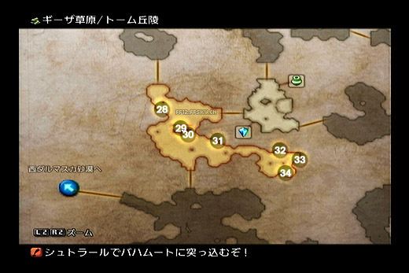
之后到达南部一个有记录点的小地图,找到目标小男孩,得到阴石,接着在草原的各个地图里找黑石获得能源,地图上都有标
记,100%了后自动回到小男孩那,结束任务.如果遇到了打不过的怪物,请逃跑,尤其那两个巨高的半狼人,必要的时候我们有机会
找他们算帐的.
回到集落取得一些奖励,然后回到王都找ダウンタウン（地下城区）的达兰老爷子,把太阳石交给他.小潘离队.
注目:
1,正常剧情流程迷宫里的 敌 人,只要能打得过的都不要放过,我们要经验要LP要素材(换钱),迷宫的里的箱子只要出现了就满开
掉,搜刮= =///魔法和技能有大多都是100%出现的,这里尽量不再赘述,只要是魔法的能拿到(有的迷宫不同区域 敌 人能力不同,如
果太强了就不一定要⻢上去拿,但是之后能力提升了再回来拿)就一定要拿.箱子方面只有特定要刷的我才会非常详细的一一说
明.城镇商店里贩卖的黑魔 时魔 绿魔也都买了吧,反正都能学,白魔看自己角色能学哪些再买,比如ケアル（疗伤）、ブライナ（解除黑暗）、ケア
ラ、ライブ（复活）、不要浪费钱.
2.关于装备,整个流程会有几个特定的换装备时机,到时候我会给大家指明去哪刷.在之前的如果箱子能开到比目前身上好的,就
装上,实在RP不行基本都没摸到装备的可以适当买一点,但不要大把投资装备,切记.FF12国际版前期不是很看装备,只要盘走对
流程这边的路线一般都没有压力的.
ガラムサイズ水路（加蓝塞斯水路）
入口在地图⻄北方, 5号仓库,从地图上可以看到.到达地下水路.之中的 敌 人都不算强,注意回复不要被围攻就可以.路上也没有
箱子注意的,能拿就拿了吧.不出现的就算了.路线也很简单,一路就能到达目的地.
ラバナスタ王宮（拉巴纳斯塔王宫）(王宫)
刚出来就有地图可以拿。
来到仓库以后,把能开的箱子都开了,有好东⻄。之后去触发剧情上2楼,会被挡回来,然后和旁边的佣人对话,他打
算帮你。按下方框就可以把守卫喊过来,然后走开一点,等守卫和佣人接触,绕过去,注意不要离士兵太近。下个区域同样
需要吸引士兵,不过他们很傻,因此躲士兵很简单,动点脑就可以了,过不了的都给我去玩MGS~~~~~~远远 喊一声让他们跑过
来就⻢上闪人。首先想办法去上面第二排的狮子纹章地毯那里使用关键道具,然后把士兵全招呼到右面就可以去找那个大放
绿光的隐藏⻔了。
进隐藏⻔直走,走到头找找左边墙上有一个小开关,按下去开锁,再去另一条支路进小房间进剧情。
ガラムサイズ水路（加蓝塞斯水路）/东侧补助阶段
剧情后开始讲解GAMBIT的使用,认真看,看不懂的看专题.
注目:指令全部是靠商店买到的,以后到各个地方有指令如果没什么钱就按自己的经济能力便宜的先买,一些比如HP<XX%我方
敌 方,XX状态的我方这些优先购买.以后不再赘述
Balthier与Fran加入,选职业Balthier(枪骑) Fran(黑魔OR时魔,别和小潘选一样).一加入就有一些LP点,开开执照吧.
一路偷偷 杀杀(3个贼= =让Fran去偷吧),一路到记录点,记录后,之后东部水量調整区,剧情,先是一场 杂 兵战.接着ASHE以Guest加
入队伍(Guest不能开执照)无所谓了.之后一路向前进入北部取水廊,真正的BOSS出现,4只黄色的屎莱姆(OH不,是史莱姆,打错了
抱歉= =)有铳耐性,富2代输出不能.不过Fran自带黑魔法1的执照能力,可以使用初级火焰,对付这些史莱姆还是颇有效果的,
再注意下回复.很简单就解决了.
战斗后听到FF历代经典的胜利音乐(别和我提FFX,⻦山那SB忘本的家伙,说了来气,不谈)
一路走到记忆点区域,存档后进入最終処理区画,遇到真正意义上的BOSS.如果之前凡是遇到 敌 人就打,那么到这里HP啥的也
是比较充足了,虽然BOSS攻击带毒,而且弱点是我们暂时没有的水属性.不过依然没有难度,注意回复和站位(尽量拉开距离躲
范围伤害,保持 远 程-----敌 人-近战-----回复的站位,这对今后的恶战会有好处),此战斗没有难度,如果运气好哪位的必 杀 出
了就跟着放吧.
之后我们的主角一行被当贼给缴械了被扔到大牢.
ナルビナ城塞（纳尔比纳城塞）地下牢/地下独居房
刚开始被缴械了啥武器都没有,发现记录点后继续走,强制战斗......3只猪人,我方有2人,猴子(VAAN)和富二代,二话不说先偷,
偷完很容易就把他们搞定了,剧情后取回装备.之后躲避士兵前进,这里无须恋战,只要躲避路线上的 敌 人干掉就好了,不是练级
的地方.多打麻烦又危险.要去哪都有提示.到达目的地后遇到Basch,他会以Guest身份加入(目前是没装备没武器,用拳头打)
バルハイム地下道（巴尔海姆地下道）(地下道)
刚进入就有一个商人,从他那里取得保险丝(是这么叫吧)顺带如果需要可以补充点东⻄.先去该版面上层接通第一个电源,然后
去商人旁边启动电源.一路的箱子有不少能开出装备,但是有几率,遇到了就开吧,不要强求出装备.很多蜘蛛在偷电,把他们干掉,
然后开相关.干掉那些偷电的,屏幕上方的电量就会恢复,但是如果你一直不干掉,会持续下跌,跌到50%以下后就会出现僵尸,如
果想练级打打可以,不过实在无啥必要,还是一路 杀 过去,偷偷 敌 人,开开箱子,把偷电的干掉就是了.迷宫里有炸弹怪和史莱姆,前
者小心它自爆,后者用火烧就是了.前期还是比较注重偷跟 杀 结合的,这样能获得很多的素材卖钱.虽然装备我们前期不是投资很
多,不过药还是要买的,而且还有7本(每本20000多)心得书要买(心得关系一些怪的素材掉落,一定要买)
值得注意的箱子只有一个ゼバイア大空洞的35号箱子(75%出现 35%是钱,是道具的时候50%是サクラの杖 黑杖,⻛魔法加强)
前期黑魔的实用棍子= =///
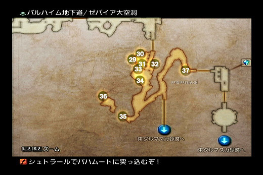
出口,BOSS战,说实话这BOSS也没啥难度,注意恢复基本没问题,先把它下的小蜘蛛收拾了,比如gambit设置攻击HP最低的,富
二代这个枪骑应该也有把枪了,难度不大.打完收工
東ダルマスカ砂漠（东达尔马斯卡沙漠）/ネブラ河の岸边
地下道出来后就是东沙漠了。一路回王都,河边的集落有东⻄卖,可以补充下,地图要是钱够顺带买了吧。,注意下这次的
路程有2个东⻄要取得,都是100%出现的箱子,分别是
砂原の天坂
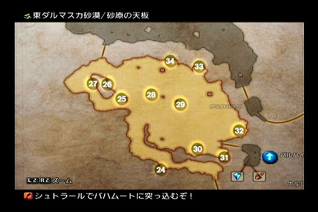
31号箱子里有魔法ポイズン(毒 黑)
砂紋の迷宮
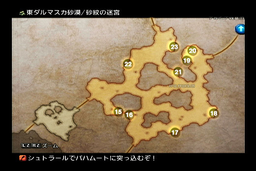
19号箱子サイレス魔法(沉默 黑)
其实这2魔法之前第一次来的沙漠的时候就可以拿因为,这里 敌 人都很弱,但是如果有幸碰到一只很难办的滚滚鸡,那么恭
喜你,你⻅到了珍惜怪,逃吧~之所以这里写其实之前拿了也不是对流程帮助很大,当然已经拿了就无所谓了,回去的路还
有2个首饰(一个100%出现,一个不是,不过也很高几率)如果有出现就满拿下吧,不是很重要,砂原の天坂那个25号出现
的首饰是防御失明和暗减半的,而小キャンプ的那个100%出现首饰是EXP=0,后面调整等级时用的,现在没用。
王都ラバナスタ（王都拉巴纳斯塔）
莫古传送点可以用了,免费的!先去道具屋发生剧情,然后再到ダウンタウン（地下城区）的老爷爷那,剧情。Basch正式加入。选职业
(骑士)
沙海亭已经有几个E级的简单讨伐任务,如果之前一路的 敌 人都是砍过来,并且偶尔去摸摸宝的话应该都可以做掉了,下面
一一说明。先去沙海亭发生剧情,富二代和兔子重新加入。顺带接下讨伐任务。这里着重提示一下,在看板接下任务后要去
找对应委托人对话才算正式开启讨伐,否则你踏破铁鞋都找不到讨伐怪。所以建议新人做讨伐之前先到菜单 - グランレポー
ト - モブリスト确认讨伐进度是否已经到了第二步。至于委托人的位置和姓名可以在看板确认。
手配書（讨伐令） No.1 - 熱砂に現れた魔犬（现身热砂的魔犬） | Wolf in the Waste (E级通常讨伐)
委托人:ガスリ|Gatsly[砂海亭
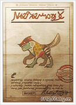
敌 人出现区域:⻄ダルマスカ砂漠(⻄沙漠) ガルテア丘陵
敌 人出现在⻄沙漠ガルテア丘陵的右下角,没难度,硬砍就行。这里注意下,在⻄沙漠的風紋の地有东⻄要取
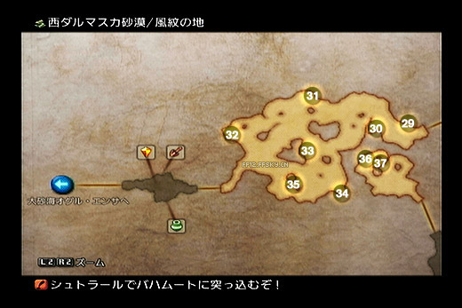
36号箱子ダイヤの腕輪（钻石腕轮）(25%几率出现 100开出) 雷无效,还有就是开箱子道具变化变化的作用。不过这个功能在本攻略里
基本用不到。作完回王都交差,奖励没啥好东⻄,不过有个轻装帽,如果猎人帽子没这个好就装上吧。
手配書（讨伐令） No.2 - 砂風にゆれるサボテンの花（砂风中摇曳的仙人掌花）
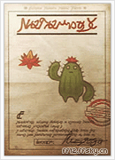
委托人:ダントロ|Dantro[東ダルマスカ砂漠（东达尔马斯卡沙漠） 小キャンプ
敌 人出现区域:東ダルマスカ砂漠（东达尔马斯卡沙漠） 砂紋の迷宮
接完任务去找委托人会有一段剧情,然后直接去目的地找它好了,除了针千本有点威胁之外其他没啥,这招他也很少用。我
方这时候应该有HP超过1000的人了。没有难度。奖励同样是没好东⻄,10瓶小回,500元。
手配書（讨伐令） No.3 - 地下水路に消える（消失于地下水路）
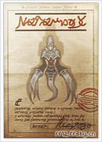
委托人:ミルハ|Milha[ラバナスタ·ダウンタウン（地下城区）北部就是王都地下北边。
敌 人出现区域:ガラムサイズ水路（加蓝塞斯水路） 最終処理区画|Overflow Cloaca
敌 人就在我们离开下水道的时候打BOSS的地方,入口也在上次入口的附近,进去后⻢上就是那场景,在那常⻅转转这幽灵
就出现了。回复魔法对它效果不大,而且还会死亡宣告。不过这时我们的4人里基本都有开了必 杀 执照的吧(猎人可能没开)
所以稍微砍几刀后就用必 杀 连掉他,没连掉也没事,注意回复,干掉还是很容易的。
工会讨伐做差不多了目前,现在我们要让7本古书出现(很重要)
连续调查委托板40次,再和防具店老板对话15次,武器店老板30次,魔法屋老板25次,这样交易品中会出现6本古びた書
物。王都市街地⻄部,在工会商店的对面找到手配書（讨伐令） No.1 - 熱砂に現れた魔犬（现身热砂的魔犬）的委托人,和他对话,再去商店,追加最后一
本古びた書物。
心得书的作用是让不同种类的怪物在完全不影响其基本物品掉落的基础上,我方 杀 死怪物时以完全固定的概率掉落各式各样
的战利品!当然目前每本2W多的价格是比较高的,所以也不要太急着全买或者啥,我们这流程虽然对这书有需求但前期没
啥需求,所以不影响经济的情况下一本本入吧,最先买狩人の心得,第二本ナイト（骑士）の心得,再是竜騎士の心得,后面的随意
了。
外加如果这时候有钱顺带把GAMBIT买些吧(全买需要3W,量力而行,经济困难就先买重要的,上面有提)
现在去工会会⻓那里领2级和3级工会等级奖励吧。顺带有2个紧急讨伐,难度会高过之前的通常讨伐,虽然说现在的情况再
练练也能打,不过打起来相对痛苦,咱这攻略不是要求舒服么,所以咱现在就不去硬碰,反正也没什么好东⻄,以后⻦枪换
炮了再回来搞定(2个任务先接,但无须做)
工会商店和工会总部位置
目前也没其他事可以做了,咱就继续剧情吧,从王都⻄⻔⻜机场,坐⻜空艇去天空城市。
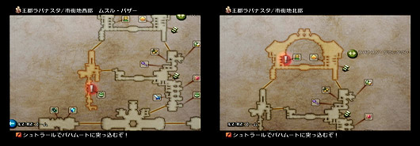
空中都市ビュエルバ（空中都市布耶尔巴）
出来遇到王子,Guset身份加入。之后就去目标矿洞,⻔口卖地图,价格不贵,就买了吧。
ルース魔石矿
一路偷 杀 到底,剧情,王子离队,富二代死对头出现,这时候别硬头皮上去送死, 敌 进我退走为上计,想报仇后面有机会。
按住R2一路逃到底,路上 敌 人无视掉。
空中都市ビュエルバ（空中都市布耶尔巴）
到这里又有新魔法可以买,记得购入(钱的事我不多嘴,多连锁怪,多出素材,钱一般不会很缺),如果经济还算允许,而
且又觉得自己攻击太低了,可以更换下武器装备饰品(切记本攻略装备不是靠买的,后面有地方大幅度提升装备,这时候不
要过分投资,适当换一些就可以了,不要全体全身都换过去,没意义)轻装头不用买,下面任务直接送一个。
整备完了,我们去浮云亭接个任务吧。
工会讨伐:手配書（讨伐令） No.4 - 魔石鉱に生きる魔物
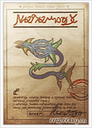
委托人:エイコム|Aekom[ビュエルバ 採掘場前小広場
敌 人出现区域:ルース魔石鉱（鲁斯魔石矿） 第1運送路|Transitway 1
一条很大的蓝色的蛇,很明显。 敌 人速度很快,攻击也不低,尤其到HP剩不多的时候,更是恶心。不过毕竟咱是常模式,
HP量足够(如果你之前都按我说的向来一路屠的话)注意回复,狂暴了就用必 杀KO之,绝对无问题。做玩任务又是一个轻
装头。还有一个 大蛇の抜け殻 这个素材是后面分支任务需要的,千万别卖掉
紧急讨伐NO2那个现在可以做不过难打过,也没啥好东⻄咱不急,先放着吧。
现在咱去ルース魔石矿的スーニア平行橋反复地Chain骷髅,掉落的素材也能换很多钱,而且这里一次能刷很多,但要注意
步步为营不要被围攻了。谋 杀 了小王子可以多分些EXP。这里是初期练级好去处,等级 LP 钱,应有尽有啊~~~(如果之前
那个蛇的任务打不过可以先到这里练完再做掉),也不用刷太多,一趟来回30来个,清剿之后AC2刷新再来。200只就差不多
了。相信我,很快的!不累人,当然要愿意多刷也可以,不过必要性不是很高,腻了就走吧。
出来后把骨块和暗之石卖商店,完了进行造谣小游戏。细心的玩家可能发现很多街口有端着调查板的调查员,对着他们“喊
我乃巴修!”颇⻅效果;去人多的地方按□键也好,商店里也是可以喊的。但是注意不要在士兵面前喊,前功尽弃。100%后
出现剧情。被抓到战舰上。
戰艦リヴァイアサン（战舰利维坦）
Vosler以Guset的身份加入队伍,路线并不复 杂 ,但注意观察激光警报,虽然咱是打算一路屠过去,不过没必要去触发警报招
敌 人来,血红的场景加噪音警报实在是折磨人。一路前行找到ASHE,路上记得拿2个箱子
中層東ブロック（中层东区块）
11号箱魔法(单体睡眠 黑)
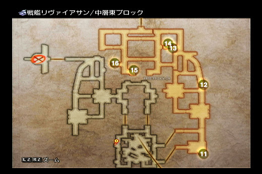
サブコントロールルーム（副控制室）
19号箱技能(HPMP 没啥用本攻略)
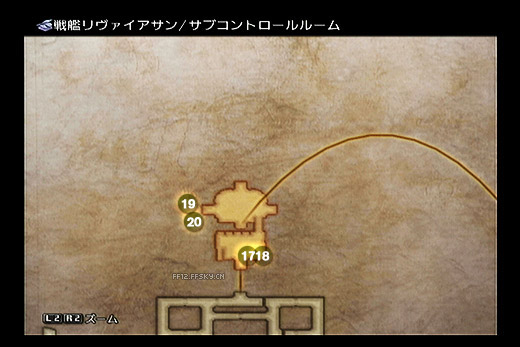
给ASHE选职业(武士)
继续往下一个目标地点前进(地图有标识)中途小潘正式加入,全六人到齐。同时Vosler离队。
继续前进,遇到BOSSジャッジ·ギース（裁判长基斯）,人类BOSS,百层里很恶心,流程里很渣,我不知道我还需要写什么,直接砍就是,
连必 杀 都用不着(流程BOSS都是很轻松的)
空中都市ビュエルバ（空中都市布耶尔巴）
直接去任务标记地点,侯爵府触发剧情。某之前的哥们再次加入。
⻄ダルマスカ砂漠---大砂海オグル`エンサ（大砂海奥格尔·恩萨）
到达⻄沙漠,旁边有商人,可以购买新魔法技能,补充点药品。一会的大砂海有很多不错的装备等着我们,这也是游戏里第
一次大规模的提升装备的时机,浑身的破铜烂铁终于可以更新了(其实这里弄到的装备直接在到达王墓后的商人那里可以买
到,但是,价格很贵,前期咱虽然不穷,但是也不能这样乱花,而且这里装备很好刷,所以也没啥好怕的,也为不久之后的
更大提升做准备)
刷装备方面大多都是可以刷多个的(重复出现)除了次强和最强装备是再生不能的。,需要多少看自己的人员配置和耐心
定,建议给队员都穿上,今后刷箱子也是这样,不在赘述。
这里的 敌 人同样没什么威胁,⻛魔法对付他们很好,让黑魔装サクラの杖使用エアロ。但是但是!如果你看⻅一个巨大的火
球在四处游荡,甚至颇有爱心的给你加状态,也千万不要靠近!不要被蒙蔽了还好心回个礼!哪怕你只是在它附近使用哪怕
只是Cure魔法......你想欣赏FF12的GameOver音乐么?说不想已经晚了......大砂海オグル`エンサ（大砂海奥格尔·恩萨）这个地图只有一个要拿的箱
子
第1石油工場
12号箱子(100%出现并且就是金のアミュレット（金护符）,获得LP 2倍,怎么用你知道的= =///你的板凳队员会爱它滴)
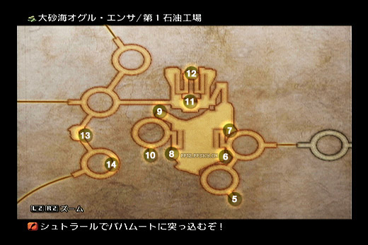
虽然大砂海オグル`エンサ（大砂海奥格尔·恩萨）只有一个要拿的箱子,但是大砂海ナム エンサ（大砂海南·恩萨）的風化する岸辺地图里的11 12 13号箱子是我们需要
的装备,但是必须从这个大地图过去,直接从大砂海ナム エンサ（大砂海南·恩萨）是过不去的。去的方法是到大砂海オグル`エンサ（大砂海奥格尔·恩萨）的中央ジ
ャンクション,从这里右上的ゼルテニアン洞窟（泽尔提南洞窟）进入
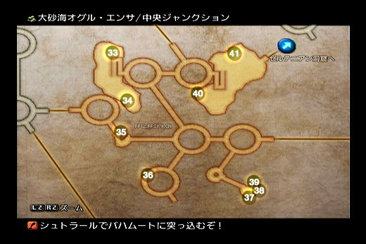
ゼルテニアン洞窟（泽尔提南洞窟）这个部分只有一条路,里面多数是绿色的果冻,目前实力打不了,一路逃就行,这段路不⻓但陷阱很多所
以建议装上侦测首饰跑。之后到达大砂海ナム エンサ（大砂海南·恩萨）的風化する岸辺
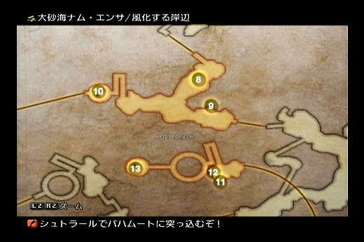
11号箱子(70%出现,55%是钱,是道具时50%是フライングヘルム,重装头,有耐心的1AC刷2个)
12号箱子(几率和上面一样,チェインメイル,重装身,同上有耐心刷2个,没有就刷1个吧)
13号箱子(100%出现,只能拿一次,⻲のチョーカー,扔魔法时使用金钱代替MP)
往左前行来到大砂海ナム エンサ（大砂海南·恩萨）,蓝色水晶地图这里会发生一段分支剧情,建议做掉,被委托打乌龟。出⻔以后看到大乌
龟,没难度,逼近我们已经有防御破坏了~吓!(⊙ o ⊙ )乌龟在和沙盗打。我们只管全盘收割就对了。打完后尝试从大砂海
オグル第2石油工場进入大砂海ナム会发生剧情。跟着莫古进去发生剧情,刚才死掉的沙盗那里有一朵花,靠近按○取得イ
クシロの実,作用是下面一个BOSS伤害减半......
一路 杀 到目的地前的一个地图ぬくもりの消える路,往右上走,进入熱風の下りる高台,这里有大量我们需要的好东⻄。这
里的 敌 人也不强,就是大⻦和滚滚鸡,一路砍 杀 过来的话,肯定是没问题的了。
44号(75%出现 35%是钱 是道具时50%ローエングリン 片手剑 攻击40)
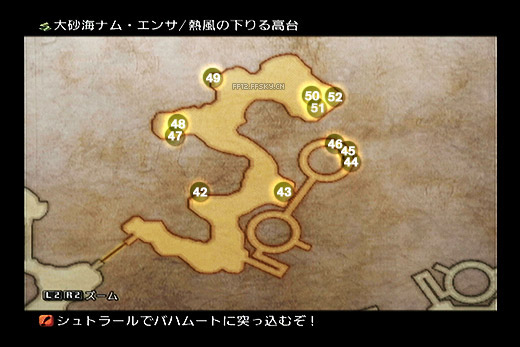
45号(100出现,只能拿一次,雛のティペット,EXP 2倍,怎么用你知道的)
46号(75%出现,30%是钱,时道具时50%是チョッパー,匕首 攻击40 10%虚脱)
47号(75%出现,30%是钱,是道具时50%是ウォーワーカー,轻装帽 14魔防 110HP)
48号(75%出现,30%是钱,是道具时50%是詠唱のジェラーバ,魔装身,防御15 魔力+4)
50号(75%出现,30%是钱,是道具时50%是閃光魔帽 魔防15 魔力+4 速度+3 最大MP+36)
51号(75%出现,30%是钱,是道具时50%是バルキーコート 轻装身,防御14 HP+120)
进入王墓。
レイスウォール王墓（雷斯沃尔王墓）
有个游商人,不过我们身上装备都更新过了,就无须买了,到下次的⻜跃前不用换了,如果觉得攻击低就把枪或者刀吧,经
济不宽裕就算了,接着的2个流程迷宫里的 敌 人根本打不动我们。
一进入BOSS战,对BOSS使用刚才分支任务得到的イクシロの実,剩下的根本就没有威胁了,随便砍,黑魔应该会水魔法
了,更容易了。记得进去之前碰下黄水晶存盘。
进入内部后Boss战:デモンズウォール（恶魔墙）,这个在FF4和5里很出名的BOSS了,第一战比较麻烦,所以咱无所谓,逃!第2战就
免不了,BOSS会失明,异次元,相当恶心,好在第2战路比较⻓,攻击旁边的灯,可以让BOSS稍微停一下。全力攻击,注
意恢复失明状态,黑魔装樱杖用⻛魔法炸。再加上必 杀 连携,就可以把BOSS解决。其实也不难主要是时间要把握。
大通廊取得3号
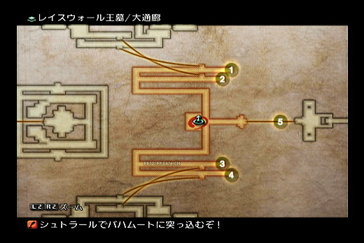
3号(时魔法 隐身 100%出现)
这之后的怪基本都是被我们虐的份了,根本伤不了我们啥,解迷部分只要分别到北翼の通廊（北翼通廊）和南翼の通廊的中间把机关打开
就可以进入密道就可以到BOSS处
北翼通廊有一把火杖拿(在⻄边,如果有开到箱子就拿了,没有也不用特意刷了,想刷也可以。11号箱子)
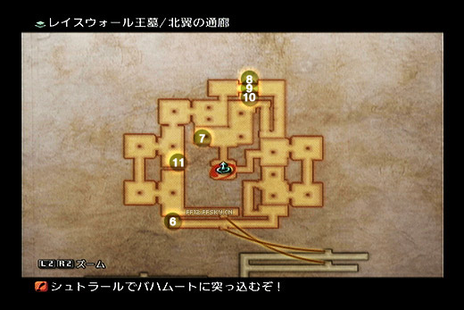
BOSS前的地图有技能无作为魔(22号),有了这个武士就雄起了!这个场景出现的4个箱子都是100%都拿了吧
召唤兽:魔人ベリアス（魔人贝利亚斯）(白羊座)
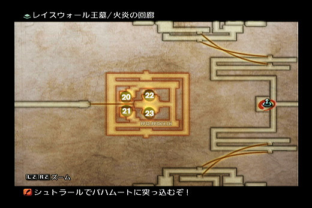
剧情召唤兽,弱= =,记得保持“近战-敌 人-远 程”队形,伺机解除自己的油污状态,随便打。收服后分配给Basch。
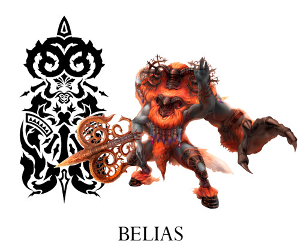
晓之断片入手,主角们又被抓了,有叛徒= =///
战舰シヴァ（战舰希瓦）
Boss战:ウォースラ（沃斯拉）
我方使用魔法时BOSS一定进入反射状态,所以直接砍,没难度,乐胜。此时伊瓦利斯大陆已经向玩
家展开了双臂,自由的⻛吹向广阔的大地。大段的时间不发展剧情而到处探索了。
自由探索
现在是大段的提升自己的时间,流程咱就先扔一边。现在开始。
先去沙海亭接任务,一大堆,没事,先接了再说。这里我们先解决2个目前做起来很轻松的任务,之前有一个我们接了。
緊急討伐（紧急讨伐）No.1 - 大草原の小さな愛（大草原的小小爱意） | Little Love on the Big Plains
委托人:ダーニャ|Dania[旱季限定 ギーザ草原（基萨草原） 遊牧⺠の集落
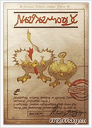
目标出现条件:先把ギーザ草原（基萨草原）ギーザス川沿岸北側区域的怪清干净,回集落再返回进入这个区域就出现了。
3只小鸡+1只母鸡,以我们现在的装备来说根本没有难度,砍吧,最后再用必 杀 加速加速。
这时候去工会商店买绿魔法,重要的是诱饵魔法。
手配書（讨伐令） No.7 - 空から呼ぶ声（来自天空的呼声） | A Scream from the Sky
委托人:帝国兵シャルアール|Sherral[王都武具店
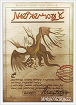
出现地区:大砂海ナム·エンサ熱風の下りる高台|Simoon Bluff 就是我们刷装备那场景最北端,其实没接任务之前就可以看
到他了。
因为是⻜空 敌 人所以近战角色发力不能,骑士诱饵,枪攻击(可对天,而且前期攻击不错,这职业前期的作用),再上个黑
魔吧。应该是很好解决了,靠现在的装备。(如果实在打不过,那就等后面自由探索刷完装备再回来找它)
先找它的原因是他的报酬不错,有一个⻉纹盾(物回+5,永久自动魔盾),这盾到后期都很好用。还有把弓,这个没用卖了
吧。
现在我们要做2个分支,以开启地下道以及东沙漠去山地的路。这2地方有即死剑和许多能提升现有能力的装备。当然在去之
前要做好准备。先确定时魔是否有这几个魔法:ストップ(停止)、ドンムブ(止步)、ドンアク(指令封印)、グラビデ
(重力)。这4个魔法全部是商店卖的,如果有按我说的一看到有商店就卖新魔法做,那肯定都有了。(分别在:大砂海,地
下道,天空都市,⻄沙漠的商人)这里顺带看下黑魔应该是有睡眠魔法了。
这里还要顺带开启时魔和黑魔的“满HP魔力UP”的执照,因为魔力影响魔法状态的命中,一般开启执照后只要满HP状态魔法
命中率就翻倍,在越级刷宝的地方里吃状态的 敌 人都能顺利中招,如果没有这个执照就容易出现MISS导致危险。
现在进行分支任务(其实专题有,但为了方便新玩家,还是直接写出来,以下来自专题)
1 . 去東砂漠·小キャンプ与委托人ダントロ对话,接受将「サボテンの花仙人掌之花」交给其妻的委托。
2 . 将仙人掌之花交给東砂漠·ネブラ河沿いの集落南側的ダントロ妻子,得到「千本針」。
3 . 离开集落后,再返回集落,和停船旁边的チグリ对话,一起到达北侧。
4 . 与チグリ的父亲ルクセラ对话后,再去找チグリ回到集落南侧。
5 . 与ダントロ的妻子对话后,调查房子背后地上的仙人掌花。
6 . 带着仙人掌哥哥一起坐船去北岸。
7 . 发生仙人掌家人团聚的剧情,得到1000Gil和ナパームショット
8 . 回到集落南侧与妻子对话得知需「セム貝の貝殻」治疗受伤的旅人。
9 . 在码头附近或者集落外面的沙漠河边(两处地方都会有)可以拾到⻉壳交给妻子,又被告知需要「ネブラリン」。
10.返回东沙漠与小キャンプ的ダントロ对话,在附近的行李旁找到「ネブラリン」,返回集落交给妻子,被告知还需要
「谷間の花のしずく」。
11.过河去北岸,继续向北走,在断裂の砂地（断裂沙地）|Broken Sands各处裂谷、崖边调查开花的树(有多处),获取「谷間の花のし
ずく」,原路返回后交给妻子。(北岸我们一会要来刷装备,但是目前我们是来做任务的。而且 敌 人相对我们现在的能力比较
强,一路慎重,那些有花的山谷的地方就可以得到任务用品)
12.离开集落后,再进入集落,与屋子后面已经恢复的旅人对话,得到バルハイムのカギ| 巴尔海姆之钥匙。(如果东⻄都在
可以得到 LP 2倍的首饰)
这样,北岸通向山地的路都可以去了,地下道更深的地方也能去了。
到达北岸,这里有一些要刷的箱子,主要我们能面对到的主动攻击 敌 人是狼,还有2只龙(分别在不同的场景),不过这2只
龙没有很大威胁,第一只我们可以逃过去,第2只其实也行。
队伍安排战术:越级刷怪的时候,时魔最好手动控制,因为是前期MP不多,还要考 虑MP,手动最好。上 时魔(开自动但
手动操作使用魔法) 黑魔(各属性弱点攻击魔法) 骑士(目前他比较硬) 先用时魔对 敌 人使用状态魔法(有时黑魔的状态
魔法跟进),然后⻢上换到骑士前冲当盾。其实不上黑魔也可以,上个武士或者枪也无问题。但时魔是一定要出的(HP时刻
保持全满)。
東ダルマスカ砂漠（东达尔马斯卡沙漠）(北岸)
我们先分析下 敌 人
东沙漠北岸:主动攻击 敌 人为2种
ウォーグウルフ | Worgen 也就是狼,红色的。HP大约2000多。经常2、3只一起出没。吃多种异常,不过对于我方来说比较
有用的就是 止步(时) 和 失明(黑)。
对付方法:一开始用时魔开始吟唱止步魔法,然后使用骑士前冲,砍那些狼,注意止步后只是移动停止了,还可以攻击,打
的时候注意HP,因为狼一般都是2、3只一起的。在沙漠北岸的2个地图只能这样,因为好装备暂时没刷到,被打比较疼,进
入山地后我们稍微有点装备了,所以黑魔的失明可以不用了,直接把黑魔换成武士或者枪骑。
ワイルドザウルス |Wild Saurian
一开始在东沙漠就能⻅到的 敌 人,这里变成主动攻击型的了。30级,HP大约有5000多。北岸2张地图都会有一只,而且都在
必经之路上,吃多种异常。对我们有用的是 止步 和 失明。⻛属性弱点。
对付方法:建议不要打,直接扔他一个止步中了就闪人。因为他攻很高,止步只能让他停止移动。如果非要干掉。那就止步
后上黑魔对他用失明( 敌 物理攻击MISS几率增加),然后⻛魔法炸,时魔 远 处射箭+武士无作为魔,一旦他状态消失⻢上补
上。
这里要拿的箱子
ヨーマ大砂丘,只有一个箱子(本攻略)还有一个如果你选了破坏请拿,摸着了卖也可以。
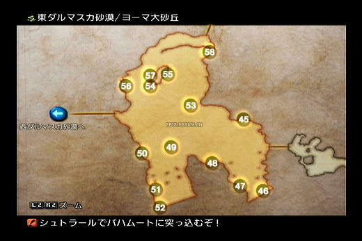
46号(75%出现 35%钱 道具时50%是エビルスレイヤー,片手剑 攻51)
50号(75%出现 38%几率开出ボーンメイル 重铠)
56号(75%出现 35%钱 道具时50%是ハンマーヘッド,斧头,如果选破坏了去拿)
断裂の砂地（断裂沙地）,箱子很多,最上面的几个可以靠到山地1AC来刷新,最上面的2箱子旁边的 敌 人都是不主动攻击的。
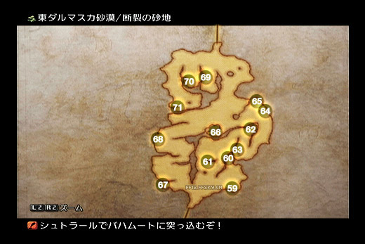
59号(80%出现,35%钱,道具时50%是 黒頭巾 魔头 魔防33 魔力+5 速度+4 MP+60)
67号(80%出现,35%钱,道具时50%是オベリスク 枪 68攻)
70号(100%出现 再生不能 バーサーカー（狂战士） 狂暴首饰)
71号(80%出现,50%钱,道具时50%是ダイヤヘルム 重头 魔防29 力+7 活力+3)
モスフォーラ山地（莫斯弗拉山地）
照样子,先分析 敌 人。
我们会遇到的主动攻击 敌 人有3种。
ウォーグウルフ | Worgen 也就是狼,红色的。这个同上面
フンババ | Humbaba 狼人?反正就是一种站立的大型 敌 人。5000多的HP,吃多种异常状态,但是比较有效的是指令封印和
停止,一般会1~2只在一起。
对付方法:跟打狼一样,而且指令封印后 敌 人无法攻击,但是指令封印比止步持续时间短,所以我们要做的就是尽快干掉
他。
パイソン | Python 蛇,都是一只出现,突然从地下钻出来(吓人一跳),3000多的HP,吃停止(前几种 敌 人也吃停止,但是
停止是单体的,止步和封印是范围的,MP不多而且 敌 人数量多时停止不保险)。
对付方法:出现时⻢上用时魔手动停止。之后虐 杀 即可。
頂きをのぞむ山道,有2个箱子拿
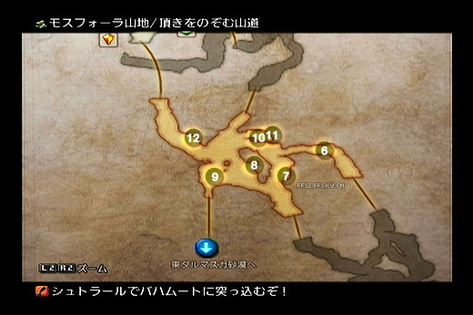
8号(75%出现 40钱 道具时50%是ゴールドスタッフ 黑杖 魔力+6)
11号(75%出现 40钱 道具时50%是菊一文字 双手刀 71攻)
灰白のひさし
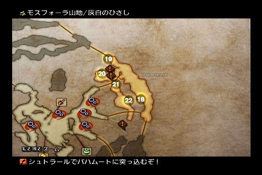
18号(70%出现 40钱 道具时50%是アベンジャー 匕首 攻66 狂暴10%)
这场景的20和21也可以顺带拿,20是技能(没啥用)
水音の伝わる処（水声传来处）(就是集落,没有 敌 人,有商店和黄水晶,SAVE吧)
24(100%出现,再生不能,盗賊のカフス,偷东⻄成功率上升)
25(100%出现,再生不能,这个不多说了,钱放魔法首饰,暂时拿不到)
岩坂のそびえる路
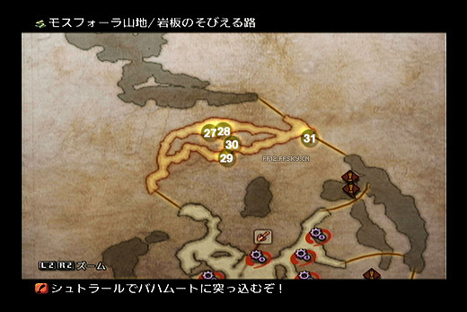
28号(100%出现,再生不能,ギリーブーツ,加数值还不错的首饰,100%出现顺手了)
29号(75%出现 40%钱 道具时50%是ダイヤアーマー,重身 防御40 力+7 活力+5)
30号(75%出现 40%钱 道具时50%是黒装束,魔身 防御33 魔力+6 速度+3 MP+38)
以上是东沙漠(北岸)到山地装备更新完成,接下来我们要去地下道刷几件东⻄,其中一个就是 83攻的片手剑 告死者。
バルハイム地下道（巴尔海姆地下道）
先补充好药品,确认自己有重力魔法。然后通过黄水晶传送到地下道,⻄侧的新道路已经开启,我们去刷告死者!
首先我们进入 第5特別作業区 这里 敌 人只有2种,蛤蟆和龟。这2者都吃睡眠和停止,而且都吃重力(1/4 HP损伤)。时魔一
定要上,其他2个随便(注意地图里有个 病毒 陷阱,目前中了麻烦)
把这个场景的 敌 人全部清光,有时候发现请光了还回去还有,就继续清,1AC几次没 敌 人了就对了。场景 敌 人都清光以后,
珍惜怪几率出现。
注意:这里说明一下,有些 敌 人概率出现,比如这个20%的罐子蜘蛛。由于判定是否出现只要1AC,而刷新需要2AC,所以
在地图入口切屏大概5次来回,再去出现地点找珍惜怪会是个比较快捷的方法。
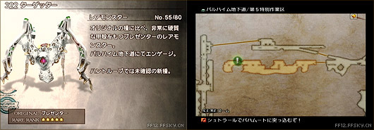
偷的人上盗贼手铐,建议3个贼都上,FRAN负责恢复,其他2人负责偷,直到偷到为止。该珍惜 敌 人20%几率出现。旁边还
有个箱子能刷出冰杖(冰属性加成)顺带刷了吧。贴边存在。偷完就别打了,撤退吧。有了告死者,骑士站起来了目前,主
攻少不了他了。
然后的2个东⻄就可刷可不刷了,主要看你怎么安排猎人的执照。猎人的执照4个必 杀 都有连接,现在主要看你要不要⻢上来
把81攻的忍刀了。如果你选了这把,就必须在水属性忍刀和土属性忍刀里放弃一把。(反正都是鸡肋)怎么选,各位自己看
着办。怎么取得我会在这里说明。
首先我们要穿过東⻄バイパス（东西旁路）,这个场景里有炸弹怪,不用担心他们不是主动攻击怪,只要你别在他们旁边用任意范围魔法
或者攻击他们。路上有个箱子里有100%出现魔法记得顺带,一开始的地方折回就可以看到。
ゼバイア連結橋（泽拜亚连接桥）
这里就是我们要的装备的地方,主要攻击 敌 人是デッドリーボーン | Dead Bones,就是骷髅兵,吃封足 封指令 停止,会使用
魔法。怎么打你看着办吧,中了上面3个状态基本对我们的威胁就低得多了。
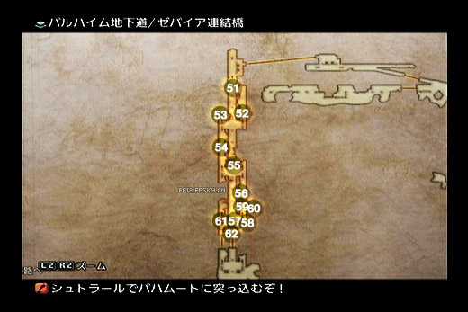
60号(100%出现,再生不能。影缝 攻81 减速10%)
62号(100%出现,再生不能。魔攻破坏,这个必须从 ⻄部新坑道区 饶过去才可以,不用走多 远 ,很轻松)
那完就撤,别再往里面走了,里面有双子座召唤受,现在不好打,咱先离开以后再找它。
本阶段的刷装备结束。现在该去清下任务顺带发展剧情了。
緊急討伐（紧急讨伐）No.2 - 魔石の力におどらされ（被魔石之力操纵） | The Cry of Its Power
委托人:ピリカ|Pilika[空中都市ビュエルバ（空中都市布耶尔巴） クス空中広場就是只莫古
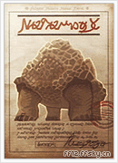
目标出现位置:ルース魔石矿第二矿区采掘场
以现在的实力几乎没有任何难度,给骑士加诱饵,然后直接砍就是了。
至此,E级任务全部完成。
冒险故事
ギーザ草原（基萨草原）(雨季)-オズモーネ平原（奥兹蒙尼平原）
从草原南方进入平原(路上不要招惹元素),平原⻄南方向就是我们的目的地,一直朝⻄南方向走就对了, 敌 人不强,以我
们身上的装备随便轰过去没有 敌 人能对我们造成威胁,但要注意,平原的大地のらせん（大地螺旋）中间有通向ゼルテニアン洞窟（泽尔提南洞窟）的路,
现在我们暂时别进去,如果我们有25级左右进去可以搞掉摩羯座召唤受,但是不急,没这必要,如果没25级还是更别进去,
进去干掉它是没问题,但是很累,不舒服,咱的宗旨是舒服的流程。
ガリフの地ジャハラ（加里夫之地加哈拉）
先和守⻔的人对话,然后一路前进找到⻓老,之后往最里面找到最⻓老。此处的剧情就结束了(王子加入)。在古き者たち
の丘有箱子,有个100%在,在地图⻄部,有个ほろろの根付（霍罗罗挂饰）(回复药效果提升,很重要!)流程真的没啥好说的= =///不过
咱这里要做几个任务,清任务再次开始~~~~~~~
手配書（讨伐令） No.9 - 衝突!オズモーネ平原（奥兹蒙尼平原）を守れ!（冲突！守护奥兹蒙尼平原！）| The Defense of Ozmone Plain
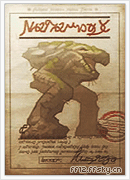
委托人:小長老シュグム|Low-Chief Sugumu[ガリフの地ジャハラ（加里夫之地加哈拉） 古き者たちの丘
目标出现条件:到平原的ひびわれ谷（裂谷）全灭叫ウー的大⻦,然后切换场景再回来就遇到了エンケドラス。这里注意不要遇到珍
惜怪,如果遇到了就2AC重来。
这只 敌 人很烦人,会回复,还会回的特多。所以在他HP剩不多的时候必 杀 连携干掉他。奖励是一个金のアミュレット（金护符）(LP
2倍)现在咱有3个了,LP大把的来。
手配書（讨伐令） No.10 - 流れ落ちる雨と指輪（落雨与戒指） | A Ring in the Rain
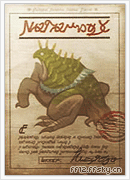
委托人:サディーン|Sadeen [雨季ギーザ草原（基萨草原） 遊牧⺠の集落
出现区域:雨季ギーザ草原（基萨草原） 星ふり原（星落原）|Starfall Fiel(一定要雨季,不过剧情现在一直雨季)
出现在桥头,硬砍吧,真的,这已经无须战术了。
(任务结束后得到的“カエルの指輪”,继续和委托人对话,今后和旱季ギーザ草原（基萨草原）的長プルノア对话,最后在雨季的时节
再和委托人对话,把“她”的事情交代一下,委托人就“安息”了 。)
手配書（讨伐令） No.6 - 誰がために竜はなく（龙为谁而鸣）| For Whom the Wyrm Tolls(C级)
委托人:バルザック|Balzac [王都ダウンタウン（地下城区）北部|North Sprawl] (工会等级4级,肯定够)
目标区域:⻄ダルマスカ砂漠 風紋の地|Windtrace Dunes,必须沙暴天气中才会出现!
火弱点,HP虽然⻓,但没有任何 杀 招,随便打打就过了
虽然还有几个任务没清,不过不急咱们继续前进,前往エルトの里（埃尔特之里）
----------------------------酱油的分割线--------------------------
第2篇 http://bbs.ffsky.com/showtopic-1728204.aspx
第3篇 http://bbs.ffsky.com/showtopic-1728205.aspx
第4篇 http://bbs.ffsky.com/showtopic-1728206.aspx
第 2 篇
ゴルモア大森林（戈尔摩尔大森林）
跟原来一样,这里一路 敌 人对我们无法造成什么威胁,一路偷偷 杀杀 开开箱,到达針を狂わせる路（使针迷乱之路）区域,这里会触发剧情。
(路上一路些封印去不了,剧情以后就可以去了)
エルトの里（埃尔特之里）
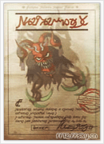
⻔口有莫古开的商店,注意更新魔法技能与补充药品。还有地图卖,经济宽余就买吧。之后一路顺着地图走到最里面,触发
剧情。另外導きの宮（引导之宫）有一个魔法(时,单体加速)在这个地图右上角出现,走到尽头就可以看到,100%出现。
オズモーネ平原（奥兹蒙尼平原）
首先在大森林入口那个记录点碰到士兵,给他们ポーション（回复药）,他们就会把陆行⻦借你。因为目的地必须使用陆行⻦才能进
入。
图(自己截隐藏路进入 蛇矿入口)
从这里进入才能到达ひびわれ谷（裂谷）的南部进入ヘネ魔石矿（海尼魔石矿）
ヘネ魔石矿（海尼魔石矿）(以后简称蛇夫矿)
虽然这里是隐藏BOSS 最强召唤受所在地,但目前迷宫的隐藏部分是进不去的,我们只能去剧情部分。一路 敌 人 杀 进去(也
只有一条路可以走)到达里面发生剧情。BOSS战。
轮龙一只= =///一点难度都没有,切了。剧情,回エルトの里（埃尔特之里）剧情,得到レンテの涙（莲特之泪）之后出来到大森林。
ゴルモア大森林（戈尔摩尔大森林）
一些原来被封印的路也能走了。持有关键道具レンテの涙（莲特之泪）就可以进入被封印的区域,虽然幻妖之森也开放了(南边进入)但
是那里我们暂时还是不要去。先剧情。但时候有去的时候。往东到走眠れる大樹の広場（沉睡大树广场）BOSS战,前面一个场景有个黄水晶
记得记录。
这BOSS其实对于我们现在来说并不是很强,不过他的HP降到80%以下时一定会使用シオウルスボール（孢子球）,给我方附加异常
很,我们这时候也没有锻带所以很容易就命中导致全灭。所以选择一个 远 程单位(最好开启万能药知识1或者1和2)接近
80%的时候把 远 程的拉 远 。放完后⻢上对中多项异常的人物使用万能药。
パラミナ大峡谷（帕拉米纳大峡谷）
大峡谷里有苏生技能,还有一个既死魔法(里魔)在カーリダイン大氷河（卡利达因大冰河）,不过我们攻略里没有赤魔所以用不上。到达神
都,我们不记得发展剧情,先做做任务吧。
手配書（讨伐令） No.11 - 死者よ、永久に眠れ（死者啊，永眠吧） | The Dead Ought Sleep Forever
委托人:大長老ザヤル|High-Chief Zayalu[ガリフの地ジャハラ（加里夫之地加哈拉） 古き者たちの丘|The Elderknoll]
出现区域:ヘネ魔石矿（海尼魔石矿）1期坑道|Phase 1 Shaft
直接轰 杀 ,根本没难度的。有个ソウルパウダー（灵魂粉末）,如果要合成向日葵(新手建议不要折腾这武器,费劲)请留下。这个任务
作完后D级任务结束。
手配書（讨伐令） No.12 - 神都を汚す獣の血（玷污神都的兽血） | Befoulment of the Beast
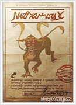
委托人:ヒムス|Hymms[神都ブルオミシェイス（神都布尔奥米赛斯） 白砂の小路|Sand-Strewn Pass]
出现区域:パラミナ大峡谷（帕拉米纳大峡谷） 氷竜の骨|Spine of the Icewyrm
路口有个水晶,记得要存盘。看似任何难度,其实濒死是会使用背水魔法,全员两万左右的伤害,别想有活口。⻛吸收,土
弱点(我们没有)其他减半,所以濒死时秒掉。奖品有个时魔的弩。攻还不错,有提升,装上。
任务做完,继续剧情。目标是大峡谷南边的遗迹。
ミリアム遗迹（米利亚姆遗迹）
这里的机关必须装备上晓之断片的成员开启,但是这个装备后MP扣光,打开后就换掉吧。这迷宫有几个好东⻄。
高風の回廊（高风回廊）
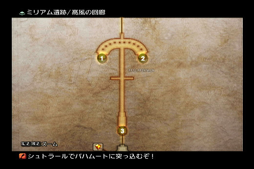
1号和2号箱子(100出现再生不能,トルマリンの指輪（电气石戒指）,冰减半,但是记得要一次在这地图2个箱子一次收走)
対面の守護（对面的守护）
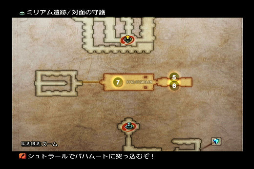
7号(时魔法,虽然实用性不高,顺带了)
遠謀の回廊（远谋回廊）
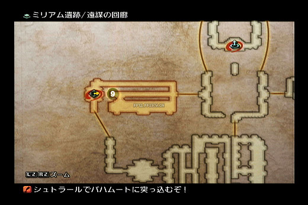
唯一一个箱子,里面是ルビーの指輪（红宝石戒指）(永久反射)
鋼鉄の守護（钢铁守护）
唯一的箱子,賢者の指輪（贤者戒指）(圣吸收,MP消费减半) 很有用的道具,一定要拿。
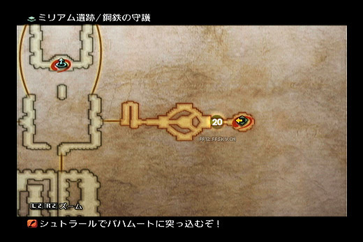
这迷宫里有个隐藏通路,里面有个⻉壳盾,不过我们只有骑士能装。之前任务有一面了。所以没必要。
过程中要注意有个绿色的水晶,别被骗了,那是怪物,打掉以后记录点出现。
尽头先调查圆盘打开传送⻔,返回大厅。这时候左侧的路开了。
解迷方面,在遠謀の回廊（远谋回廊） 条理の回廊（条理回廊） 鋼鉄の守護（钢铁守护）3个回廊里有3个雕像,让3个雕像面朝中间(迷宫地图正中间)就可以了。
方向对了石像眼睛会闪红光的。 最后一个石像有个BOSS,身上可以偷得盗贼手铐,有耐心的话最好弄到手。场地有磁场,
重装备的行动速度变慢,所以我们就别上重装的3人,全部上轻装打就可以了,反正没难度。打完后回大厅,发现新通路,
先到外面去存档下后回去,BOSS战。
收伏战:双⻥宫—背徳の皇帝マティウス（背德皇帝玛提乌斯）
雷属性弱点。没难度还是,你知道要怎么做的,黑魔要干活= =///打完后,记得分配召唤受,不要分配错。
进入内部发生剧情后就可以离开了,回神都
神都プルオミシェイス（神都布尔奥米赛斯）
Boss战:ジャッジ·ベルガ（裁判长贝尔加） 一个裁判(尚武的那个)
剧情BOSS在我们的攻略里只有被虐的份,不说了。打完后出来找神殿
⻔前的キルティア（基尔提亚）教⻓老对话,获得:断罪の魔石。然后直接用黄水晶传送到城塞去好了,那里的商店更新了。或者回王
都,接接任务也可以。虽然现在不做先接了方便,顺带找会⻓拿点报酬,看看工会商店有没东⻄更新。都搞定后出发。
モスフアオーラ山地（莫斯弗拉山地）
我们之前已经逛过一次了,没啥要拿的了。往村子的⻄北角出去,一路向上(地图的上)到达やませおろす橋（山风吹下之桥）,路边的箱子
收了,圣灵药呢。之后就到达サリカ森林（萨利卡森林）了。
サリカ树林（萨利卡树林）
(注意是树林啊,和兔子家的森林区分,以后简称别弄混了。)这个地图里也没有什么好拿的,有个劝诱技能,流程里没多
大用,如果顺路就顺手了。先去东边(整个地图的东边)遇到莫古力,对话剧情后开始找他的手下们= =/// 至于找其他的莫
古都在树林废弃木屋里,只要打开地图就可以看到他们的具体位置,很简单。最后一组莫古利会邀请你一起前往大⻔。
フオーン海岸（丰恩海岸）
先找青蛙要两个タマコ（蛙卵）(タマコ（蛙卵） ” 是指カエルのタマゴ（青蛙卵）),掉落的。南边有个村落,去那把タマコ（蛙卵）卖了,交易品里买きらびや
かな指輪,反正过去也没压力,顺带 杀杀 怪,弄点素材换钱,刷刷LP。村落里有个黄水晶和商店,店里有些新的道具,备
上一些。我们的目的地在东北的リマタラの丘（利马塔拉丘）,通过这里我们到大草原,路上也没有什么箱子好刷的。
ツイッタ大草原（奇塔大草原）
这里有3个箱子要拿,オリフザックの丘（奥利夫扎克丘）
27号(100%出现再生不能,时魔法 浮游 重要魔法)
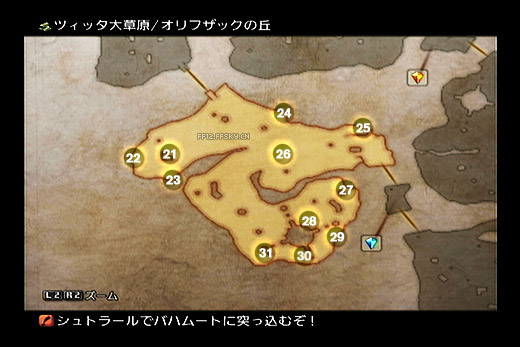
三界交わる草原（三界交会草原）
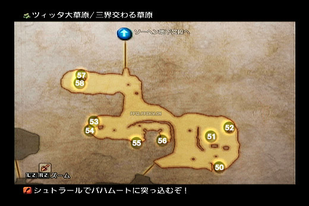
56号(100%出现再生不能,黑魔法,群体失明)
失われた街道（失落街道）
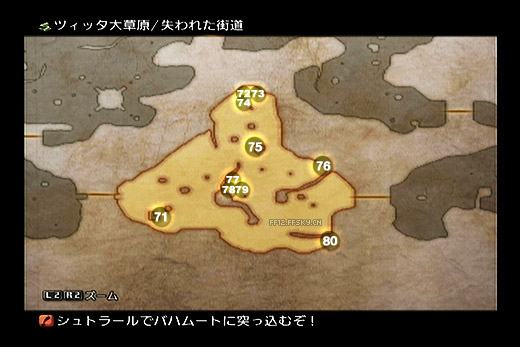
75号(100%出现再生不能,白魔法,HP徐徐回复。如果之前在雨季草原拿过这个箱子就不会再出现了。)
草原的水晶旁边有个衣装华丽的小孩,找他接个......“任务”,
然后密猎豹子,直到得到一个EXPx2的首饰,概率为1/20。(密猎的前提是目标濒死红血)
从三界交わる草原（三界交会草原）进入地下宫殿
ソーヘン地下宫殿（索亨地下宫殿）
一进入就BOSS战,5只番茄(= =),不强但跑很快,而且会异常,所以要记得及时解除不良状态。这战打得时间比较⻓,主
要是5个小家伙经常打你一下跑,然后又回来。而且会异常,记得随时解除混乱,这是最要命的。因此灌给它们几个狂战酒
(バッカスの酒（巴克斯酒）)就消停了。
这个迷宫没有啥箱子好拿,有一把忍刀樱啭,不过攻击没有影缝高,所以算了,还有一个技能针千本。
但是迷宫里有2个迷题
時の水洞（时之水洞）谜题(左图):按照如图的方式行走,每一步走对时,瀑布都会发生变化,最后可以抵达中央区域。这里有宝箱和珍
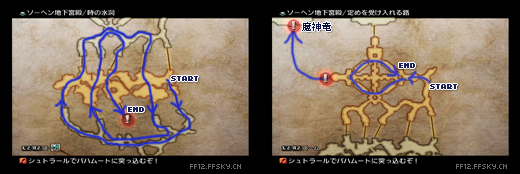
稀怪兽。
定めを受け入れる路（接受命运之路）谜题(右图):必须入手关键道具「ぼろぼろのカギ（破破烂烂的钥匙）|破破烂烂的钥匙」,然后,按照如图的方式行走,
依次打开每一扇⻔,这样右侧的封印⻔会开启!目标 敌 人:魔神龙。这个我们还打不了,3小强之一,先开着吧,以后来就
不麻烦了,不过要记住现在先不要进去,里面 敌 人很强= =///
Boss战:アーリマン（阿利曼）
难度没啥,就是瞬移和分身麻烦,黑魔上来打吧,群体的,高效点。
打完一路到电梯间(这什么形容),注意一路上陷阱比较多,可以使用时魔的浮游魔法,这样就踩不到了。坐电梯上去,有
一个黄水晶之后出去就到帝都 旧市街。
アルケイヂイス旧市街（阿尔凯迪斯旧市街）
穿越了N个地图我们终于到了= =///累死了,走到卫兵处发生剧情,然后遇到情报屋,给钱,他会叫你收集情报,到这2张地
图里找人,得到黄色字样就回去找他(情报屋)。然后再离开这个场景,再回来。如果他坐到箱子上去,那么和他对话就可
以进入帝都上层了。如果没有,就继续在这2地图里和人对话,一个个对过去,最后回去找他一般能搞定了。(这段巨麻烦,
我在这里折腾得累死了)
帝都アルケイヂイス（帝都阿尔凯迪斯）
技能屋里能买到地图,先补充下东⻄魔法啥的吧。到南边乘坐空中客⻋(众:你的专业叫法真多,法国人⺠发来恐吓信。苦
力:没办法,懒得查日文)发生剧情,交给情报屋钱,进行传话小游戏。
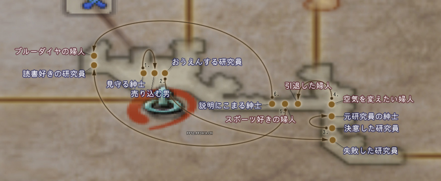
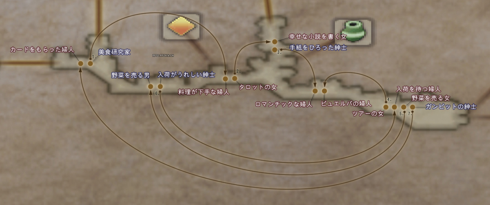
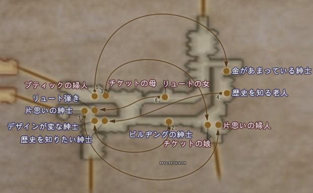
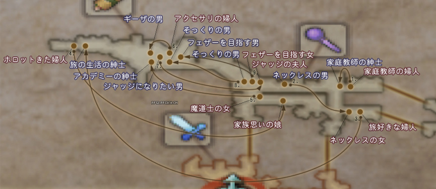
有很多,这是一个分支剧情,但剧情需要部分只要9个就可以了,做完后就可以乘坐空客了。抵达ゼノープル区（泽诺布尔区）,一直前进
出现剧情。之后再返回乘坐空客,选择例の場所（那个地方）,到达CID研究所。
ドラクロア研究所（德拉克罗亚研究所）
这里没有什么好注意的,主要是70层记录点右边路上有个100%出现的技能:钱投。记得拿!解迷方面
进入先直接坐电梯到67层,在67层地图右上发生剧情。然后可以开一些⻔,地图干扰开始,我们一路摸到电梯那,上68F。
和67差不多的,就是红蓝⻔开关,很简单,摸索一下就能过,反正一路 敌 人我们都没压力。上到70层拿完技能后记得记录,
⻢上BOSS战。
Boss战:ドクター·シド（希德博士）
场景有2个箱子,只有这一次机会先拿了再说,打BOSS先打掉旁边4个小东⻄,然后打。没压力。如果你看⻅博士顶着巨大
的鸭梨默默走向大⻔,请把脆弱的队员收回编队,因为他在耍帅要放大了 - -
港町バーフオンハイム（港町巴冯海姆）
游戏里最后的城市,注意去商店更新东⻄。台地出口那边的游商人有卖传送石头。都搞定后又是大段的自由探索,也是第2
次装备更新时机。
自由探索
我们先去把后期最美好的一个系统激活:珍惜讨伐。
先到フォーン海岸（丰恩海岸） ハンターズ·キャンプ（猎人营地）,然后在下图位置找到左上方这只
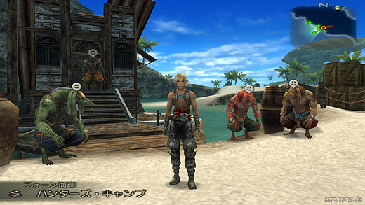
对话启动第一次讨伐(这个不算30珍惜讨伐之一),所以严格来说珍惜讨伐应该是31只,只不过这只的道具没有任何作用就
是了。
在フォーン海岸（丰恩海岸） ヴァドゥ海岸（瓦杜海岸）,尽头的高涯上等个几十秒,他就在下面出现了。
无难度,直接打死。得到エンゲージ·シェル（誓约贝壳）(以后每打死一只珍惜讨伐怪,都会得到エンゲージ·XXXX!总共30个,根据
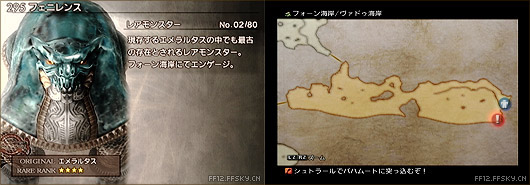
你交给海滩上那屋子下方坐的3个人的数量来获得道具装备 注:这只的这个不算在30个里,这个只是开启珍惜讨伐用的)
回到海岸,与一开始给你任务的那只说话,然后把你刚才得到的エンゲージ·シェル（誓约贝壳）随便给一个。(反正不算30个里的)然后
珍惜讨伐正式开始。
附上专题http://ff12.ffsky.cn/raremonster.html
照做便是。
http://ff12.ffsky.cn/rrlocation.html
常备这个网⻚,路上遇到珍惜讨伐最好先别妄动,因为他们身上可能会有珍稀道具,而且死后不会复生。
可以去找血剑A(片手)的材料了。
幻妖之森,从ゴルモア大森林（戈尔摩尔大森林）南部进入。
吸血の牙（吸血牙） | Vampyr Fang 需要3个,这是最难得到的,需要打这游戏里的最强蝙蝠。138号 敌 人アビス（深渊蝙蝠） | Abysteel,猎人心得
15%固定几率掉落,连锁无效(今后有说XX心得掉的,全部是固定概率,连锁不提升掉落几率),这怪对我们来说现在很困
难,我们要从幻妖之森的 影の舞う路（影舞之路） 进入蛇夫矿的 第2期坑道（第2期坑道）(只有被封死的一小段)不过这一小段路里会刷出3只最强
蝙蝠,足够你刷到了。顺带这里有一个25%出现的箱子,里面有 贤者的戒指(圣吸收,MP消费一半的)记得拿!
说打法,以我们现在的实力来说硬拼,打一只都困难。这蝙蝠的吸血连逆转魔法都扛不住,一下2000多,巨疼。带上时魔黑
魔,蝙蝠虽然强,但是HP不多而且吃状态很多,所以指令封印,睡眠,然后油状态用火烧,记得弄个炮靶,他们经常会2个
一起过来这种时候一定要注意,封指令先行。尽量一只只解决,出口就在身后实在撑不了就跑。刷3个足够了!
闇の魔晶石（暗之魔晶石） | Dark Crystal 需要15个,上面的蝙蝠会掉,估计出3个吸血牙你也得差不多了,如果不够,就在外面的幻妖之森
里的狼怪タルタロス（塔尔塔洛斯） | Tartarus会掉或者偷。建议去現 を惑わす路（迷惑现实之路） 这里刷,这里的狼怪一定几率变异成ケルベロス（刻耳柏洛斯） |
Cerberus,这个是出 狱⻔之炎(超RP品,本攻略仅有的要⻓时间刷的东⻄之一,俗称郁闷之炎),猎人心得5%掉落,要弄到
2个(如果你要向日葵的话要3个),这时候顺便刷出来,反正这里战斗压力不大,周遍就有个记录点,记得刷出2个至少。合
成正宗I用。
石材 | Solid Stone 需要2个,很多 敌 人掉,地下道的ライジングビスト（升腾兽） | Suriander 猎人心得30%掉(大蛤蟆) 王墓的ラゴウ（拉戈） |
Ragoh (灯怪)等等,不多说了。
打到这些后卖商店,交易品 赤黒い剣（赤黑之剑）。血剑A给骑士装上,郁闷之炎也要刷到但别卖,以后再卖(2个,要向日葵3个,建议
新人不要捣腾向日葵)
现在接着去泽尔提南洞窟找 摩羯召唤受
找他的原因也是为了后面弄逆转首饰和死都更舒服一点,首先我们先到ガリフの地ジャハラ（加里夫之地加哈拉）,然后出来到平原,之前我们有
说过在 大地のらせん（大地螺旋） 中间进入地下洞窟。里面我们主要能遇到一种 敌 人,⻢怪。还有龟(这个不是必须经过路线,可以避
开),⻢会瞬移,一些异常,不过我方现在实力应该不能对付。注意入口有很多陷阱,记得用时魔的浮游。过了这些陷阱后
前面有好几只⻢,贴边一只只(最多2只)引过来 杀 掉,不要冲上去,不然会被围攻到GAME OVER。一路向前路过 海の止
まり 到达アスローザ大流砂（阿斯罗扎大流沙）,CG,先别管它往东北的出口逃,(千万别走错了,走到正北那个出口要有去无回的)逃出去
右拐,因为里面有个存盘点。存盘后贴着水晶后面的峭壁往深处走,可以发现流沙后面的一条隐藏道路,墙角有个宝箱:

25号宝箱,25%几率出现,盗贼手套一个。回来存盘准备战摩羯。
收伏战:摩蝎宫—憤怒の霊帝アドラメレク（愤怒灵帝亚德拉梅列克）
这是我们第一次收非剧情召唤受,明显强过剧情召唤受许多。不过这战有个麻烦的地方,有在 杂 兵干扰,僵尸,能刷出好几
十只,具体没点过,反正能 杀 光,所以我们的目的就是先 杀 光这些 杂 并,本战还有一个特点,就是可以逃跑(切换到上个场
景),都知道1AC怪物是不会刷新的,召唤受在入口不 远 的地方。但是还有一段距离,我们就可以利用这个距离把僵尸都 杀
光。站原地等僵尸来送死,僵尸会掉落有我们需要的素材,所以掉的东⻄要捡。如果被召唤受发现了,就⻢上1AC回去,这
样召唤受会刷新而僵尸不会,通过反复这样的方法可以把僵尸 杀 光。
说说召唤受,这家伙没有无视回避(猎人笑了)攻击多数为雷属性(ダイヤの腕輪（钻石腕轮）亮了),而且冰弱点,HP 4W不到,但属
于⻜行 敌 人,所以武士 骑士 猎人就不要想打到了。
综上,我们上猎人 枪骑 黑魔。枪骑对自己用狂战酒随时狂战状态对空猛撸= =////说错了,是对空猛戳~~~~~ 黑魔负责使用冰
魔法(别告诉我没有,至少有中级的吧= =///)和给猎人加火力吸引(デコイ（诱饵）),猎人装回避匕首マインゴーシュ（曼因戈什匕首）,然后装个
回避高点的盾。此时猎人应该有2级以上的药知识了,如果有3,就直接装ダイヤの腕輪（钻石腕轮）,雷无效。然后用高级回复药给其他
人回复(港镇有卖)。GAMBIT自己要设置好。异常了及时恢复,必 杀 啥的也用上。其实不用猎人用时魔也可以,用魔法回
复,顺带偶尔还能打2下,反正我是用猎人的。由于战斗可以逃而这只召唤受身上有 大アルカナ（大奥秘） 想合向日葵的可以1AC来偷
3个,后面任务也能弄到几个。不想合的别折腾。
打过后给时魔搭桥,可以学到Cura和Life。没有摩羯干扰,安心刷僵尸,得到3个血染めの首飾り（血染项链）,当然先确认一下有没有
买魔剑士心得,没有的话只能以后再说了。
逆转首饰:ニホパラオア（逆转饰品） | Nihopalaoa
虽然咱还没出去,但是正好有一种素材是在这里刷,所以我就从这里开始说。
血染めの首飾り（血染项链）|Blood-Stained Necklace 需要3个。你没看错,就是前打召唤受场景的僵尸コープス（尸骸） | Shambling Corpse 魔剑士
心得15%掉,一般我们身上可能有1、2个,不够再去刷几个吧。刷完就可以出洞了。
レオ（狮子座圣石）|Leo Gem 需要3个。这个可以偷37号珍惜怪マイス（迈斯）,这只也是珍惜讨伐,其实并不只有他掉,但是找他偷最容易。

出现地点:ミリアム遺跡（米利亚姆遗迹） 対面の守護（对面的守护） | Stilshrine of Miriam Ward of Velitation
出现条件: 杀 死本区域的3只跳舞 杂 兵龙,离开后再进入时珍稀怪出现。
装上盗贼的手铐,然后偷就是了。偷完了1AC继续。偷满干掉,解决一个珍惜讨伐。
地图!
シャレコウベ（骷髅头）|Death's-Head 需要2个。珍惜怪物69号グレイブロード（墓穴领主） | Grave Lord
出现地点:ゴルモア大森林（戈尔摩尔大森林） 葉ずれのしみる路（叶声沁入之路） | Golmore Jungle The Rustling Chapel
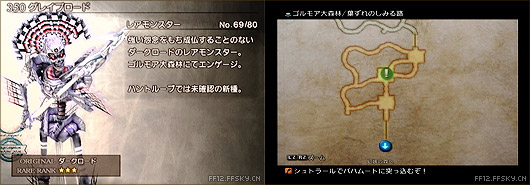
出现条件:【Chain】表示数22以上时出现。只要把该区域的活物清理干净就会没完没了地爬骷髅,很容易就22了。这只是普
通珍惜怪,偷够了闪人就好, 杀 起来也没难度
都偷到后,到商店卖了这些素材,买交易品呪われた首飾り（被诅咒的项链）,获得逆转首饰(使用道具效果逆转) 你问啥用?你让一个万
能药知识2级以上的人装上这个喂 敌 人一个万能药试试
图(自截朝 敌 人使用逆转万能药)
华丽的一排状态~~~~~~~~~~~~~XD
好了,这个得到了,我们去补充点药品,然后向下一个目的地,死都进发。
进军ナブレウス湿原（纳布雷乌斯湿原）---死都ナブディス（死都纳布迪斯）
我们先通过传送水晶到サリカ樹林（萨利卡树林）的いやしの響く路（疗愈回响之路）,旁边的道已经开启进去,直接BOSS战,一个大火球= =/// 给我们的猎
人装上逆转首饰,丢火球一发,然后开始战斗,没有难度。我们之所以拿了逆转首饰再来打是因为这家伙HP降到一定数值
后会用回复的招,很麻烦,所以拿了再打,给他加一堆的状态,他回HP不能,轻松解决。
接下来看你们决定直接进死都还是从湿原到死都了,因为2个地方都有要刷的东⻄,湿原很少,不过湿原有个黄水晶,而死
都里没有记录点。
如果先去湿原的,就从树林北边的 白きまだらの路（白斑之路） 通过,湿原如果也在这场景北边;如果要直接进死都,那就从树林的 年
齢を重ねる路 进入,在⻄南方向。我个人是从湿原进去的。
这次刷装备是本攻略比较艰难的一次,因为我们的实力在这个隐藏地点刷武器比较险峻, 敌 人1到2只无问题,但这里 敌 人很
多喜欢扎堆(死都)也是,被围攻就很容易死,千万要小心万万小心
ナブレウス湿原（纳布雷乌斯湿原）-
湿原我们要拿的箱子如下

22号(75%出现 25%开出マディーンの衣（马丁之衣）,魔装上衣)
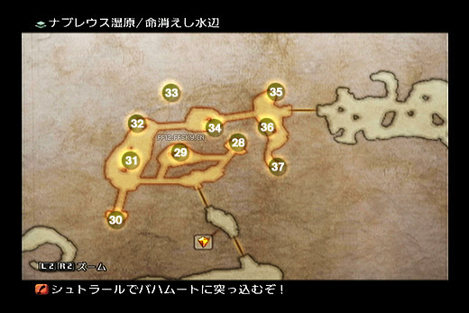
33号(100%出现再生不能,デジョン（异次元）魔法,时)
37号(25%出现 100%开出オパールの指輪（蛋白石戒指）,魔法穿透反射)

41号(100%出现クロススケール（十字量尺）,计算尺)
42号(75%出现,20%开出バレルコート（枪管外套）,轻装上衣)
分析下湿原的 敌 人,我们好前进。(建议全程浮游)
バクナムス族（巴克纳姆斯族） | Baknamus Race,亚人,很烦,最烦的就他们,高回避高伤害还有一堆恶心技能,而且数量非常之多,扎
堆还隐身扎堆!一会死都里还有更多多到你吐。吃禁足、睡眠。没有很好的办法,禁足后用 远 程毙掉。注意,现在的实力很
容易被对方全灭,一定要小心。
バンシー（女妖） | Banshee,僵尸,禁足,比起亚人来说容易多了,单个出没。轻松解决。而且不多,一路过去的路线。
ルタンイーター（陆龟） | Emeralditan(龟)一般一只出没,不多,3人围攻。很快搞定
ワイアード（莱尼尔马） | Leynir(⻢),在黄水晶记录点后面一个场景,命消えし水辺 出现,一般为1只或2只一起,异常不怎么吃,所
以只好硬砍,战斗力比较高,一定要注意,最好别去招惹。
在 滅びし王家の広場 场景,而已就是和死都连接的场景,还有果冻和其他一些怪出没,不过分布比较稀散,地图也比较宽
广,所以一路逃进死都就可以, 敌 人不用管。
死都ナブディス（死都纳布迪斯）
我们从湿原进入的话,一开始就是死都的 力宿る回廊（力量寄宿回廊） 这个场景,死都陷阱极多,全程悬浮(入口就有一片陷阱阵,就在你
脚下)。提前说清这是个非常非常恶心的地方,请准备好两到三个小时和一⻋耐心。
死都比较特别,里面没有记录点,所以证明一旦全灭之前的白刷,还有其他状况,所以我们先来看 敌 人分布和特殊情况,分
析完 敌 人后我们再写我们需要刷的东⻄分布区域位置。
死都可以分成5个地区,以下是从湿原入口一路到树林入口的地图顺序,走完等于把整个迷宫走一遍了。我们把他 敌 人出现
条件分成3个部分(地名前面的1 2 3代表出现 敌 人为一样的,如1 力宿る回廊（力量寄宿回廊）与1光満ちる回廊（光满回廊）出现 敌 人一样)
1力宿る回廊（力量寄宿回廊）
2白き約束の回廊（白色约定回廊）
3気高き者たちの間（高贵者之间）
2美しき調べの間（美丽旋律之间）
1光満ちる回廊（光满回廊）
这3个区域 敌 人分布类型不同,下面 敌 人分析我会详细说。
区域1、2区主要出现 敌 人:
バクナムス族（巴克纳姆斯族） | Baknamus Race ,亚人,这里的亚人比外面的亚人更恶心,会隐身。隐身后你能听到脚步声,但是开菜单
锁定 敌 人的时候不能锁定。经常出现的情况是,你看⻅前面有个没隐身的亚人,你跑过去准备打他的时候,突然身边闪出一
大堆亚人。这种情况很危险,所以一定要保证自己处于满HP状态。
亚人吃封足,这算是比较有效率的一个异常了,虽然停止也可以。但是一次只能一只,亚人数量多。所以封足+睡眠,武士
的无作为魔+时魔ドレイン（吸血）+黑魔法杖强化魔法轰 杀 至渣。
エルヴィオレ（艾尔维奥雷） | Elvoret ,俗称 恶魔(小恶魔?),吃停止状态,但是注意シェール（护壳）状态会给他们挡掉一半的异常命中。一
般1~3只一起出现。一旦被停止没有威胁,在1区域的结尾部分出现比较多。外加这家伙会1%几率掉次强重装身(NO.2
强),不要特地刷,一般RP不是特别糟糕的,死都收集完箱子也就能出1件了。没出也不要特地刷。后期合成1件(另一件另
外有个地方捡)也不是很困难。
这2种 敌 人为1、2区主要 敌 人,1区域,一般是前半段都是亚人(靠近入口的部分)后半部分开始有恶魔,而2区域入口(与1
区域相接的地方)有一些亚人但走到后面多为恶魔(小恶魔?)
3区主要 敌 人
エルヴィオレ（艾尔维奥雷） | Elvoret ,恶魔,同上,不说了。
ウォーロック（僵尸术士） | Zombie Warlock ,蓝色衣服僵尸,就在这个区域出现其他区域都不会出现,魔法主攻,而且够强,吃的状
态不多,不过吃沉默,让这个魔法强力的 敌 人吃了沉默,基本威胁小了,只有1只单独出现(从地下突然钻出来,如果你有
剩下恶魔没清理掉他就和恶魔混一起) 此怪掉中概率掉落 邪神の肉（邪神之肉） | Forbidden Flesh 收集7个,用来合成11级轻装(不是为
了要他的防而是要这衣服的雷无效) 不必⻢上当场刷,建议等死都装备都刷到后出去记录完,回来补足就好
バブイル（巴比尔） | Babil ,守卫,虽然是主动攻击怪,但在路上都可以回避的了,而且他们也要靠比较近才会攻击你,没必要浪费
时间,走吧。
现在说下特殊 敌 人死神オーバーソウル（超灵） | Oversoul ,每次进入死都后,只会出现6次(出死都后重新计算)首先在死都内打
倒20只 敌 人后,死神第一次出现;干掉后继续 杀 怪,打倒怪兽数15→10→5→3→1规律加速出现(不包括死神自己)。
死神不难打,但是,6次后(总共 杀54只怪),会刷出稀有怪ヘルヴィネック（赫尔维内克） | Helvinek ,幽灵⻢,很漂亮的一只稀有怪,
如果我们把这里的装备都刷到了穿上,打过他没问题,但是通常他会在我们没有全部刷到的时候出现(如果你一直刷,一直
杀 的话),所以尽量在死神出现3~4次以后出死都一趟再回来刷。
现在我们说死都要刷的装备。很多,一路艰辛,作好准备,刷的数量自己看着办,能1轻2 魔3重最好,不行至少也要1轻1 魔
2重比较合适。(单位:套= =///) 下面有刷的2个轻装(身和头各一个),其实不一定必要,因为过了这里我们直接可以合
出更好的,所以不刷也行。
力宿る回廊（力量寄宿回廊）
4号(30%出现,30%是钱,是道具时50%是力だすき（力量束带） 轻装 防41 HP+400 力+2)
6号(100%出现再生不能 ヒスイのカラー（翡翠项圈） 回避首饰)
白き約束の回廊（白色约定回廊）
8号(30%出现 30%钱 道具时50% 巨人の兜（巨人头盔） 重头,魔防38 HP+150)
9号(同上,オリハルコン（奥利哈刚）匕首 79攻 减速)
12号(100% 再生不能,フェイス（信仰） 信仰魔法 白魔 骑士后面能用,加魔攻)
気高き者たちの間（高贵者之间）
18号(30%出现 30%钱 道具时50% キャラビニエール（卡拉比尼铠）,重装 防58 力+2 魔+2)
19号(同上,碧玉のガウン（碧玉长袍）魔装衣 防44 魔力+8 MP+53,因为湿原有41防的,可以只拿一件)
20号(100%出现再生不能,黒のローブ（黑之长袍）,魔装衣 防56 魔+12 MP+66 魔防+5 暗增强)
26号(100%出现再生不能,ブレイブ（勇气）,勇气魔法,骑士后面能用,加物攻)
这个场景!处是亚人商店,里面装备会随游戏更新,很多子弹这里也有卖(慢慢追加)记得以后有需要回来这里看看
~~~~~~~~~~
美しき調べの間（美丽旋律之间）
27号(30%出现 30%钱 道具时50% 邪迎八景（邪迎八景） 双手刀 83攻 回避27 猛毒 连击20)
35号(100%出现再生不能 白の仮面（白之假面） 魔防56 魔+8 圣吸收 MP+81)
光満ちる回廊（光满回廊）

40号(100%出现再生不能 サイレガ（群体沉默） 黑 群体沉默)
41号(25%出现,一定开出エルメスのくつ（赫尔墨斯之靴） 首饰 装备后自动加速状态,给骑士用不错)
43号(30%出现,30%钱,道具时50% チャクラバンド（查克拉头带）,轻装头 37防 HP+390 力+2)这个不要也无所谓,我们⻢上就有更强
的了
全部刷完了,我们就离开吧,那只稀有想打打也可以,从它身上可以弄到最强装,不过几率太低,没必要,而且它也不是珍
惜讨伐。
之前我们上面说过,刷蓝衣僵尸出7个邪神肉,现在可以回去刷,刷到后,11级轻装(头和身)就来了
高級毛皮（高级毛皮）|Prime Pelt 需要9个,幻妖之森的狼掉,之前刷郁闷之炎的时候一般肯定够了。
火の魔晶石|Fire Crystal 需要8个,很多怪都掉,幻妖的火狼也掉,肯定够了一般。
邪神の肉（邪神之肉）|Forbidden Flesh 需要7个,死都蓝衣僵尸掉,上面说了。
齐备了后,卖商店,交易品 植物製の防具（植物制防具） | Nature's Armory 入手。11级轻装头和身。
死都和湿原的任务完成,依旧回港镇补充药品,卖一些素材换钱(如果没钱的话),我们先会趟王都,接下任务,虽然现在
就可以开始天空矿刷东⻄,但是刚刷完又刷不免让人觉得累,而且我们一会又要一起大把的做任务。这样的连续工作让人
累,所以我们不妨现在先做几个简单的任务后再进天空矿,调剂一下~~~~~~~~~~~
手配書（讨伐令） No.13 - 追いかけっこは森の中（森林中的追逐） | A Chase Through the Woods
委托人:ネフィーリア|Nera [エルトの里（埃尔特之里） 精霊の住む大樹|The Spirit Wood]
出现区域:ゴルモア大森林（戈尔摩尔大森林） 葉ずれのしみる路（叶声沁入之路）|The Rustling Chapel
注意这怪并不强但很能跑,一跑就全恢复,所以看⻅它就一个狂战酒扔过去,虐 杀 小红兔......哎......
手配書（讨伐令） No.16 - 地の巨人、怒りの大暴走（大地巨人的愤怒暴走）!| Trouble in the Hills
委托人:ブロッホ|Burrogh[ナルビナ城塞（纳尔比纳城塞） ジャジム·バザー（加吉姆集市）|Jajim Bazaar]
出现区域:モスフォーラ山地（莫斯弗拉山地） 北の山すそ（北方山脚）|Northern Skirt
一切都是一样,逆转万能药然后虐,没难度。
緊急討伐（紧急讨伐）No.4 - 復活、封印されし楽園（复活，被封印的乐园）! | Paradise Risen

此任务一定要雨季,草原天气1小时雨季2小时旱季轮转(现实时间)。
委托人:ナナウ|Nanau[雨季限定 ギーザ草原（基萨草原） 幼き水晶のほとり|Crystal Glade]
出现条件:我们得先去下图所标的地方砍树。6处
然后去记录点东部地图经过枯木铺成的桥,进入隐藏地点“巨獣の足跡（巨兽足迹）”;会有NPC接应共同战斗。记得必须是暴雨天,才会
出现,如果不是,1AC弄到是为止。
BOSS血多,但其实不太难打,还有个NPC帮你,其实战斗就是耗时间,多准备点药就是了。一开始扔个逆转万能药,BOSS
吃一些状态其中就有禁足,沉没和失明而且雷弱,但是注意它的“活性”技能会解除所有异常。这样的话这么大的地图,万
一打不过,后退一点回复下再过来,没有威胁。打完这地图最里面取得一个隐藏道具,完成以后的分支事件。记得完成后回
去会得到一纸条,但是任务并没有结束,要等旱季后回去委托人那地方,才能结束任务如果你不想多费时间(我是因为正好
路过看到雨天就这时候打的),那可以等去完天空矿以后再打。
任务告一段落了,我们现在要去天空的矿洞里,⻅⻅某专用假货的哥们,顺带刷一些次强装备。说是刷,其实大部分都是
100%出现,不再生的箱子。出发~~~~~~~~
我们先接个任务(Q:你不是说任务已经告了一段落了? A:没办法,不做这任务进不去= =///) A级紧急讨伐,不用怕,不
难!
緊急討伐（紧急讨伐）No.6 - 異常發生アントリアオン（异常发生，蚁狮现身）! | Antlion Infestation
委托人:ニレイ|Niray[空中都市 ビュエルバ スタイラス邸|Staras Residence]
出现区域:ルース魔石鉱（鲁斯魔石矿） 第9鉱区採掘場（第9矿区采掘场）|Site 9
从委托人那接到任务后可以得到第3采矿区钥匙,这样我们就可以进入原来不能进入的部分了,路上也有一些要刷的箱子,
不过我们暂时先不管,如果你能顺手拿也可以,箱子我们下面统一说。去魔石矿,从北部开⻔,绕路到⻄面,路很⻓,等于
要走到这个迷宫的最北边进入第3采矿区,然后在从第3采矿区的另一个口出来一路下来到最⻄边的第9采矿区和最深处和
BOSS交战。(中途有个水晶,而且回去那边的⻔也可以打开,方便多了回去)
这螳螂怪有一堆的小弟,但是他和小弟(小螳螂)都是⻛弱点,范围高级⻛魔法猛砸,一会就取胜了,没难度。小心满地的
陷阱便是。
走了这么 远 的路建议把这2个区里的箱子刷了,反正都是100%出现。顺手拿(这里路上 敌 人都很好对付,至于第9采矿区的
敌 人在下面打完某6手的第一战后有详细说明)
以下为做任务顺手可以刷到的装备。
第3鉱区採掘場(全部为100%出现再生不能)
24号(100%出现再生不能,マルチスケール（多变量量尺） 这个不拿也可以,计算尺,机工用的)
29号(同上,甲賀忍刀,攻击数值同伊贺,但是它是土属性,游戏里为数不多的土属性攻击手段之一,却也是基本用不上的
东⻄)
30号(同上,アスピーテ（阿斯皮特）,炸弹,可以不拿,拿了也是卖钱)
第9鉱区採掘場（第9矿区采掘场）(全部为100%出现再生不能)
32号(100%出现,再生不能,インディゴ藍（靛蓝）,魔法100%命中,时魔的菜。
35号(同上,伊賀忍刀,水属性忍刀,攻87,黑魔只能买到初级水,后期可以买水流子弹自己取舍)
37号(同上,技能,防御破坏,这个还用说么?)
任务中会得到11区钥匙丢失情报,这是我们要的,能进入更深处,交完任务后我们去海岸那个集落,在下图所示位置,那两
个人的左手边得到11区钥匙(地上会闪光)
要是得到后我们可以开始刷次强装备了,当然我们还要再接个任务(众:你有完没完) H级紧急讨伐任务
挺进ルース魔石鉱（鲁斯魔石矿）
緊急討伐（紧急讨伐）No.8 - ビッグブリッヂの死闘（大桥死斗） | Battle on the Big Bridge
对这就是FF系列老面孔,基尔加美什,委托人就是工会会⻓。可以偷到源氏装备一整套,一会刷装备的时候我会说怎么和
他交手。这里先接。
直接传送到矿里的黄水晶,之后就可以直接向⻄通向刷东⻄的地方。记得要么装侦测首饰要么浮游,陷阱多。先不要离开水
晶场景向⻄,因为一向⻄⻢上就开始与基尔加美什第一战。先准备,药品啥的肯定要够,还有万能药。
BOSS战ギルガメッシュ（吉尔伽美什）+エンキドゥ（恩奇都）(6手+狗)
在一个搞笑的登场动画以后(⻜过来?跳过来,然后撞到桥掉下去了= =///)
第一次与他战斗并不难,GAMBIT设置,这个不用说,注意回复,我们主力攻击的是6手,所以GAMBIT里设置为针对HP
MAX最高的 敌 人攻击。他的狗嘛,一会会说。
基本战术为战斗开始对エンキドゥ（恩奇都）(狗)扔一个逆转万能药。狗会中很多状态,其中就包括睡眠。每当狗解除掉睡眠状态
时,⻢上再补给它一个逆转万能药。这样狗的威胁很低,而且因为异常状态里有慢慢扣HP的,所以嘛~~~~~~
至于6手,没得说自然是主攻,黑魔可以上,用油+大火,配合烧火棍(火仗)狗其实不一会就被烧死了。单独的6手在第一
战里实力有限,这时候自然不会对我们造成多少威胁。HP也只有12W多。接下来说重要的。
与6手的第一战里可以偷到2件源氏装备(盾和小手)
BOSS的每个HP阶段都可以偷得一样东⻄,阶段切换的标志是BOSS过场pose。40%~20%时偷盗(记得带上盗贼手铐),低概
率必定偷到盾(注意别低过了,低过了就偷不到了)
BOSS的HP剩下20%以下时偷盗,低概率必定偷到小手, 杀 死就没了
建议GAMBIE里设置一个 敌 人HP<30%和HP〈10%(因为GAMBIE里没有40%和20%的)偷盗,这样到那个数就会自动开始偷
盗,一旦那个HP段的偷到了,就开GAMBIE菜单关掉这条就可以了。
打完记得回头一下存档。
分析下深处的 敌 人,基本为4类
ヴァンパイア（吸血蝙蝠） | Vampyr,蝙蝠。吃很多异常,包括指令封印,不过这种蝙蝠实在没有啥威力,即使2只出现我方也不会全灭
(回复GAMBIE设置合理),后面几个场景还会出现我们之前刷吸血牙的最强蝙蝠,注意不要被围攻,也是吃封指令。你们
知道该怎么做。
キラーマンティス（杀手螳螂） | Killer Mantis,螳螂,之前讨伐任务BOSS旁边的跟班,⻛属性魔法轰 杀 之,没啥好说的。(这里我们可以
得到一把⻛匕首了,更方便,我们一会说)
ダークロード（黑暗领主） | Dark Lord,骷髅,吃禁足,主要不要被围攻,不难解决。骷髅会放魔法,禁足后一样能放,注意一下
还有一种在桥场景出现的⻜龙,建议54它离开,就2只,如果一定要打,请用雷魔法(他们雷弱点),但要小心他们,他们还
是能轻松秒 杀 我方的。
在最后2张地图里,会出现一种蓝衣服的僵尸法师混在骷髅堆里,他是骷髅一定几率变化的。是一个珍惜讨伐,也是传说中
的最强珍惜怪,实力搞过大部分BOSS。所以最后2个场景刷装备时,一定要注意观察四周,一发现他⻢上饶道走或者1AC刷
没掉它,不要找死的冲上去试试,以现在的能力,如果HP没满的话它只要一个群体高级魔法就让你团灭。而且追踪能力很
好,会一直跟到你离开这个版面为止。切记!!!(以后我们有机会 杀 他,但现在不是时候)
现在我们讲解要刷的装备。
第11鉱区採掘場
40号(90%出现再生不能,おろち（大蛇）,大蛇94攻 忍刀)
42号(100%出现再生不能,ゾーリンシェイプ（佐林匕首）,87攻,⻛属性匕首)
43号(同上,黄金のスカラー（黄金头冠）, 魔头,魔防58 魔力+10 速度+3 MP+107)
44号(同上,リジェネモリオン（再生轻盔）,轻装头,魔防52,HP+370,活力+4,徐徐回复状态)
ラッシェ橋（拉谢桥）
这版面也就一条路,一个箱子100%出现再生不能,在一堆陷阱里面,记得浮游去那
枪,竜の髭（龙须）,攻击100,封印。这个场景也是出2只⻜龙的场景,建议54他们。
第5鉱区採掘場
55号(100%出现再生不能,光のスティフォス（光之衣）,魔衣 防59 魔力+12 活力+10 MP+120)
58号(同上,アルクトゥルス（大角星铳）,铳,攻击45,猎人搭桥后可装备)
第6鉱区南採掘場
59号(100%出现再生不能,魔力のシシャーク（魔力头盔） 重装头,防47 力+11 魔+5 时魔用不错)
63号(25%出现,再生不能,ゲルミナスブーツ（格尔米纳斯靴）,防御止步状态,活力+20,速度+50 猎人装备后匕首、忍刀伤害大为改
观)
第6鉱区北採掘場
64号(100%出现再生不能,重身,マクシミリアン（马克西米利安铠）,防64,力+9,魔法防御+1,速度+6 次强凯,如果你死都RP不差,算上
这套应该有2、3件了)
65号(同上,鯨の髭（鲸须）,棍,攻108,如果有选武僧用)
如果不知道这个区域怎么进,请看下图
作業準備区
只有一个蓝水晶,旁边有一个魔法,100%出现再生不能,最强无属性范围黑魔法コラプス（崩坏）
记录一下,离开,再深入就是第2战6手,没逆转魔法不好打,我们现在就出去做任务,然后才可以买到逆转魔法,再回来找
他。路上还是注意不要碰上最强珍惜怪和陷阱。
讨伐旅程(大量工会讨伐任务)
之前我们把C级以前的任务全部做完了,现在我们有大批的任务要做,从B级到S级的任务(S级有4个任务目前不能做 A级有
1个不能做),这样总任务完成数才能到达32个,工会等级到达11级才能买到神之 逆转魔法。废话不多说,开始吧!
先是B级任务B级里没有紧急讨伐,总共只有3个通常讨伐任务。
手配書（讨伐令） No.14 - 邪悪な亜人、魔石鉱で何を想う（邪恶亚人在魔石矿想什么） | The Mine Flayer
委托人:戦士グロム|Warrior Guromu [ガリフの地ジャハラ（加里夫之地加哈拉） やすらぎの大地（安宁大地）|Lull of the land]
出现区域:ヘネ魔石鉱（海尼魔石矿） 第1期採掘現場（第1期采掘现场）|Phase 1 Dig。需要我方3人MP数值合计为最大MP的90%以上才会在地图南部出现。
建议54杂 兵一路,反正现在的装备 杂 兵打我们没感觉。到地方看到他出现,就上去送个逆转万能药,灭了他,记得他HP在
20%以下时会经常恢复,不过这对现在的我们不是问题。
这任务关系到后面这矿里的隐藏区域,所以一定要做。
手配書（讨伐令） No.18 - 制御不能!?決死のロデオ（失控！？决死的骑乘）!| Rodeo to the Death
委托人:ヴァカンサ|Va'Kansa[モスフォーラ山地（莫斯弗拉山地） 水音の伝わる処（水声传来处）|Gate Crystal Area]
出现区域:サリカ森林（萨利卡森林） 年輪を重ねる路（年轮之路）(死都⻔口附近)|Corridor of Ages
没难度,硬上吧。
手配書（讨伐令） No.19 - 地下宮殿の巨大⻲（地下宫殿的巨龟） | Shelled Obstruction
委托人:ふるさとに帰りたい男|Homesick Man[帝都ヴェント武器/防具店|Vint's Armaments]
出现区域:ソーヘン地下宮殿（索亨地下宫殿） 誘惑を振りほどく路（摆脱诱惑之路）|Temptation Eluded
也是无难度,逆转万能药后 杀 之~~~~~~~~~~~~
以上,B级任务结束。接着我们开始A级任务。
手配書（讨伐令） No.5 - 落としものにはモブがつく（失物引来讨伐怪） | Lost in the Pudding
委托人:王都ソルベ(传送莫古里)[ラバナスタ ⻄門|Eastgate]
出现区域:ガラムサイズ水路（加蓝塞斯水路） ⻄部水量調整区|West Sluice Control
逆转万能药,然后烧 杀 。
手配書（讨伐令） No.8 - ピリリと苦い毒蛇の酒（辛辣苦涩的毒蛇酒） | A Tingling Toast
委托人:王都マスター|Tavernmaster[砂海亭|The Sandsea]
出现区域:ゼルチニアン洞窟（泽尔提南洞窟） 异端诱う岩窟|Invitation to Heresy
这个怪所在区域要从⻄沙漠入口进入,在这里闲逛5分钟,然后在有阳光照进来那个仙人柱后边它就出现了。突然间窜出一
条大蛇,吓人。没难度,老规矩打法。
手配書（讨伐令） No.15 - 脱走者はかたき討ちを望む（逃亡者渴望复仇） | The Deserter's Revenge
委托人:囚人381号|No.381[東ダルマスカネブラ河沿いの集落南側|South Bank Village]
出现区域:バルハイム地下道（巴尔海姆地下道） ⻄部新坑道区|West Annex
这BOSS HP到50%以下会使用吸血进行回复,所以上个狂战的加速砍吧。
手配書（讨伐令） No.20 - 取られた荷物を取り返せ（夺回被抢的行李）! | Get My Stuff Back!
委托人:旅のヴィエラ|Viera Wayfarer[白波亭|The Whitecap]
出现区域:セロゼ台地（塞罗比台地） 北部段丘（北部段丘）|The Northsward
委托人会加入帮助我们战斗,这 敌 人不强,但是HP少于50%时爱跑,并且回复HP,老样子,追 杀 之。任务之后我们会得到
竜のうろこ（龙鳞）|Dragon Scale(龙之鳞)这个是之后打魔神龙的重要道具。
手配書（讨伐令） No.21 - サビた伝説、ほころびた封印（生锈的传说、破损的封印） | Old Legends, Decaying Bonds
委托人:フルモン|Fermon [アルケイディス旧市接 むかい風の路地（逆风小巷）|Old Archades, Alley of Muted Sighs]
出现区域:ツイッタ大草原（奇塔大草原） 終焉と旅立ちの庭（终焉与启程之庭）|Garden of Life's Circle
注意必须整个草原是阴雨天气的时候才可以,刷天气就需要大地图切换了。所以任务可以先接,偶尔来这里看看是不是阴雨
天,如果整个草原是阴雨天气,那么到終焉と旅立ちの庭（终焉与启程之庭）的时候又必须是阴天,不能下雨,BOSS才会登场。没难度,老办
法睡住魔法狂轰。
緊急討伐（紧急讨伐）No.3 - 罪は許してモブは許さず（罪可饶恕，讨伐怪不可饶）! | Crime and Punishment
委托人:どろぼうシーク|Contrite Thief [ラバナスタのダウンタウン（地下城区）北部|North Sprawl]
出现区域:ガラムサイズ水路（加蓝塞斯水路） 南部取水廊（南部取水廊）|Southern Sluiceway
这怪好色= =///(怪物还对人类女人有意思= =?),所以必须队伍中除了NPC以外全是女性才出现。而且它多数攻击是异常攻
击,猛毒+混乱,不过Sleep后0压力。
緊急討伐（紧急讨伐）No.5 - バラミナをかけ抜ける一陣の光（穿越帕拉米纳的一道光） | Paramina Run
委托人:チョコボ（陆行鸟）屋ガーディ|Gurdy [神都ブルオミシェイス（神都布尔奥米赛斯） 白砂の小路|Sand-Strewn Pass]
出现区域:パラミナ大峡谷（帕拉米纳大峡谷） 氷結するせせらぎ（冰结溪流）|Frozen Brook
注意遇到这BOSS的几率是30%,进入区域后,NPC加入,如果BOSS出现了他会提醒,注意看NPC的话,会有不同。这只
BOSS弱点会变化所以不能用属性武器或者魔法,他还会用陨石。BOSS HP剩不多的时候会无 敌 ,因此在30%时谋 杀NPC然
后Sleep之,否则无 敌 大陨石还是很让人抓狂的。另带一句,如果打不过逃跑了回来就找不到它的,请存盘后重启读档再回
来。
緊急討伐（紧急讨伐）No.9 - 黒いウワサ（黑色传闻） | A Dark Rumor(必须做掉上面那个任务才能接)

委托人公会会⻓:モンブラン（蒙布朗）|Montblanc[公会本部]
出现区域:大砂海ナム·エンサ 風化する岸辺|Nam-Yensa Sandsea, Withering Shores
这是个诱捕小巴的圈套任务!敌 人所在的位置就是我们去沙海的一个需要穿过一段地下洞窟到达的场景里。 敌 人就是天空矿
剧情追我们那4个。他们的头领HP比较多有11W,其他3个都是3W不到。バッガモナン（巴加莫南）水弱点, 3位同伙挂掉后用圣属性技
シャイニングレイ（闪耀光线）。不过也不难,一人一个逆转万能药,虐之。
现阶段的A级任务做完了,还有一个必须要到后面才能做,做完有黑暗子弹。接着我们进入S级任务。
手配書（讨伐令） No.17 - 怒りのコブシは霧をはらすか（愤怒之拳能否驱散迷雾） | Adding Insult to Injury
委托人:モルガン|Morgen[ナルビナ城塞（纳尔比纳城塞）市街地 外郭⻄広場|West Ward]
出现区域:ナブレウス湿原（纳布雷乌斯湿原） 永遠を見下ろす高台（俯瞰永远的高台）|Overlongking Eternity
需要通过隐藏区域到达
图(找师傅要)
这BOSS实力其实平平,但是场景会一直刷骷髅,这点很讨厌,一定要注意,利用下骑士的血剑A,来给骷髅上点异常,配
合黑魔的大魔法(记得带上穿透反射的首饰,骷髅会给自己用反射)。这战中由于干扰我们会经常中失明,注意及时解除。
骷髅和BOSS一并打,骷髅很多,会干扰我们的出招,一定要注意。
手配書（讨伐令） No.22 - 人生バラ色!男の野望を目指す戰い（玫瑰色人生！追求男人野望之战） | The Things We Do...
委托人:モテたいシーク|Insecure Seeq[帝都アルケイディス（帝都阿尔凯迪斯） ブルウード技店|Bulward's Technicks]
出现区域:区域:ソーヘン地下宫殿（索亨地下宫殿） 迷いを捨てる路（舍弃迷惘之路）|Doubt Abandoned
逆转万能药无难度,委托人也参战。
手配書（讨伐令） No.23 - 最高のカタロゲのために（为了最棒的目录） | The Creature Collector
委托人:バロング|Barrong[ナルビナ城塞（纳尔比纳城塞） 外郭⻄広場|West Ward]
出现区域:死都ナブディス（死都纳布迪斯） 力宿る回廊（力量寄宿回廊）|Hall of Slumbering Might
其实就在湿原入口处不 远 。战斗时旁边有很多亚人干扰,建议先清理掉亚人。这战这BOSS还是比较强的,无物理攻击,都
是魔法。还都是范围的,⻛属性和水属性。被打到是非常疼的,骑士肯定要上,⻉壳盾永久魔盾,猎人也可以带上50魔法回
避的盾牌。还有即使注意3个人的站位,尽量让他不要魔法把3个都打到。注意回复,坚持就是胜利。
手配書（讨伐令） No.24 - 死した都の墓守（死都的守墓人） | Dead City Watch
委托人:ポポル|Popol[ナルビナ城塞（纳尔比纳城塞）ジャジム·バザー（加吉姆集市）|Jajim Bazaar]
出现区域:死都ナブディス（死都纳布迪斯） 気高き者たちの間（高贵者之间）|Cloister of the Highborn
这只和上面那个任务都在死都,所以一并接了去吧,但要注意不要让BOSS和稀有怪同时出现,不然麻烦,所以自己要算死
神的出现次数。出现条件是我方出战人员HP<10%,也就是说只有1人出战HP低过10%就好了。等BOSS出现后再调出其他
人物。BOSS吃混乱,最多用血剑延 迟 下他行动,不过也不难。
好了,我们已经做了32个任务,工会点数应该也够了,所以就去工会商店买 逆转魔法(リバース（逆转） | Reverse)。这样我们就可
以去与6手决斗,并且拿他身上剩下的源氏装备了。
BOSS战ギルガメッシュ（吉尔伽美什）+エンキドゥ（恩奇都）(决战)
到了天空矿最深处,记得加好状态进去,泡漠(HP 2倍),加速,记得装防睡眠首饰,至少要有一个人装。黑魔可以上,负
责油+大火(主要烧狗),剩下一个尽量找攻高的吧。走进战斗区域前要加逆转魔法(3人),GAMBIT里给黑魔要有,味方一
人-逆转魔法,这样一旦没有了逆转黑魔就会加。
这战狗有13W的HP,6手有40多W的HP,可以说是我们攻略到此面临的最强的一个BOSS了。所以准备一定要做好再开战。
老样子,进入战斗后,优先逆转万能药给狗,6手就不要了,他什么都不吃。6手这战会用睡眠魔法,这就是我为啥要装防止
睡眠的首饰的原因,如果3个人都被睡了那就很危险。把6手HP打到一半的时候,差不多狗就烧死了,但就算狗烧死6手也很
强,一招究级幻想,攻击非常高。而且普通攻击连击也高,尤其在逆转消失的时候被打到,就非常可怕,如果HP正好还剩
不多,就容易被秒。一句话,逆转很重要,全程全员保持逆转。(用逆转一定要把回复类GAMBIT全部关闭,否则自 杀
GameOver心情可不一般难受)注意点,一般要过也不是非常难。这时候打完武士就能得到一套GENJI装备了。多好!偷东
⻄的设置和第一战一样。
HP40%~20%时,低概率必定偷到 源氏の兜
HP20%以下,低概率必定偷到 源氏の鎧
战斗后场景里还有一把 正宗(双手) 这把武士是⻦枪换炮了。可以做一个高效的输出了,在这个时期。
四星宫收伏战
收伏战:双子宫—死の天使ザルエラ（死之天使扎尔艾拉）
所在点是地下道最深处 バルハイム地下道（巴尔海姆地下道） 第7ターミナルステーション (就是我们刷告死者和防御破坏的那里),以现在的
实力进去,里面的 敌 人几乎对我们不会构成威胁,老老实实的打进去,一般不会遇到危险。注意这里有一个箱子需要拿,就
是在BOSS战前的存档场景第 7ターミナル接続路 (无 敌 人)有一条细⻓的回头路(尽头是死路)有25%的几率刷出箱子 カ
メオのベルト(首饰,攻击必中)记得拿。
战前准备:首先要出战的人物的等级不要是素数(就是不要是那种只能被1和本身除尽的数,2 3 5 7 11 13 17这些。不理解翻
你数学书去),外加准备至少1片的驱魔魔片(デスペル（驱魔）の魔片（驱魔魔片） 解除所有有利状态),如果没有(一般这时候都有15~20,除
非你RP糟糕),デスペル（驱魔）の魔片（驱魔魔片）请去城塞到王都的定期⻜艇航班上购买。这个道具很重要,后期打BOSS很有用
开战后先别急则对死之天使动手,因为把旁边的骷髅清理干净之前boss是无 敌 的。 稳 住阵脚,及时复活,没多大难度的。
收伏战:天秤宫—審判の霊樹エクスデス（审判灵树艾克斯德斯）
所在点,モスフォーラ山地（莫斯弗拉山地）”的隐藏区域“蒼き天辺。
不过要进入这地方还有些小麻烦,我们要先解个迷。先调查集落各处的⻛之祠,把他们点亮,顺序如下:东北⻛之祠,东东
⻛之祠,南东⻛之祠;然后从右上角出集落,在野外使用野菜骑野生陆行⻦从而进入集落下边 的版图,继续丛南部(只有
陆行⻦才可以通过的隐藏道路)走到集落左侧。下⻦后,从左侧进入集落左边版图,这里还有一座⻛之祠,把它点亮,旁边
巨石可以调查 使起落下后进入集落,点亮上方(有很多人的那个)的⻛之祠。最后返回从村子左侧(刚才推倒巨石进来的
地方)走出去,一直向山巅进发(地图上单独的一块版 图)就可以遇⻅召唤兽了。(以上文字部分搬运自FF12专题 天秤召
唤兽部分)
图(找师傅要,山地隐藏路线图)
去山顶那条路 空の果てを知る屋根（知晓天空尽头之顶）,有3只⻜行 敌 人,其中最靠近BOSS那只是一只珍惜讨伐。不过我们现在先逃,先打完
召唤受再找它。
这站场景有封印道具效果。所以不能使用道具,死了只有时魔可以用Life魔法,时魔挂了就用枪骑和猎人的苏生复活她。
BOSS的HP剩不多时,会使用 魔法障壁 物理无效,这样物理攻击根本打不了他,外加本身的防御体系,在濒死时他就变得
很难打。
战术1:骑士 黑魔 时魔,战前给人物加 HP*2 加速 给骑士加火力吸引(战斗中也要,黑和时都要这个指令),加血啥的就不用说了,
尽量控制人物站开一点,以免被范围魔法打到,因为这战无法用道具,死了只有时魔能复活如果.等到BOSS物理无效时,可以给3
人加反射,然后对自己使用最强黑魔反射到BOSS身上,2次就解决,如果觉得麻烦直接穿透反射的戒指(オパールの指輪（蛋白石戒指）),最强黑
魔轰 杀
战术2:这个就是对付HP少的BOSS比较无赖的3菜刀(3小红人)战术。为了让战斗有点意思,不推荐新人第一次就使用这
个战术。
战前给武士 骑士 猎人加上 加速 狂暴 HP*2 逆转,到BOSS前把这3人弄出来,BOSS还来不及魔法障壁就扑了~~~~~~~~~~
这里顺带收下我们上面所说的珍惜怪
珍稀怪兽序号No.57:ディード（迪德） | Dheed
出现位置:モスフォーラ山地（莫斯弗拉山地） 空の果てを知る屋根（知晓天空尽头之顶） | Mosphoran Highwaste Skyreach Ridge
出现条件:40%概率随机出现在如图某个地点
获得重要道具:エンゲージ·ウィング（誓约之翼）
身上可以偷到次强轻装ミラージュベスト,反正不强,顺手1套给猎人,人畜无害
收伏战:天蠍宫—不浄王キュクレイン（不净王丘库雷因）
所在点,ガラムサイズ水路（加蓝塞斯水路） 第1処理区（第一处理区）,进入前一样要解迷。(以下解迷部分转自天幻FF12专题)
以游戏系统地图的上下左右为标准,这里有4个水⻔开关,从左到右暂定为:1、2、3、4。
把水⻔调整为:
1:点亮1、2的水⻔开关,进入第三处理区,在下方找到这里的一个开关,然后点亮。
2:返回记忆点区域,熄灭1、2开关。点亮3、4的水⻔开关,进入第四处理区,同样发现有一个开关,然后点亮。
3:返回记忆点区域,调整开关,使其2、3点亮,进入中间第一处理区,在下方就能发现不浄王キュクレイン（不净王丘库雷因）并交战
了。
场景带HP按百分比快速下降,平均每秒能有3%吧,这简直是无赖,所以别用HPX2状态了。不净王还会各种异常,这战很
艰苦,指令设置里,基本很多项要设置成,味方一人 XXXX(解除状态药),时魔主要HP回复(用中回)不要开其他指
令,如果非常需要手动使用其他魔法。黑魔主攻用BIO(没有买的话回神都,这时候有卖了),因为CT时间短,威力也足
够,BOSS有属性减半,这个是最好的选择,有不死果冻出现就用 召唤受或者必 杀 清场或者油+大火烧死,物理方面自己看
着办好了,我是用猎人,速度快。进入战斗丢一个驱散魔片(白魔的魔法),最后一点HP猎人死了就换出武士,扔天平用大决
干掉。全体带黑带防止封指令。
收伏战:巨蟹宫—断罪の暴君ゼロムス（断罪暴君泽罗姆斯）
所在点,ミリアム遺跡（米利亚姆遗迹） 秘する神の御所（隐秘神之御所）。这次的解迷算很简单了。
之前在神都ブルオミシェイス（神都布尔奥米赛斯）的神殿⻔口,キルティア（基尔提亚）教⻓老那里得到了:断罪の魔石。现在可直接到ミリアム遺跡（米利亚姆遗迹）的“具
眼の守護”大厅中的传送台上使用魔石,进入新的场景:秘する神の御所（隐秘神之御所）,里面是断罪の暴君ゼロムス（断罪暴君泽罗姆斯）
场景封引魔法,所以黑魔时魔就别上了。相对上场算很简单了,一开始找 武士+骑士+猎人(上枪也可以),都用物理给上场
的人加 HP*2 加速 HP徐徐回复 武士来个狂暴吧,加快速度。猎人因为有3段药知识装 ほろろの根付（霍罗罗挂饰） 首饰负责回复。进入战
斗丢一个驱魔魔片(白魔的魔法),不要管骷髅死命打BOSS,中间来点召唤受 必 杀 啥的都可以。骑士装个⻉壳盾, 敌 人重力
魔法命中减少。
-----------------------------华丽的分割线------------------------------
第1篇 http://bbs.ffsky.com/showtopic-1728203.aspx
第2篇 这里就是- -///
第3篇 http://bbs.ffsky.com/showtopic-1728205.aspx
第4篇 http://bbs.ffsky.com/showtopic-1728206.aspx
第 3 篇
冒险故事
港町バーフオンハイム（港町巴冯海姆）
到港镇最深处找粉红紧身裤络腮胡光头大叔,触发剧情。然后传送到ゴルモア大森林（戈尔摩尔大森林）,往南部走进入幻妖之森。
幻妖之森
之前来过了。现在应该很熟路线,往南走,走到记录点场景,原来不能进入的地方已经可以进入了。一进去就会遇到只
BOSS。
BOSS-ラフレシア（拉夫雷西亚）
除了会让你的MP减到0之外没有其他什么可以被你记得的招了。上3物理,带上猎人,硬砍砍掉,注意回复异常和用猎人加
HP就是。
白魔の愛でし路（白魔所爱之路）
43号(100%出现再生不能,金のアミュレット（金护符） 啥用别问我,之前拿过了,不知道就去自裁)
在英知の氷原（英知冰原）和想いの最果て（思念尽头）这2个场景,不能直接朝⻄南方向走,否则又会回到起点。这里需要注意的是走到那些小祭坛
一样的地方,然后转动右摇杆观察几个⻔拱,如果发现上面(整个)⻔里都出现一副森林的“景象”那么就笔直往这个方向
走,就会到达下一个小祭坛。然后用同样的方法走向下一个小祭坛,根据这样的指引,如果你跟着指引走,最后会到⻄南方
向的出口,进入下一个场景。最后通向古代都市的⻔需要召唤出白羊座再调查⻔,才能打开。
思の最果（思念尽头）有一个要拿的魔法
63号(100%出现再生不能,リフレガ（全体反射）,时,全体反射)
这里的3个场景会出现一种大型螳螂 敌 人マンティスデビル（恶魔螳螂） | Preying Mantis,中概率偷到キャンサー（巨蟹座圣石）|Cancer Gem,请偷3个。
杀 死这种怪掉落(骑士心得固定10%连锁无效)或密猎(5%) セーブルサイズ（镰刀刃）|Sickle-Blade,至少1个。估计超过了,而且之前做
A级任务“異常發生アントリアオン（异常发生，蚁狮现身）!|Antlion Infestation”也拿到一个。这2个素材都和合成最强忍刀大蛇N有关。
古代都市ギルヴエガン（古代都市基尔维冈）
大⻔口就BOSS战。
Boss战:ダイダロス（代达罗斯）
很渣,无头巨人。暗属性吸收,圣弱点。其他属性减半。吃沉没,狂战和混乱。打了这么多BOSS这种等级的应该不用我说
了。
这里有个黄水晶,正合我意,传送到任何一个有商店的城市。然后我们要入手一把武器
最强忍刀:おろち（大蛇）N(大蛇N)
セーブルサイズ（镰刀刃）|Sickle-Blade,2个。幻妖之森 敌 人マンティスデビル（恶魔螳螂） | Preying Mantis掉落(骑士心得固定10%连锁无效)或密
猎(5%);A级任务“異常發生アントリアオン（异常发生，蚁狮现身）!|Antlion Infestation”也拿到一个。刚才上面说过了。
キャンサー（巨蟹座圣石）|Cancer Gem,3个。幻妖之森 敌 人マンティスデビル（恶魔螳螂） | Preying Mantis中概率偷到
クァールのヒゲ（夸尔胡须）|Coeurl Whisker,2个。ツィッタ大草原（奇塔大草原）的稀有怪グリマルキン（格里马尔金）|Grimalkin偷盗(3~6%) (这个正好是珍惜讨伐
怪,冰弱点,偷到就顺带 杀 了)。珍惜讨伐怪 杀 完不再出现,但偷一次只能1个。所以偷到后先别 杀 掉它,1AC再次刷这怪出
来,再偷。以后偷珍惜讨伐怪都是这样。此怪资料⻅下方
PS: 关于珍惜怪偷盗和刷新参考 9 楼版大的提示。多谢圣约血镰的纠正!
珍稀怪兽序号No.19:グリマルキン（格里马尔金） | Grimalkin
出现位置:ツィッタ大草原（奇塔大草原） ワズクフ丘陵（瓦兹库夫丘陵） | Tchita Uplands Uazcuff Hills
出现条件:本场景普通 敌 人,豹怪,10%几率变异。
珍惜讨伐道具:エンゲージ·ウィスカー（誓约胡须）
可以偷到クァールのヒゲ（夸尔胡须）|Coeurl Whisker
收集好这些素材后,卖给商店,交易品:蛇型の忍刀（蛇型忍刀） | Serpent Blade,最强忍刀入手,给猎人装上吧!
再度传送回古代都市继续剧情。从这里走到大水晶位置,有3个场景(记录点场景不算)。前2个场景的解谜无非就是打开结
界,所以注意观察。那种有机械守卫的地方都有机关,看到后几个都打开。这2个场景的出口都在最靠⻄最靠中间(古代都
市其实是圆形状环绕大水晶的,只是游戏里没把整个古代都市都做出来而已。只做了1/4个圆)机关全部打开后走到出口边
缘就有绿色的道路出现。
记录点场景,有个100%出现的箱子,黑魔,スリプガ（群体睡眠）,全体睡眠,记得拿
第3个场景的隐藏道路则是在中间部位,有一个地方可以很宽阔的观看到大水晶,就是从这位置贴边走,开启隐藏绿色通
路。路走一半BOSS出现
Boss战:タイラント（暴君）
弱点冰,没难度,快速解决。
水晶迷宫
详细请⻅天幻FF12专题:http://ff12.ffsky.cn/crystal_map.html
这里还是引用专题里的,因为我写不出比这更详细的了,完全照搬反到没意义,而且⻚面也整理不到专题里那么漂亮。所以
还是使用引用的方法,一路往下便是。
流程里的箱子都是100%出现的,而且都在必经之路上。顺带拿了,其中有一个次强黑杖。给黑摸装上吧。底层侏罗
纪,BOSS战。
收伏战:人⻢宫—密告者シュミハザ（密告者修米哈扎）
剧情的召唤受能强哪去,轰 杀 之,不过这BOSS的防御体系其实很好,只不过实力跟我们现在的能力比弱了。
打完给猎人搭桥,这样猎人就可以打手铳了。哈哈哈哈哈。
打完,传送,剧情。BOSS后有传送水晶,剧情调查可以传送回出口(感谢天幻朋友们的指正,我当时没注意,抱歉)
港町バーフオンハイム（港町巴冯海姆）
商店全面更新,去买些新魔法吧,这里顺带买把圣枪ホーリーランス（圣枪）。去这里的酒馆接接新任务吧。先接不急着做。我们先
继续剧情,找粉红紧身裤光头大叔,⻜空艇入手。大灯台剧情后又是大段的自由探索。而且会一直到游戏终盘。
リドルアナ大瀑布（里多拉纳大瀑布）
这里没啥东⻄好拿的,如果你有碰到箱子就顺便拿就是了。大瀑布有只珍惜讨伐怪,我们顺带做掉,很弱。
珍稀怪兽序号No.60:アベリスク（阿贝利斯克） | Abelisk
出现区域:リドルアナ大瀑布（里多拉纳大瀑布） はるかなる時の庭（遥远时光之庭） | Echoes from Time's Garden
出现条件:本场景30%几率,没遇到1AC几下
珍惜讨伐道具:エンゲージ·レプタイル（誓约爬虫）
没难度,虐之,顺带一说如果你选的职业里有武僧他身上有个八角棒。
次强弩啊啊啊啊啊啊啊
记得记录场景水晶旁边沿路一排陷阱,小心。
大灯台入口BOSS战。骨头龙一只,自带魔、物盾,没难度。随便玩。
重要提醒
进入大灯台开始 敌 人一个也不要放过,除了第3强珍惜怪(下面有提到)剩下的 敌 人全部 杀 ,掉下的道具全部都检起来,因
为后面合成武士最强武器 正宗I 有用到,下面的大灯台攻略只针对流程,一般情况下按我上面说的一路 杀 一路检还是肯定不
够。流程过了大灯台后还要再进来一次, 杀 第3强珍惜怪和补足刷合成 正宗I 的东⻄。不流程做的原因是地图太大2AC刷怪
很不方便。如果你想流程里做掉这2件事,也可以。直接跳转下方寻找方法(浏览器搜索:正宗I)
大灯台下层
⻔口打BOSS的地方就有2个箱子拿,具体资料看下面
かわき満たす広場（润泽干渴广场）
1号(25%出现,バーサーカー（狂战士）,狂战戒指)
3号(100%出现,ルビーの指輪（红宝石戒指）,反射戒指)
始原の旋回廊（始原旋回廊）1
16号(100%出现,デモンズシールド（恶魔盾）,恶魔盾,暗吸收 回避+50 猎人回避装必须品)
始原の層（始原层）
这里先来说解迷。1层电梯旁有个黄水晶,记得存一下。先到外廊 杀敌 , 杀 死 敌 人后会掉落 黑の珠,多多益善。拿到3颗就
到内廊瀑布的三座石碑处使用。然后地图东端的⻔就会打开(东边⻔楼梯下面有个100%出现的エルメスのくつ（赫尔墨斯之靴）顺带拿了)。
进入后与 石龟战斗(玄武,暗神任务里也有出现,强弱不同而已)
始原の旋回廊（始原旋回廊）
有几个场景,一般就是打倒绿色的灯(石头?)隐藏的道路就会加一点,打到红色灯台会有反效果所以避开,把绿色的都打
光基本所有的道路也都开了。这地方也没啥好拿的。
至次の境域（至次境域）
有BOSS战,BOSS战⻔口100%箱子可以得到 黒の仮面（黑之假面）(暗吸收,魔头,很重要)
BOSS也没难度,不要用魔法打了,用物理攻击硬砍就好了,流程BOSS没啥好说。
大灯台中层
在60F,我们要封印一个能力才能打开背后的⻔继续向上走,战(封印物理攻击),具(道具),魔(魔法),知(小地图),
建议封印黄色的知(小地图)。因为这个没多少用。按SELECT依然能看地图。一路没啥难点。 杀 过去就好。受難の層（受难层）有东
⻄要拿,最强弩。
受難の層（受难层）
16号(100%出现,再生不能,ガストラフェテS（最强弩） 最强弩,给时魔装上吧)
65F遇到BOSS,白虎= =///,物理攻击比较高,⻛属性吸收,不过对于我们来说没压力,也可以sleep住干掉他。
注意中层幻惑の層（幻惑层）前往更高一层的楼梯附近会刷出第3强珍惜讨伐怪,先别打还不是时候,逃,一路向上。
大灯台上层
上层的解迷看下图
战 知 具 魔那个看你之前在中层选了哪个,选对应的还回去就对了。最终到达中间那个传送点。
至頂の旋回廊（至顶旋回廊） 1
3号(100%出现,黑,フレアー（核爆）,单体最强黑魔)
至頂の旋回廊（至顶旋回廊）2
7号(100%出现,白のローブ（白之长袍）,魔装,防53 魔力+10 速度+4 MP+66 HP+110 圣吸收)
8号(100%出现,アルテマブレイド（究极之刃）,双手骑士剑 攻109)先用着~~~~~~~
到达中间传送点,坐电梯BOSS战。
收伏战:狮子宫—統制者ハシュマリム（统制者哈修马利姆）
剧情召唤受,一个驱散魔片后随便打,没有什么好说的!
场景有记录点。顶层传送点传送上去后BOSS战。这次是2连战
Boss战:ジャッジ·ガブラス（裁判长加布拉斯）
裁判⻓,很帅,很有型的反派,可惜这里不是百层,所以他实力也跟其他剧情BOSS一样。不堪一击。
Boss战+收伏战:ドクター·シド（希德博士）+ 宝瓶宫—暗黒の雲ファムフリート（暗黑之云法姆弗利特）
还是没啥好说,召唤出召唤受后博士是无 敌 的。所以要先把召唤受干掉再打博士。都很渣,随便虐。注意回血就好。
自由探索
这时候我们的 杀 第3强珍惜怪(也是珍惜讨伐)和合成最强武士武器 正宗I是一起开始的。不分先后,因为多数素材和珍惜
怪都在大灯台。
最强单手刀(武士用):正宗I(也是本攻略入手最麻烦的一把武器)
ヒヒイロカネ（绯绯色金）|Scarletite,1个。セロビ台地（塞罗比台地）アスピドケロン（阿斯皮多凯隆） | Aspidochelon(珍惜讨伐怪)偷得!⻢上给出珍惜讨伐怪的
资料。⻅下
珍稀怪兽序号No.01:アスピドケロン（阿斯皮多凯隆） | Aspidochelon
出现位置:セロビ台地（塞罗比台地） フェディック川（费迪克河） | The Cerobi Steppe The Terrace Bank
出现条件:40%几率出现
珍惜讨伐道具:エンゲージ·ソリッド（誓约坚块）
这只怪身上可以偷到ヒヒイロカネ（绯绯色金）|Scarletite,偷到一个后 杀 死,⻛弱点。
オリハルク（奥利哈刚） | O richalcum 3个。大灯台 下层 デイダラ（代达拉） | Deidar,红色灯台怪,学者心得13%掉落,这种怪不多,所以刷的
时候耐心点。还有种这种怪增大版的珍惜怪,也在大灯台里可以偷,不过不是珍惜讨伐。能刷到就别去偷了
とんかち（木槌） | Mallet ,2个。大灯台 上层ピュロボロス（火焰炸弹） | Purobolos,上层的银色炸弹怪。圣弱点那个,魔道士心得5%掉落。
耐心刷吧。只要刷一个。另一个前面做任务已经得到了,如果你按我说的卖东⻄方法,那肯定没卖掉。
ダマスカス鋼（大马士革钢）|Damascus Steel,2个。大灯台 中层的ブーネ（布涅）|Bune,拿个刀的巨人,骑士心得6%掉,如果流程一路 杀 上来
没出或者不够(一般可能会有1个,RP好2个),也不要找他了。我们去找珍惜讨伐怪ブルーブラッド（蓝血）补上,顺带做掉这个珍
惜讨伐。资料⻅下
珍稀怪兽序号No.77:ブルーブラッド（蓝血）
出现位置:セロビ台地（塞罗比台地） 交差ヶ原（交叉原野） | Cerobi Steppe Crossfield
出现条件:40%几率出现
珍惜讨伐道具:エンゲージ·サッド（誓约悲伤）
身上可以偷到ダマスカス鋼（大马士革钢）|Damascus Steel,如果大灯台里一个都没有的话,请在偷到后1AC再刷出它来偷第2个。
如果这时候你在大灯台就别出来了,干掉NO .3实力的珍惜怪(珍惜讨伐)再出来合成吧。但是我先说合成步骤。
卖掉:ダマスカス鋼（大马士革钢）*2 ヒヒイロカネ（绯绯色金）*1 獄門の炎（狱门之炎）*2(之前刷火狼的RP物)
交易品:至高の金属（至高金属） 获得玉鋼（玉钢）,另一个玉鋼（玉钢）打败8只召唤受后找工会会⻓领取,现在可以领到了。
然后再卖掉:玉钢*2 オリハルク（奥利哈刚）*3 とんかち（木槌）*2
交易品:名刀工の一品（名刀匠的一品） 合成成功,但别高兴,这玩意虽然出现了,但是要把它买回去需要35W
付够了钱,最强武士刀 正宗I 入手,这样武士就算浑身穿满了。全套源氏装备(包括盾)+正宗I。因为正宗I虽然是刀但是是
单手武器,但伤害计算又和双手刀一样,强力武器,回避还高。源氏盾+正宗I能让武士回避上70!
珍稀怪兽序号No.78:アヴェンジャー（复仇者）(第3强珍惜怪)
出现位置:大灯台 中層 幻惑の層（幻惑层） | Pharos at Ridorana Station of Ascension
出现条件:40%几率出现
珍稀讨伐道具:エンゲージ·クリミナル（誓约罪犯）
实力不错,拥有最强里魔法,一下基本就挂掉一个。而且HP最后剩一点时会无 敌 (这是最无赖的)并且。离开场景后他会
回HP。相当恶心,最难的还是撑过他那无 敌 时间。无 敌 结束后会使用封指令。小红人战术,战前发现他先加好HP 2倍,加
速,勇气,逆转,狂战(物理攻击的4人,每2人1组,2组替换。装备黑带,一组倒下换另一组)然后时魔和黑魔(分开在2
组里,站 远 点别被最强里魔法打到)手动不断给自己和小红人加,站前也要加HP 2倍,加速,逆转。然后你就祈祷就好了,
只要逆转加得时机及时一般就能过。
大灯台下层还有一种素材需要取得,不过一般流程里已经数量足够,合成次强重头需要(因为一般RP不差在死都已经能弄
到一个次强重身了)
次强重头 魔力のシシャーク（魔力头盔）
キマイラの首（奇美拉头颅） | Chimera Head,2个。大灯台下层キマイラブレイン（奇美拉脑） | Chimera Brain,就是滚滚鸡。猎人心得12%掉
精霊石（精灵石）|Feystone,1个,所有的精灵和元素都会掉,偷也可以偷到,比如死都的暗元素,草原雨季的雷元素等等。不过精灵
比元素强得多,所以咱还是找元素去弄比较方便。
鉄甲殻（铁甲壳）|Charger Barding,5个。这个很多怪都掉,一路过来一般肯定也够了,可能卖掉了,反正你去把前面2个先卖掉看看有
没出现需要的交易品,没有的话。读取记录。在大瀑布的デスクロウ（死亡爪） | Deathclaw,螳螂,高几率掉。
把上面3个素材卖给商人后交易品:魔力の兜（魔力头盔） 次强重头入手。现在手头就有2个次强重头了。
我们这里先做一个S级的紧急讨伐,目的是这个S级任务以后能得到一个奖励:ラグナロク（诸神黄昏）|Ragnarok 双手重剑。
緊急討伐（紧急讨伐）No.11 - 眠れぬ美女に安らかな夜を（给失眠美女安稳之夜） | Fishy Dreams
委托人:白波亭の娘|Whitecap Wench[バーフォンハイム 白波亭|The Whitecap]
出现区域:大灯台地下層（大灯台地下层） 暗影の層（暗影层） 内郭（内郭）|Penumbra Interior(虽然有3个地方都出现,但为了安全我们在第1层刷出它)
出现条件:如果你进入这层发现没有 敌 人,那么它就会出现(每12秒增加6%出现几率)。
如果你发现一到这层有海水般涌来的 敌 人,⻢上转身上电梯1AC直到刷出本层没有 敌 人为止。(被包围记得让猎人装回避匕
首恶魔盾装,时魔用靛蓝首饰放异次元魔法,这里 敌 人都吃这个)
战前,先给己方角色装上钻石首饰(雷无效) 猎人穿11级轻装的衣服雷无效,遇到BOSS时,扔一个净化魔片和逆转万能药
开始打。BOSS被打一半HP后
会净化自己的不良状态,这时候再扔逆转万能药就无效了,如果有兴趣去弄沉没子弹(死都商人处买)的让猎人装上铳用沉
没子弹把BOSS打沉没,然后跟之前一样。强调沉没的原因是这BOSS的雷高级魔法实在疼~~~~~~~~~~当然如果用逆转就简
单多了,不过不用逆转个人觉得也不太痛苦,所以就写了不用逆转的方法。
做完任务回去交差,获得ラグナロク（诸神黄昏）|Ragnarok 双手剑。给骑士装上吧!
我们接着要挑战 金牛座召唤受,但是要打他之前简直就是异常麻烦,要做N件事,收集3个徽章。
进入ナブレウス湿原（纳布雷乌斯湿原）:声を失った路（失声之路）,与マクレイオ（马克雷欧）|Ma'kleou对话,得知死都被封印的三个魔王,揭开封印需要先获得三枚
勋章。
勇気のメダル（勇气勋章） | Medallion of Bravery
在王都地下街南部ダラン（达兰）老爷子家里和ロッケンモゥ对话,得知要取得勇气之勋章需要先找到3块碎片,开启寻找勇气徽章
的任务。
すすけたかけら（漆黑碎片） | Blackened Fragment | 漆黑的碎片
完成任务緊急討伐（紧急讨伐）No.3 - 罪は許してモブは許さず（罪可饶恕，讨伐怪不可饶）! | Crime and Punishment任务奖品里就有,我们已经有了。
くすんだかけら（暗淡碎片） | Dull Fragment | 暗淡的碎片
水路·中央制御区画,调整水位控制装置:
先让全部水⻔处于开放(灯没亮)状态
关闭第11区的水位控制装置
关闭第4区的水位控制装置
开放第11区的水位控制装置
关闭第3区的水位控制装置
开放第4区的水位控制装置 >>>
听到碎物掉落的声音!然后在中央制御区画南部回廊的地面上取得碎片。
听不到就开大音响。
よごれたかけら（肮脏碎片） | Grimy Fragment | 肮脏的碎片
与地下街东南部的フィロ充分对话(就是多说几次话就是了)
与外門前広場喷水池附近的某女性充分对话,提到相关问题时,选择「聞く」
与市街地⻄部集市的一位黄色皮肤邦加族商人充分对话,选择「噴水にいた人の首飾りのことを聞く」一定要让他说出有关
帝国兵的情报
与魔法商店的酒場の帝国兵对话,选择「首飾りのことを聞く」
返回再次与地下街フィロ对话,选择「その女性に用がある」
回到魔法商店与帝国兵对话,事件终于结束,得到碎片。
3个碎片获得后到老爷子家,找ロッケンモゥ对话,获得勇气勋章。
月銀のメダル（月银勋章） | Moonsilver Medallion
与帝都魔法屋的ロッケンムウ充分对话后,去贫⺠区旧市街 むかい風の路地（逆风小巷）找到政⺠オット充分对话。返回把得到的月銀
のメダル|Moonsilver Medallion交给ロッケンムウ,完成本事件。
力なき力のメダル（无力之力勋章） | Lusterless Medallion
得到勇气和月银之勋章后,回湿原与マクレイオ（马克雷欧）对话。再从まどろみへ誘う平原（诱入微睡平原）| The Slumbermead⻄北的道路进入隐藏区域
永遠を見下ろす高台（俯瞰永远的高台）(就是我们之前打一个任务的地方,打BOSS旁边一直刷骷髅那个),到达祠堂事件结束后得到:「勇气
之勋章、爱之勋章、力竭之勋章」三大勋章。
前往死都,勇气之勋章打开死都 美しき調べの間（美丽旋律之间） BOSS战;爱之勋章打开死都:白き約束の回廊（白色约定回廊） BOSS战。
其中一个BOSS是只黑小兔子,这绝对比另一个巨大的 敌 人难打= =///后期兔子会对自己使用狂战酒,速度极快。攻击也很
高。记得用逆转首饰+狂战士酒解除兔子的狂战士状态。这样打起来就轻松多了。
战胜两大BOSS后,力竭之勋章转变为「力のメダル（力量勋章） | Medallion of Might | 力之勋章」用这个勋章打开 勇なる望みの間（勇望之间） 召唤
受BOSS战。
收伏战:金牛宫—輪廻王カオス（轮回王卡奥斯）
场地封印普通攻击,而且它有几个元素小弟。战前加好有利状态状态,使用黑魔 武士(钱投,钱就是这里用了) 时魔或者
猎人随便了,反正技能、魔法多的是。战前最后有20W,虽然一般最后连10W都用不到。但是还是准备着好。
一开始驱散BOSS,消除它的有利状态。黑魔的离子炮轰,然后一边钱投,元素没一会就死差不多了。顺带可以扔扔离子炮
魔片,当然没有或者不多就算了。这样一会也就击倒了。
做一个任务
手配書（讨伐令） No.27 - 黒の魔術師（黑魔术师） | The Black Sorcerer
委托人:アイヴァヌス|Ivaness [神都ブルオミシェイス（神都布尔奥米赛斯） 神殿境内|Temple Grounds]
出现区域:古代都市ギルヴェガン（古代都市基尔维冈） 火の門（火之门）|Gate of Fire.
本身没有难点,老规矩打法虽然他濒死会使用HP回复,不过对我们现在来说,影响不大。而我们做这个任务的主要目的是
任务奖励,一个黑暗子弹(暗属性)。
至此,所有A级任务全部完成
挺进大水晶上层
先解释下为啥要先去大水晶这个三大凶地之一,除了这里的 敌 人没有其他2个地方那么恶心之外。还有一点是打败处女宫后
可以得到一把圣剑,而3大凶地里 敌 人又不少是圣弱,所以嘛~~~~~~~~~
去之前先补充好药品啥的,之前已经叫你们在港镇买了把圣枪了,大水晶里有不少 敌 人圣弱,这是唯一圣属性的武器,主攻
手段之一。
如何走到最顶端和走到OMEGA位置的攻略依然请参照,天幻FF12专题里写
http://ff12.ffsky.cn/crystal_map.html
我们下面说说几个要拿的装备的位置。
志留纪（志留纪）
11号(25%出现,賢者の杖（贤者之杖）,最强黑杖)
19号(25%出现,柳生の漆黒（柳生漆黑）,暗属性忍刀,一会打处女宫有用)
再说下这里的 敌 人。多数为圣属性弱点,这就没啥好说了。圣弱点的怪一般也都吃沉默。
マザーグレネード（母炸弹） | Mom Bomb 炸弹怪,水属性弱点,但吃封指令,停止,时魔上吧(装靛蓝首饰)
其他圣弱怪,打法基本一样,让猎人换上回避装(恶魔盾+回避50,回避匕首,圣山买到)火力吸引,枪骑(有圣枪)上加
速和勇气(需要也可以让枪兵狂暴),这样清也很快,会魔法攻击的 敌 人逆转回声草(沉没它)就可以,几乎这里所有 敌 人
都吃这个状态。
其他的怪暂时不要碰(也不多),要打其实也可以,有土属性弱点的 敌 人(大暴龙)
在迷宫的デボン（泥盆纪） | 泥盆纪会出现次强珍惜怪,一个骷髅,开战后旁边带一堆隐型不死僵尸。我们的目标现在不是它,先闪
~~~~~~~~~~
最上层有个蓝水晶记录点,打处女之前和之后都记得记录
收伏战:处女宫—聖天使アルテマ（圣天使阿尔蒂玛）
处女宫,场地的不良状态一直变化,而且他的大招后我方可能会染上逆转状态,这时候他只要给我们一发全回,就挂了。因
此我们选择3小红人战术
主攻:骑士 猎人 武士
装备:
猎人 柳生漆黑(暗属性,处女宫弱点属性) 贤者戒指(我们之前流程可以摸到2个)
骑士 之前那把双手+贤者戒指
武士:源世装备把头换成白假面(圣吸收)
状态:狂战士 HP*2 加速 英勇(骑士搭桥后学到)
3人准备做完收起来
一开始进入战斗前先让黑魔和时魔对自己使用加速和HP*2进入战场,给处女用驱魔魔片以及逆转万能药,黑魔核爆轰炸,
时魔回HP,两位炮灰壮烈后换出3小红人疯狂切菜= =///如果没切死无所谓,3人都圣吸收,除了中逆转被秒之外其他一般没
事,一般她也就只能出2次,如果武士挂掉没关系,把枪骑换出来救武士,武士直接钱投(如果小红人死2个,基本处女也快
挂了),坚持下就胜利了。
打完记得场景里有一把圣剑(100%出现,双手剑,骑士用),这样我们真正的圣属性攻击威力者就出现了。圣枪+圣剑,闯
蛇窝能轻松不少。
打完记得回记录点记录,接着,查看自己的药,如果能有一些,我们就去找次强珍惜怪(珍惜讨伐)
珍稀怪兽序号No.68:クリスタルナイト（水晶骑士） | Crystal Knight
出现地点:クリスタル·グランデ（大水晶） | Crystal Grande The Great Crystal
出现条件:进入20号传送装置区域,这个区域的特点是两边都有⻔。 从本区域开始,如图所示,走到セットサジタリウ
ス|Set Sagittarius制御装置的区域,上图橘黄色区域。然后返回20号区域,珍稀怪就登场了。总之:从20号地方走到橘黄色地
方,再返回20号地方即可,可以顺时针也可以逆时针,走到橘黄色地方再走回头路都可以。
珍惜讨伐道具:エンゲージ·フレーム（誓约框架）
其实这怪也没啥,旁边会跟幽灵法师(吃沉默),黑魔一个群体沉默(装靛蓝首饰),然后其他人就硬上吧,这家伙最后一点
HP时很凶悍,建议直接召唤天平或者其他有强力一击的召唤受秒掉他。
深入极凶之地:ヘネ魔石鉱（海尼魔石矿）
既然是极凶之地,就必然有很多宝物,同时也伴随着很多凶险,最强召唤受 蛇夫宫就在此地最深处。到他面前还有许多艰
难险阻,当然也有丰厚的报酬。先说进入条件
得到10个以上任意召唤兽的执照,然后回到“ガリフの地ジャハラ（加里夫之地加哈拉）”的营地,与坐在“やすらぎの大地（安宁大地）”地图上的一个⻛水士ユ
グギル对话,对方会告知 “ヘネ魔石鉱（海尼魔石矿）|The Henne Mines”的新路已经开了里面藏有巨大的力量......。进入魔石矿,在初期剧情
龙族BOSS的圆形场景,右边出现了新通道----第2期採掘現場（第2期开采现场）。
先说说 敌 人,这迷宫的话可以分成3个阶段。敌 人也是不同分布的。
1. 第2期採掘現場（第2期开采现场） 2. 区間連結ラインC（区间连接线C） 和 第2期坑道（第2期坑道） 3. 特殊採掘坑（特殊开采坑）
アビス（深渊蝙蝠） | Abysteel,最强蝙蝠,吃各种状态,圣弱在第1阶段和第2阶段出现。时魔+骑士(圣剑)+枪骑士(圣枪),时魔手动
控制,对蝙蝠施放 指令封印魔法;另外2人装狂战首饰,保持狂战状态,这样在封印蝙蝠行动后靠近2人会自动攻击蝙蝠,
一般1刀一只(2W多伤害)。
第1阶段,还有一种绿色龙系(古龙系) 敌 人,他们总是和蝙蝠打架。如果你发现它在和蝙蝠打架,请在 远 处观战,直到他
们分出胜负(很快的)。一般蝙蝠如果2只以上,那么一般胜利的是蝙蝠;如果蝙蝠只有1只,那一般胜利的就是龙了。如果
蝙蝠胜利了,那不用说,按上面打蝙蝠的方法打。但如果龙胜利了,控制时魔对龙使用 禁足 魔法,然后让2个物理攻击角色
去打,时魔 远 处攻击就好(这怪SB,他会一直锁着时魔,但是又没有 远 程招,被封足后就干瞪着时魔,完全不会去打旁边
的骑士和枪骑)
ヘクトアイズ（百眼怪） | Hecteyes,多目果冻。密集恐惧症玩家的克星XD物理攻击很高,吃超级重力魔法,冰弱。在第2阶段和第3阶
段楼梯部分出现。 时魔使用超级重力一下就能打掉它半行,所以请记得带魔法必命中的首饰。黑魔使用冰属性配合贤者
杖,很好解决一般2只或3只一起出现。
注意1:
在第2阶段有一个场景,有3只果冻和3只蝙蝠同场,一定要注意,看准最合适的位置时魔先使用封指令,然后让骑士对付蝙
蝠,黑魔和时魔对付果冻。这里很容易被打垮,一定要注意。
注意2:
阶段2有个机关的场景,不要开机关,否则会天降蝙蝠战斗中队,所谓阿鼻叫唤地狱。虽说这里是练级圣地,但不是这个时
候。路过这里当作什么都没发生直接走就对了。
エテム（艾特姆） | Etem,死神,圣弱,第3阶段出现,会隐身。他隐型,跑过去碰到它,他会阴笑。不过不一定会显形攻击,但是如
果你在他旁边使用攻击魔法他就会显形进攻了。圣弱怪没有什么好说,尤其逆转万能药有奇效,谁用谁知道XD。注意不要
被它和幽灵围攻挂了就是。外加死神死后会刷引出幽灵(下面这只怪)
其实这里的果冻死后也会引出幽灵,都要小心。
ネクロマンサー（死灵法师） | Necrofiend,幽灵,圣弱,总是凭空出现。打法一样,也是不要被围攻了就好,其他基本都能腾出手来解
决问题。
现在我们来说宝物。这个迷宫由于历史原因(具体看专题地点介绍),所以地图上很多地方是缺失的。所以我们引用了FF12
的U本攻略(纯属引用,版权归本书出版社所有)因为里面标明了所有隐藏道路。
以下是宝物图
第2期採掘現場（第2期开采现场）
20号(100%出现 再生不能,デュエルマスク（决斗面具）,最强轻头。不过没有HP徐徐恢复好的用)
21号(100%出现 再生不能,フォーマルハウト（北落师门铳）,次强铳,攻52)
24号(25%出现 再生不能,逆转首饰,这个前面我们合成一个了,但是不够,继续拿)
25号(25%出现再生不能,グランドヘルム（大头盔）,最强重头,很好)
26号(100%出现再生不能,サークレット（头环）,最强魔头,很好)
区間連結ラインC（区间连接线C）
39号(25%出现再生不能,バブルチェーン（泡沫项链）,HP 2倍首饰)
特殊採掘坑（特殊开采坑）
48号(1%出现,最强枪,路过顺带看看,没有出现不强求,我们靠珍惜讨伐弄这武器)
53号(10%出现 再生不能。魔攻破坏。)
54号(25%出现 再生不能,ブレイブスーツ（勇气套装）,勇气上衣,最强轻身,永久勇气效果)
57号(15%出现 再生不能,リボン（缎带）,锻带,全异常防御,非常重要的道具)
58号(75%出现,50%钱,道具时50%是ソイルショット（土神弹）,土神弹,土属性子弹)
59号(25%出现再生不能,グランドアーマー（大铠甲）,最强重身,很好)
60号(100%出现再生不能,ローブオブロード（领主长袍）,最强魔身,很好)
PS:这里的锻带和魔攻破坏很难刷,有点耐心。但是个人认为更难刷的是勇气上衣,攻略上写着25%其实我觉得连10%都不
到。刷了半天= =///所以平时要多给小妹妹老爷爷让座啊!
全部刷到后,记得先退回到记录点存档。然后再继续前进,找蛇夫。
收伏战:蛇遣宫—戒律王ゾディアーク（戒律王佐迪亚克）
战场和水晶有相当的距离,所以要有决胜的气魄。蛇夫圣弱。上3小红人,蛇夫圣弱所以可以考 虑 上枪骑(装圣枪)+骑士
(圣剑)+武士,首饰就50速鞋(ゲルミナスブーツ（格尔米纳斯靴）)和源氏。身上状态:勇气 加速 泡沫 狂战 逆转,3人先收起来。必要可
以猎人做备用。
一进入战斗时魔上(加一下泡沫和加速),直接冲过去一个驱散魔片,消除蛇夫所有有利状态,蛇夫第一回合直接就送你一
个大招⻅上帝。接下去如果是兔子黑魔,就换出来(一个人)偷,蛇夫石还是圣灵药总比没有好,如果你运气好的话那个
1%的~~~~~~~~~~~~等到偷的黑魔挂了,然后⻢上换出3小红人,接着你只要等胜利到来就可以了。
最强召唤受到手,至此所有召唤受任务收到,这只先别急着分配,看百层情况再分配。
珍稀讨伐狩猎
先看看自己的钱包够不够鼓,不够土豪的话建议到王都菜场公会商店买3个ねこみみフード（猫耳兜帽）给后备队员戴上。其作用是将LP
转换为金钱,50000一个,投入大回报大。后面这些珍惜怪可以提供大量的LP,一趟下来别说奔小康,都可以拿钱砸死人
了......
下面是大段的珍惜讨伐时间= =。。。所有珍惜讨伐资料引用自FF12专题(FF12.FFSKY.CN)为了方便大家观看。直接贴这
了。
珍稀怪兽序号No.59:スケアクロウ（稻草龙） | Terror Tyrant
出现地点:東ダルマスカ砂漠（东达尔马斯卡沙漠） 断裂の砂地（断裂沙地） | Dalmasca Estersand Broken Sands
出现条件:霸王龙以40%的概率异变为本珍稀怪。
珍稀讨伐道具:エンゲージ·スケイル（誓约鳞片）|Hide-covered
珍稀怪兽序号No.07:カイザーウルフ（凯撒狼）
出现地点:⻄ダルマスカ砂漠 砂漠の回廊（沙漠回廊） | Dalmasca Westersand Corridor of Sand
出现条件:必须首先打倒【珍稀怪兽序号No.08:リンブルウルフ（林布尔狼）|Lindbur Wolf】,本珍稀怪才会在如图所示的地方出现,期
间不能离开整个⻄沙漠 。
珍稀讨伐道具:エンゲージ·ファング（誓约尖牙）
付珍惜讨伐8号的资料
⻄沙漠境内打倒20只狼怪后出现(图上位置)
珍稀怪兽序号No.29:ナザルニル（纳扎尔尼尔） | Narzarnir
出现地点:ギーザ草原（基萨草原） 星ふり原（星落原） (干季) | Giza Plains Starfell Field
出现条件:本区域内出现的普通⻢怪スレイプニル（斯雷普尼尔）|Sleipnir以40%的概率异变成珍稀怪。
珍稀讨伐道具:エンゲージ·ギャロップ（誓约疾驰）
珍稀怪兽序号No.05:ガビアル（长吻鳄） | Gavial
出现地点:ガラムサイズ水路（加蓝塞斯水路）第10主水路（第10主水路）(排水時) | Garamsythe Waterway No. 10 Channel
出现条件:本区域排水时,在左上角空出来的区域内等待10秒钟后,珍稀怪出现。
珍稀讨伐道具:エンゲージ·ファー（誓约毛皮）
珍稀怪兽序号No.62:イスティーン（伊斯汀） | Ishteen
出现地点:地下道 ゼバイア連結橋（泽拜亚连接桥）、東⻄バイパス（东西旁路） |East-West Bypass、Zaviah Span
出现条件:进入以上2个区域时2%概率珍稀怪出现,然后每10秒增加2%的概率。
珍稀讨伐道具:エンゲージ·スケル（誓约骨架）
珍稀怪兽序号No.30:ヴィクター（维克托） | Victanir
出现地点:大砂海ナム·エンサ 黄砂のたどりつく地（黄砂抵达之地） | Nam-Yensa Sandsea Yellow Sands
出现条件:40%的几率随机出现在如图某角落。注意,其出现后不靠近它是看不到的。
珍稀讨伐道具:エンゲージ·ハフ（誓约蹄）
珍稀怪兽序号No.35:チョコボ（陆行鸟）リーダー（陆行鸟首领） | Bull Chocobo
出现地点:大砂海オグル·エンサ 南側タンクアプローチ（南侧油罐通道） | South Tank Approach
出现条件:珍稀怪以40%的概率随机出现
珍稀讨伐道具:エンゲージ·ビーク（誓约鸟喙）
珍稀怪兽序号No.70:ゾンビロード（僵尸领主） | Zombie Lord
出现地点:レイスウォール王墓（雷斯沃尔王墓） 北翼の通廊（北翼通廊） | Tomb of Raithwall Northfall Passage
出现条件:游戏进行时间的【分】在【0~29】的时候,随机出现在以上各地点。
珍稀讨伐道具:エンゲージ·ソウル（誓约灵魂）
珍稀怪兽序号No.53:キリング（杀戮虫） | Killbug |
出现地点:オズモーネ平原（奥兹蒙尼平原） 大地のらせん（大地螺旋）|Ozmone Plains The Switchback
出现条件:游戏进行时间的【分】在【10~39】的时候出现在如图处。
珍稀讨伐道具:エンゲージ·ミミック（誓约拟态）
珍稀怪兽序号No.79:アルティック（阿尔蒂克） | Alteci
出现地点:ゼルテニアン洞窟（泽尔提南洞窟） 海の止まり（海之止境） | Zertinan Caverns The Undershore
出现条件:【Chain】表示数11以上时、国际版【Chain】表示数12以上时出现。
珍稀讨伐道具:エンゲージ·イービル（誓约邪恶）
珍稀怪兽序号No.16:バイドカッター（拜德螳螂） | Biding Mantis
出现地点:ゴルモア大森林（戈尔摩尔大森林） 針を狂わせる路（使针迷乱之路） | Golmore Jungle The Needlebrake
出现条件:游戏进行时间的【分】在【30~59】的时候,珍稀怪出现在本区域随机某个地点。
珍稀讨伐道具:エンゲージ·カッター（誓约切刃）
珍稀怪兽序号No.46:メルティゼリー（融化果冻） | Melt
出现地点:ヘネ魔石鉱（海尼魔石矿） 坑口分岐点B（坑口分岔点B） | Henne Mines Pithead Junction B
出现条件:50%几率出现,需要按开关才会碰到。
珍稀讨伐道具:エンゲージ·ゲル（誓约凝胶）
珍稀怪兽序号No.74:アンクボルダー（安克巨石） | Ancbolder
出现地点:パラミナ大峡谷（帕拉米纳大峡谷） カーリダイン大氷河（卡利达因大冰河） | Paramina Rift Karydine Glacier
出现条件:全灭 杂 兵后,与【珍稀怪兽序号No.76:アンクハガー（安克哈格）|Anchag 】一同出现。
珍惜讨伐道具:エンゲージ·ブレイン（誓约脑）
珍稀怪兽序号No.15:レイジクロウ（狂怒爪） | Rageclaw
出现地点:サリカ樹林（萨利卡树林） 白きまだらの路（白斑之路） | Salikawood Piebald Path
出现条件:进入本区域后一分钟时间内,任何怪物都不能死掉、也不能被互相捕食掉。
则珍稀怪在如图所示的随机某个地点出现。
珍稀讨伐道具:エンゲージ·シクル（誓约镰刀）
建议一开始按住逃跑直奔目标出现处,这样一般能顺利⻅到它。
珍稀怪兽序号No.36:スカルアッシュ（骷髅灰） | Skullash
出现地点:フォーン海岸（丰恩海岸） ティアラウヌ岬（提亚拉乌努岬） | Phon Coast Cape Tialan
出现条件:珍稀怪以40%的概率随机出现。
珍稀讨伐刀具:エンゲージ·クロウ（誓约爪）
珍稀怪兽序号No.56:クリス（克里斯） | Kris
出现地点:ツィッタ大草原（奇塔大草原） 全てを見通す地（洞察万物之地） | Tchita Uplands The Highlands
出现条件:40%概率随机出现在如图某个地点。
珍稀讨伐道具:エンゲージ·スメル（誓约气味）
珍稀怪兽序号No.42:アヌビス（阿努比斯）| Anubys
出现地点:ソーヘン地下宮殿（索亨地下宫殿） 自らを見出す路（寻找自我之路） | Sochen Cave Palace Mirror of the Soul
出现条件:解开瀑布的谜题。(早就解了,不用再解直接去找)
珍稀讨伐道具:エンゲージ·ブラッド（誓约血）
这个房间有2个入口,如果一边进去没发现,就从另一边进去。
珍稀怪兽序号No.75:ウェンディス（温迪斯）
出现地点:ソーヘン地下宮殿（索亨地下宫殿） 定めを受け入れる路（接受命运之路） | Sochen Cave Palace Destiny's March
出现条件:进入本区域后,打败1只ウェンディゴ（温迪戈）| Wendigo,然后在5分钟内打败3只ウェンディゴ（温迪戈）| Wendigo,珍稀怪就在中
部出现了。
珍稀讨伐道具:エンゲージ·フィアー（誓约恐惧）
珍稀怪兽序号No.09:ドレッドガード（恐惧守卫） | Dreadguard
出现地点:幻妖の森 影の舞う路（影舞之路） | Feywood Wall of the Dancing Shadow
出现条件:本区域内出现的普通鹰怪以40%的概率异变成珍稀怪。
珍惜讨伐道具:エンゲージ·フラッター（誓约振翅）
珍稀怪兽序号No.77:ブルーブラッド（蓝血） | Bluesang
如果你前面打造正宗I时有去找他刷素材ダマスカス鋼（大马士革钢）|Damascus Steel,那么现在就不用打了,如果没有请看打造正宗I那里
的资料。
珍稀怪兽序号No.66:アリオク（阿里奥克） | Arioch
出现地点:ナブレウス湿原（纳布雷乌斯湿原） まどろみへ誘う平原（诱入微睡平原） | Nabreus Deadlands The Slumbermead
出现条件:40%概率随机出现。
珍稀讨伐道具:エンゲージ·ファンシー（誓约幻想）
该怪可以偷到 賢者の指輪（贤者戒指）|Sage's Ring,顺手多偷一个吧,没坏处。
珍稀怪兽序号No.63:ヴォーレス（沃雷斯） | Vorres
出现地点:死都ナブディス（死都纳布迪斯） 白き約束の回廊（白色约定回廊） | Hall of the Ivory Covenant
出现条件:在本区域,中立怪物暗元素“闇のエレメント（暗元素）|Dark Element”会以20%的概率随机出现,在暗元素附近放任意魔
法,激怒暗元素。
在这样的情况下,请注意看上图,有2个划绿线的路口:这2个路口必须都通过,先后没有限制,珍稀怪会出现在后一个通过
的路口附近,如图所示。
珍稀讨伐道具:エンゲージ·ヘル（誓约地狱）
以上所有珍惜讨伐30个做完,得到以下30个珍稀讨伐道具(上图方便对照)
(珍惜讨伐图,3张)
然后回海岸,给攻撃大好きバンガ 防御大好きバンガ 何でもいいバンガ 3只各10个,就可以购买最强之盾和最强之枪(枪
骑翻身了~~~~~~~~~~~~)价格不菲,不够的话多赚钱。
第 4 篇
珍惜讨伐我们清理干净,获得了最强枪和最强盾。有兴趣的可以去弄弄最强单手。这玩意需求度根据去百层有没神盾决定,
当然了还包括蛇夫的分配决定。不打算玩百层的不刷也行,不过这武器现在好刷。所以顺手一下也不错
最强片手剑デュランダルA
レーシー | Leshach Halcyon,1个。冰精灵レーシー身上偷到,建议先接H级讨伐手配書（讨伐令） No.30 - 邪竜、ここに目覚める |
Wyrm Wrath's Renewal 因为开始后峡谷一直都是暴⻛雪天气,大峡谷刮暴⻛雪时,在“銀流の始まり”、“ 解けることなき流
れ”出现。偷完⻢上1AC有一只正好在地图交界处。
輪竜のウロコ|Ring Wyrm Scale,4个。在台地的轮龙,基本是轮龙都会掉,中等概率,或者偷。很好得,不赘述。
生命のロウソク|Lifewick,3个。蛇洞(赫内魔石矿)最深处的幽灵ネクロマンサー（死灵法师）|Necrofiend,魔剑士心得18%掉落,也可
以偷,但更低。
卖掉后,交易品:至高の一振り,最强片手入手。
如果你在死都RP很不好,一套次强重身都没刷到,那么我们打造一件。
鉄甲殻（铁甲壳）|Charger Barding,4个。入手方法⻅次强头入手条件。我们之前有说过。
割れた鎧|Split Armor,2个。セロビ台地（塞罗比台地）的ガルピュデス | Charybterix,大⻦。猎人心得8%掉。
パイシーズ|Pisces Gem,3个。地下宫殿的フォカロル | Focalor,⻥。低概率偷或掉。
卖掉后,交易品:丈夫な戦闘服。次强重装入手。
工会使命
跑个题,买两个黑魔法。
クラウダ | Scourge | 鞭笞 地点:[店]バルハイム地下道（巴尔海姆地下道）(契约の剑入手后)
ショック | Shock | 冲击 地点:[店]港町バーフォンハイム（港町巴冯海姆）(契约の剑入手后)
这两个魔法的攻击虽然不是最高但是施法速度最快,可以免于被自己的核爆和坍缩炮卡住队列,因此在boss战中尤为有用。
全员已经都穿到目标的最强装备了,现在我们要去清理下剩下的工会讨伐了,S级的除了暗神任务之外我们都做了(这个在3
大凶地最凶的,之后会专⻔去)
H级我们除了全身假货的某人之外都没作过,因为H级的战斗不能无脑硬打,所以基本上说明下打法
緊急討伐（紧急讨伐）No.7 - 私のキャロットちゃん | Carrot Stalk
委托人:ザマドリア|Zammadria[ナルビナ城塞（纳尔比纳城塞）市街地|Nalbina Aerodrome]
出现区域:ザリカ樹林 木もれ日の路|Sun-dappled Path
出现条件:从进入树林开始就不能有任何怪被捕食(按住R2直奔目标区域)
这家伙状态很多,⻜它一个驱散魔片再说。上黑魔+猎人+骑士。这战比较简单, 敌 人攻击也不高。所以给猎人加诱饵,猎
人装锻带,虽然这家伙的恶臭命中不高,但为了保险装吧。骑士佩⻉纹盾狂战一下猛砍,黑魔给猎人加诱饵外加扔冲击(シ
ョック)
手配書（讨伐令） No.25 - 地獄へのフライト! | Visitor on Deck
委托人:旅行好きの一家|Traveler[各地的⻜空艇机场|Aerodrome]
出现区域:飛空艇定期便 フロート·デッキ|Airship
出现条件:首先和委托人对话后乘坐⻜空艇(高速),BOSS以初始4%的概率出现在途中;若没有遇⻅BOSS,到达目的地后
继续和委托人说话后再次乘坐⻜空艇,每次乘坐讨伐怪出现概率翻倍,最多可以提升至64%。这家伙算比刚才那臭臭花强多
了,不过他没有反射贯通,会黑魔法クラウダ,还会用バイオ反击。还会游戏中最强的异常攻击招カーズ(同时发生混乱
+中毒+急速损血+病毒,基本命中率高达80%)。
全程由时魔给大家加反射,一开始他处于物免,所以我方上场是黑魔+时魔+武士,上场前加好状态(加速 魔攻提升 泡
沫),武士只管无作为魔和Cure回复,时魔一开始就给BOSS扔净化魔片,然后专心给队员加魔法和诱饵,黑魔魔法轰炸。三
人用大三角队形尽可能拉开距离,因为 敌 人几个强力招数都是范围伤害。一旦BOSS离开物理屏障的时候,⻢上换下黑魔、
武士,换出枪骑(状态之前加好,装回复药提升的戒指)主攻+肉盾,猎人换上次强铳+土弹(弱点),吃狂战酒(加速?)
一会就把BOSS闷弊了。
手配書（讨伐令） No.26 - 獄炎の惡魔は子供好き?! | The Child Snatcher
委托人:ミクリオ|Miclio[空中都市ビュエルバ（空中都市布耶尔巴） 採掘作業員住区|Miners' End]
出现区域:ルース魔石矿 第11鉱区採掘場|Site 11
进入地图没有任何 敌 人,只有他一只,所以很好辨认= =,水弱点。虽然自我防御体系不错,但......HP很少才10W不上,我
们可以先去死都买水流弹和アクアラ魔片(因为黑魔只会低级水魔法),然后去找他,猎人装次强铳+水流弹,狂战状态,几
枪挂。黑魔云之杖+丢2级水魔片,另外一个随便好了(只负责一开始丢净化魔片),基本你还没看清楚BOSS,它就挂了。
手配書（讨伐令） No.31 - 最強はどっちだ!? | Who's the Strongest!?
委托人:リッキー|Rikken[港町バーフォンハイム（港町巴冯海姆） サッシオ通り|Saccio Lane]
出现区域:大灯台下層 かわき満たす広場（润泽干渴广场） They Who Thirst Not,就是大⻔口。
接任务的时候必须和NPC赛跑,输赢无所谓,算是厚道的强买强卖了。
拥有接近50W的HP,以及很高的攻击力。攻击很高,幸亏没有无视回避。硬扛十分痛苦,不用逆转的话,我们就要上 猎人
(诱饵+回复)+黑魔(主攻+诱饵魔法)+枪骑(最强枪)或者武士或者骑士、猎人,全回避装+恢复药提升的首饰,诱饵,
其他随便,穿最强的就对,黑魔的有强化火属性的更好的,比如火之枪、火之弹、火魔法。
状态方面
猎人,泡沫 加速 诱饵
黑魔,魔攻提升 加速 泡沫
另一个物理输出,武器威力提升 加速 泡沫 狂战(喝酒还是首饰随便)
BOSS弱火,但不吃油,所以别花这脑袋了,不过他吃减速。开站黑魔扔净化魔片,猎人先一个逆转万能药然后换回首饰,
这样不久就能胜利了,BOSS攻击很高,但是都是物理或者物理技能,猎人的回避高,万一被打中,3段回复药知识+回复首
饰一个X-POINT能回4200以上。打一会就能胜利了,黑魔要给猎人加诱饵
手配書（讨伐令） No.30 - 邪竜、ここに目覚める | Wyrm Wrath's Renewal
委托人:イーハ(語り手:レメリー)|Ieeha:(current:Relj) [神都ブルオミシェイス（神都布尔奥米赛斯） 神殿へ続く道|Temple Approach]
出现区域:パラミナ大峡谷（帕拉米纳大峡谷） 銀流の果て|Silverflow's End
当大峡谷的巨龙“ファーヴニル”尚未讨伐时,从神都进入大峡谷,必然是暴⻛雪,通常来说大到峡谷其他区域99%的概率依
然是暴⻛雪
如果踏进「氷結するせせらぎ（冰结溪流）|Frozen Brook」这个区域(即神都出来的“凍りつく歩み|Freezing Gorge”的再下方一个地图),
那么所有的场景又切换为一般的“雪天”,整个峡谷不再出现暴⻛雪!这是寻找某些怪物所必须要避免的!所以必须从左方的
地图绕下去。
最强正常讨伐,HP有50+W,任何攻击无视回避,物理攻击爆高,会高级睡眠魔法,和XX魔法,各种魔法齐全,冰霜吐息
会有50%几率STOP。还有一招攻击被打中去血8000多,相当恶心的一个BOSS,不过好在他没有反射穿透,雷弱点。这样我
们能反射多数魔法,佩戴防御STOP的首饰和冰减半盾牌。不过这仍然是一场恶心的战斗。当然建议得到逆转再来,不过没
逆转并非打不过,虽然难受点,但是还是能过,就不用那两逆天的玩意黑魔一定要上了,负责主要攻击,猎人负责回复(装
回复戒指+冰盾),然后上骑士(装冰盾+最强片手+リボン（缎带）/パワーリスト)或者武士做肉盾全体上阵前想加好 泡沫 加速 魔
攻提升(随时给黑加,骑士负责) 炮灰(骑士,黑魔负责)上场后骑士丢个驱散逆转万能药,开战,黑魔主攻,每30秒给
猎人加火力吸引。3人站开一点,不然会一起被吐冰喷到,一旦骑士被停止⻢上解(停止的时候诱饵同时失效,⻢上补上),
黑魔一定不要被停止,尽量拉 远 。
佩戴防,战术2:上场:猎人(冰减半盾牌+リボン（缎带）/パワーリスト)、枪骑(雷枪+ほろろの根付（霍罗罗挂饰）/バーサーカー（狂战士）)、时魔。
这个组合就比较考验操作了,猎人盾役照顾自己的生命,佩戴防疫stop的首饰,因为一旦中了停止,诱饵就会失效。
枪骑主输出,辅助扔药,因此首饰要适时切换。
时魔给在后位猎人套诱饵,泡沫,反射。因此需要オパールの指輪（蛋白石戒指）。
坚持就是胜利。
正常讨伐都做完了,现在我们要做紧急讨伐任务。但做这个任务的同时也要去3大凶地中的大灯台地下。
阴暗的大灯台地下
先说解迷,这里的解迷其实很容易, 杀 死 敌 人出黑の珠,放在各层4个角落的台上,然后电梯就可以前往下一层,但记住,
不要放超过了,超过了就直接全部没掉,又要重新放。下面的地图上有标明各个台座需要多少珠子,图还算比较清晰,认真
看。(图来在FF官方U本攻略)
暗影の層（暗影层）
这层没东⻄好拿,专心解迷。内廊里是海水般的 敌 人,主要是アバドンリーダー | Bull Abaddon,青蛙和スプラッシュ |
Mistmare,⻢。两者都吃异次元,让时魔装备靛蓝首饰,无限异次元。来一个⻜一个,来两个⻜一双,让VAAN穿配回避
装,回避匕首+恶魔盾+闪避首饰。有90的隔挡加30闪避,万全口牙!黑魔专职上诱饵,别输出了。这样基本没有问题。
外廊里的 敌 人就没有一次涌来一堆,所以没啥好怕,一般是水属性弱点和土属性弱点的,猎人上铳根据 敌 人弱点切换子弹就
可以(狂爆状态)和骑士一人一下死一只,上骑士的另一个原因就是因为偶尔会出现死神和幽灵这种圣弱 敌= =,正好,一
下一个。
闇昏の層
几乎全部都是圣弱怪,赫尼矿老配置就可以了,注意4个角入口的病毒陷阱。没什么压力的
陰裏の層
敌 人和上面那层差不多,都是圣弱。有会魔法的僵尸了。还是没什么压力,神剑那房间 敌 人比较多,还有罐子,自己考 虑 去
不去吧,反正我是没刷。碰上罐子不要去招惹它,绕着走,得罪它小心被 杀 全家=_,=
这层有2个一定要刷的箱子,分别是以下
20号[上图里](10%出现再生不能,锻带,全异常防御)
24号[上图里](10%出现再生不能,攻击破坏,作用不废话,你懂的)
迷宫的暗影の層（暗影层）里会遇到フェニックス | Phoenix,这只BOSS(朱雀),没难度,注意他是⻜空系 敌 人。
3层解迷全部搞定后,就可以去行き先不明打暗神了,不过别急着去,回去记录下做好准备去。
緊急討伐（紧急讨伐）No.12 - 神か悪魔か | God or Devil?
委托人公会会⻓:モンブラン（蒙布朗）|Montblanc[公会本部]
出现地点:大灯台地下層（大灯台地下层） 至天の戦域(地下層)-行き先不明|Unknown
上面3层解迷后记录完直接坐电梯来到地下4层。本战将是最后一个不用逆转和攻击破坏的任务。这战不用逆转可以说十分难
打。不过偶尔也来点刺激的。当然如果你实在打不过,还是建议用逆转吧,破坏就算了,这任务实在没必要。
本战总共要打5只BOSS,总BOSS 暗神HP 80%以下时会轮流召唤出4只圣兽(青龙 白虎 朱雀 玄武)而且圣兽在场时暗神会
处于无 敌 状态。
分析下几个BOSS的能力:
闇神 | Shadowseer
HP 27W,圣属性弱点。用有多种强力无属性黑魔法,包括HP MP反转这种流氓的技能。而且还有魔法CT0,相当恶心。
パンデモニウム | Pandaemonium(玄武)
HP 11W多的HP,⻛属性弱点,吃沉没,减速,油状态。拥有魔法屏障(流氓的无 敌 )。无视回避
シャーリート | Slyt(青龙)
HP 6W5,火弱点,吃混乱 睡眠 病毒 减速。普通攻击CT=0
フェンリル | Fenrir(白虎)
HP 11W多,土弱,吃睡眠。物理攻击很高,CT=0
フェニックス | Phoenix(朱雀,凤凰)
HP 13W多,弱点变化。吃失明。无视回避。
这战看⻅式神给无限逆转万能药就没错~
先说4神,这4只都有弱点(朱雀没有),和比较要命的异常状态。单独对付一只,或者2只都没有什么问题,但要命的是旁边
有个无 敌 暗神在干扰。尤其他那招HP MP反转,经常会另我方⻢上进入濒死。可谓流氓啊。暗神主要攻击还是暗属性,所
以。
装备 黒の仮面（黑之假面）(暗吸收)武士 黑魔可装备。 デモンズシールド（恶魔盾）(暗吸收) 恶魔盾,猎人与骑士可用(骑士可以装这个后再
装最强剑,等到4神解决掉后换回圣剑砍暗神)
即使这样装备,依然很难打。黑魔上,但是魔法容易被卡住(暗神魔法CT0),上猎人主要就是帮助回复,真用枪+狂暴打四
神的弱点时候不多。但又得这样来。吃睡眠的白虎,记得睡眠后不要攻击他,用⻛魔法和绿魔法攻击。朱雀攻击速度非常
快。这战不用逆转就是很痛苦,带足药硬扛吧。
如果用逆转就啥好说了。及时加上就是了。猎人换上铳+属性弹主攻。4神解决后,换下猎人,上枪骑圣枪虐暗神这该死的。
以上,S级任务全部完成。接下去的任务和BOSS就都不限制了。所以难度可以说直线降低。FF12就这里神奇,不用吧,难
度相当高。用了吧,难度没了= =///真让人难取舍。
緊急討伐（紧急讨伐）No.10 - ミストに包まれた真実 | Truth Shrouded in Mist
委托人:ココミン|Koqmihn[ラバナスタ ダラン（达兰）の家|Lowtown, Dalan's House](就是王都地下老爷爷家)
接了委托千万千万记得找委托人对话!
出现区域:幻妖之森 思の最果（思念尽头）て|The Edge of Reason
出现条件:全灭幻妖的思の最果（思念尽头）和英知の冰原(这2个地方的很多地方怪物会重生,而且有小地图干扰)所以搜索要仔细。
如果出现番茄怪,是无须 杀 的,不影响。但是其他就要 杀 。
H级紧急讨伐,很强的一只BOSS,拥有166W的HP,LV70,物理攻击和魔法攻击都很高。而且会在物理无效和魔法无效间
切换,拥有伤害反射等等,可以说非常恶心的防御体系。不过我们这时有了攻击破坏,魔攻破坏和逆转。就根本没什么压力
了。
破坏后他就是废才了,黑魔在他物理无效时用ショック轰。其他人在他魔法无效时物理强攻。
做完任务记得去神都ブルオミシェイス（神都布尔奥米赛斯）神殿へ続く道|Temple Approach, 可以发现崖壁上有龙形状的化石伸出来,Vaan不装
备武器的情况下,调查龙头位置「竜の鼻」,即可以得到「フェイス（信仰）ロッド」,另外还有金钱50万!!!
H级所有任务完成!
魔神龙征讨
这个并不是讨伐任务,但是不做完将无法做最后的讨伐任务 神龙王 所以我们必须把这个任务做掉,也要打败流程3小强(魔
神龙 OMEGA 神龙王)里比较弱的这只!
首先要完成「竜の研究家」事件
之前需要的东⻄,和地下宫殿的解迷,我们前面攻略都解过了,还有一个道具,做任务的时候也得到了(别说卖了,重要道
具你能卖掉也算能耐了)
去“セロビ台地（塞罗比台地） 北部段丘（北部段丘） | The Cerobi Steppe The Northsward”,找到10号⻛⻋与龙之研究家对话,即可获得最后打开BOSS地
点的钥匙。
BOSS:魔神龙
出现位置:ソーヘン地下宮殿（索亨地下宫殿）·怒れる神と対する広間 | Hall of the Wroth God(⻄侧迷已解过)
拥有893W的HP,无视回避,HP小于10%时魔法CT0。圣弱点,暗吸收,其他所有属性减半。攻击力很高。
没别的说,一开始身上带着逆转和其他有利状态,进入战斗。对BOSS使用攻击破坏(这时大家等级肯定都50以上了,破坏
还是比较容易中的),等BOSS的攻击降到你觉得没有压力的时候停止加逆转。开始攻击。不久就可以干掉它了。
想来点刺激的朋友可以试试只用逆转魔法不用攻击破坏的打法,攻略主要图舒服,所以就不多说了。而且等级高了逆转在身
上持续时间不⻓。
提升自我----寻找神器(可选内容)
接下来给大家提供2个练级地点,和刷最好刷神器---神盾。如果你只打算把后面的神龙王和OMEGA干掉就结束,那么在练
级地点练到75级左右就可以去了。之后的内容都可以无视,后面的内容是针对通关后要挑战“百层模式”的朋友的。
前面已经弄了三个经验值2倍的首饰,没有的话请去大草原密猎豹子。
练级点1:水晶上层
主要出没 敌 人:透明僵尸,幽灵。
适合练级职业:骑士 枪骑(枪只有这里最合适了) 猎人(其他也可以,但这3个组合比较好练,个人感觉) 武士
进来练之前先买够药和狂战酒。骑士 枪骑装圣属性武器(枪装最强枪也可以),喝狂战酒,戴经验2倍首饰。猎人装回复加
强的首饰,穿回避装给另外2人回复。如果枪骑不上可以上个法师也可以,这样更安全,给猎人加诱饵。
这里可以练到75级左右了,骑士和枪如果肯练,80级都不是啥问题。黑、时现在是比较落后的......稍安,请往下看
练级点2:ヘネ魔石鉱（海尼魔石矿） 蝙蝠机关
这里危险系数相当高,各位看官们可把攻略请看仔细了您呐~~
每开动一次机关,就会刷出几十只最强蝙蝠。练级圣地。而且附近也方便2AC刷新。
主要出没 敌 人:最强蝙蝠
适合练级职业:黑魔 时魔 猎人 武士 骑士 枪骑
战前备足这些药品:凤凰羽毛、高级回复药、解毒剂、万能药。
Gambit如下图,注意注意,是不是发现没有vaan?因为他的设置和枪骑小巴一样。
装备方面将肉盾的回避控制在30-50(枪骑用契约之剑),黑魔炎之杖;首饰全部雛のティペット(Embroidered Tippet
EXPx2)。这里可以让前面落后的两位法系大放异彩了,用她们搭配一个肉盾练。每趟结束后就把肉盾收回编队并全员回
复,因为逆转的效果时间随着等级提升会越来越短,而且对板凳队员使用回复魔法可以无视逆转效果。(怎么给板凳队员加
血?选择cure魔法对象的时候多按几次R1试试)。
这里可以把人员的等级都练到80多级无问题。当然了如果只要通流程里的隐藏BOSS,那75级左右就足够了。
如前文所述,等级越高逆转消失的就越快,所以也并非等级越高就越好。
如果要挑战百层,最好人物的等级都为80级以上,而且不能为2 、3、4的倍数,那么80~90级里只有83、85、89这3个等级比
较合适。按此调整6人的等级。
三神器 之 ジャンダルム | Gendarme | 奥穂高岳前卫峰
作为3神器里最好入手的一个,只要不是光头年岁已高,强烈建议刷一两面,这样会另整个战术发生变化。不挑战就不用
了。
先说说这玩意能力:全属性吸收,物理和魔法回避都90。
出现位置:圣天使(处女宫召唤受场地)中间,箱子出现几率1%,是道具80%,珍惜道具5%,总获得概率1/2500。但我们
通过乱数很容易就能将它刷出。
具体方法请参照:http://ff12.ffsky.cn/int_3tri.html(搜索关键字:ジャンダルム必定获得法)
要提醒的是,我的77006(确认是)也会出现2HIT,如果出现2HIT请直接开启,箱子,不要再打自己了。还有如果10AC内
没出现,请关机再开,模拟器就更方便了不多说。
为什么选刷神盾,因为这2个场景没 敌 人,而且其中一个场景直接有蓝水晶(SAVE),所以很好刷,而无名塔(神剑),虽然
也有必定出现法,但是距离很 远 ,而且那个场景 敌 人非常多。
再次提醒:以上是为百层做的准备,本流程攻略用不上神盾和80级以上。75级以上就可以挑战掉所有BOSS了。结束
~~~~~~~~~~~~
讨伐流程攻略里最强的2只BOSS之前我们先解释上面为什么建议先练级,或者练得高点比较好,其实就是由于攻击破坏的命
中率有关。
公式:[基本命中率 + (发动方的Lv - 受攻击方的Lv)]%
攻击破坏的基本命中率是45,我方发动者等级75,情况下那么得出公式
[45+(75-73)]%=47% 这是神龙王的破坏命中率(惊异前)
[45+(75-99)]%=21% 这是神龙王惊异发动后和OMEGA的破坏命中率
由此可以得出,如果不在75级以上,命中率偏低,更多的可能就是在你把BOSS的攻击降到安全范围(尤其是HP剩20%以下
惊异后的神龙王)之前你就被BOSS团灭了。
X级紧急讨伐:緊急討伐（紧急讨伐）No.13 - 最期の戰い、師よ安らかに眠れ | Farewell to a Legend(神龙
王)
委托人公会会⻓:モンブラン（蒙布朗）|Montblanc[公会本部]
接受任务的时候OMEGA也出现了
出现区域:リドルアナ大瀑布（里多拉纳大瀑布） コロセウム|Colosseum(就是这场景里的那个斗技场一样的地方)
分析BO SS:高达5000W 的HP了,LV73(惊异后99),暗弱点,圣吸收,其他减半。
HP小于50%时伤害-30%,HP小于20%时必定使用惊异。全异常不吃,根据情况开启攻击CT0
非战斗时会给自己加各种优良状态,其中徐徐回复,每秒能回几十W的HP。
使用技能:
必 杀 (目标 远 离时使用,其实到后面根本无须 远 离也会用,100%战斗不能,除非使用魔盾(几率降为50%,否则必死。)
ペトロブレス:30%几率石化
ホワイトブレス:过场大招,30%几率STO P。
サイクロン:每40回合必然使用,噬血 30%
普通攻击带5%的即死,这点配上濒死高连击也有相当威胁。
战前补足凤凰羽,狂战酒,万能药和回复药。
首发阵容:时,枪,黑。全员优先逆转,扔完驱散就只管破坏。上场肯定当头一个大,因此配上防stop的饰品。
把神龙王砸成残疾就开始菜刀大狂欢了。主攻:骑士、枪骑、猎人。
骑士给自己brave,戴着リボン（缎带）,用双手剑(别用圣剑啊,会给boss加血的);猎人柳生之漆黑+50速度鞋,这个在战前给自
己一刀红血,时魔用バヒール /Bleed,这样有双倍力量和超高连击,或者直接用铳+暗属性子弹,就方便些;时魔Gambit
先给骑士诱饵,然后复活死者,给自己加速,给猎人狂战,最后才是攻击 敌 人。
BO SS濒死使用惊异LV翻倍,再给它破坏一通。
总之战无定法,经过这么⻓时间的体验应该对游戏系统有一定了解了,灵活应对BOSS。
切记,离开场景后攻击破坏和魔攻破坏效果失效,回来就必须再对神龙王使用攻击破坏和防御破坏,所以咱干脆一次性把它
收拾了。
当神龙王的HP小于20%时必定使用惊异,LV 2倍,这样他就99级,这就是为什么练级的原因。如果它不会这招,那其实70
级不到就可以去打神龙王。因为破坏的命中足够,但惊异后等级不上70,就只有很低的破坏命中率。而HP不多时神龙王又
很喜欢使用必 杀 ,所以非常难打。但其实70级也可以打,就是在神龙王的HP接近20%的时候先出去补给,然后回来先破
坏,然后继续打,这样他使用惊异后依然破坏效果还在。但是最后那阶段消耗药非常厉害,所以我们前期用饰品防御状态,
用复活魔法和苏生技能,尽量减少药品使用量。
所以还是建议练到75级以上来打,BOSS惊异后也能使用破坏命中,中间可以再去补给。不过后期由于这该死的BO SS经常
使用必 杀 和普通攻击带既死所以依旧恶心,坚持就会胜利。
至此所有工会讨伐完成,去找会⻓领取 神殺しの紋章 这是合成勇者剑的道具之一。流程已经无须这把剑了,如果去百层可
以考 虑 入手一把
最强兵器:オメガmk.XII | Omega mk.XII 讨伐
出现地点:クリスタル·グランデ（大水晶）·デボン（泥盆纪）·ザイレム·サ
如何到达请参考:http://ff12.ffsky.cn/crystal_map.html
分析下BOSS:LV 99(这就是为什么要练到75以上的原因),弱点只有一个,但是会变化,所以不考 虑 了。自身防卫体系包
括伤害反射。攻击CT0,攻击距离极⻓。本身不移动。攻击方式只有一种,激光,随机目标,带5%狂战效果,结合上CT0。
相当可怕。
一路到BOSS前的路也是几多凶险, 敌 人虽然还是那些,可是数量极多。建议54敌 人(如果你之前练到我说的那几个等级的
话。多 杀 反到会升级,没效果了,所以一路逃)逃到BOSS前。
一开始选择枪骑+时魔+黑魔。开战后先扔一个驱魔,之后黑魔给全员加逆转。两方破坏,注意随时用逆转首饰+狂战酒解除
狂战效果。当把OMEGA的攻击力降低到你能接受的水准后。收起黑魔时魔,让枪骑装备 贤者指轮(圣吸收,MP消费减
半),武士把源氏头换成白面(圣吸收),再加上骑士,装备圣剑和カメオのベルト（浮雕腰带）(54回避物理攻击必中)。
这里教大家一个自残战术了。首先我们知道FF12里有属性吸收,其中圣、暗两者最明显。我们有圣剑、圣枪、柳生之漆
黑,圣暗武器;又有白之假面、贤者指轮、黑之假面、恶魔盾、神盾,这些圣暗吸收的装备。那用武器攻击对应的装备就能
给自己人加血了,同时看自己人不会引起 敌 人的仇恨,因此在这战中非常实用。比如柳生猎人攻击恶魔盾骑士和黑之假面武
士,或者圣剑攻击贤者指轮枪骑和白之假面武士,如此等等~当然自残者记得戴上カメオのベルト（浮雕腰带）,否则被格挡了就要哭。
如果有两面神盾就更好办了,给神盾骑士、武士上了油污再用火弹崩,一炮上万~
战胜后千万不要离开场景,BOSS掉落了一个道具 オメガの紋章 | Omega Badge(由于OMEGA不是讨伐怪,所以离开后道具
就永 远 消失了)这是合成勇者剑的必要物品。流程已经无须了,如果去百层可以考 虑 ,总之捡了再说。
以下一段为要玩百层模式的玩家写,如果不打算进百层请54下面这段直接进入最终迷宫。
百层准备运动--蛋疼分支
目标装备:(重要能力,自动トロの剣信仰+勇气状态)无须执照直接装备,黑魔用很合适。
要得到这武器,我们需要3个素材:
神殺しの紋章(神龙王任务完成后工会会⻓处获得)
オメガの紋章(O M EGA击破后100%掉落,记得检)
タイコウの紋章(完成M INI小游戏分支,钓⻥)
前2个纹章我们上面都打过了,都有了,现在我们缺的就是蛋疼小游戏钓⻥的那个纹章。
a.先在ネブラ河南侧集落与 砂漠の太公望ルクセラ|Ruksel 充分对话。
b.然后去 港町的 シバーネ波止場 与桥旁边正坐着钓⻥的老头对话,选择 そのつり竿は?c.然后离开老头所在位置(比如走
到⻜机场⻔外站会儿,就是不要1AC)一会后回来,发现d.老头不在,然后老头坐的地方得到⻥杆ムラマタ
e.回集落和ルクセラ对话,把钓竿给他后,就可以钓⻥了。
f.一开始只能在下游钓,PERFECT 6次后就可以到中游钓,中游PERFECT 6次后可以到上游钓。
g.钓⻥的过程中可能会钓到漂流瓶(贵重道具),有5种颜色,分别对应5个寻找小任务。全部做完后获得 妖竿マタムネ。(5
个地点完成方法⻅下方)
h.继续上游钓⻥,PERFECT后10%几率钓到 サボテンの契り|Cactoid Compact,之后就可以在 秘密の淺瀨钓⻥了。
i.在秘密の淺瀨钓⻥,PERFECT后10%几率钓到 サボテンの印|Cactoid Commendation之后就可以在ヌシのすみか钓⻥了。
j.在ヌシのすみか钓⻥会遇到⻥王,指令为8个,但每次都一样,而且累计,必须输入9次指令才可以抓到。(无所谓是不是一
次出航抓,因为是累计的)
钓到⻥王后得到タイコウの紋章,就可以合成トロの剣了。
重要道具钓到后,都会出现仙人掌在床上的场景。
五色漂流瓶解迷
青色のボトル:去ナブレウス湿原（纳布雷乌斯湿原）/追憶の地下面翻掉的船那里发现微弱的光,调查后得到青白く光る手紙
緑色のボトル:到サリカ樹林（萨利卡树林）/白きまだらの路（白斑之路）的破房子那里发现微弱的光,调查后得到緑色に光る手紙
赤色のボトル:到モスフォーラ山地（莫斯弗拉山地）/水音の伝わる処（水声传来处）的凪風の祠那里发现微弱的光,调查后得到真紅に光る手紙
黄色のボトル:到セロビ台地（塞罗比台地）操纵⻛⻋,开启1、2、5、7、9号⻛⻋,关闭3、4、6、8、10号⻛⻋,得到金色に光る手紙
黒色のボトル:到ガラムサイズ水路（加蓝塞斯水路）/中央制御区,跟着那里的老鼠走,发现微弱的光,调查后得到漆黒の光る手紙
上面5个重要道具都入手后,バルハイム地下道（巴尔海姆地下道）/ゼバイア連絡橋|The Zeviah Span的最南端(就是地图最南一个独立部分,需
要从下一个场景掉头进入,拿防御破坏的地方),再次遇到某人,剧情后得到妖竿マタムネ
事都做完了,等级也调整足够了,记录并且保存这个记录,因为进了最终迷宫无法再出来,去百层我们用的
正是这个时候保存的记录,而不是最终BOSS战前的,切记!!!
冒险再开----最终圣战
终于把所有事给做完了,中间也隔了一⻓串时间,现在我们带好药品,乘上我们的⻜空艇,向最终迷宫进发。在那里将迎来
整个故事的结局~~~~~~~~~~~~~
一大段精彩的CG过场动画后,我们进入了 空中要塞バハムート|Sky Fortress Bahamut,这里面小地图可以使用,但大地图不
能使用,不过整个迷宫根本很小= =,也不难,更没有好东⻄要拿。所以只要记得往“中心”走就对了,只要你的方向感没渣
到头都没问题。走到一个升降梯,启动机关。BOSS出现!
ジャッジ·ガブラス（裁判长加布拉斯）
神龙王和OMEGA都打败了,这更没问题了,用身上的装备硬剁死简直就是切菜啊......(作者废话:不过说句实话,这
BOSS是我在FF12最敬佩的一位反派了。我果然是大叔控= =///)
打败之后再次开启升降梯开关,上去,遇到最终BOSS(第一形态)
ヴェイン | Vayne Solidor
第一形态,7W多的HP,只有被虐的份,早早打完收工。
ヴェイン ノウス | Vayne Novus
第二形态,10W左右的HP。你以为来几块肌肉,再来几把剑就牛B了?虐之不解释(先打掉几把剑再打BOSS)
不滅なるもの | The Undying
最终形态,22W的HP。会物理无效和魔法无效,到最后阶段他会用铳,被打中挺疼的3000多一发,这是我穿最强装备后的
伤害(MD你这是铳还是炮)。他的HP是看不⻅的,连条也不显示,但是攻击是有扣他HP的,所以不用想多猛轰之。战都开
始先给他一个驱魔魔片,必要时用上最终圣灵药,反正打完也没记录。不用浪费了
伴随着美丽宏大的CG和美妙的KISS ME GOODBYE,我们这次的FF12国际版新人指导攻略-流程篇也结束了。如果还有继续
发掘FF12国际版乐趣的朋友,我们在百层模式里继续展开冒险!!!
结束时,我的等级为除了黑魔85之外其他人全部83级,并且为了百层已经提早刷好神盾和勇者剑。百层模式将带着这样的状
态进入,并且前进~~~~~~~~~~~~~~
-----------------------------------------------酱油的分割线-----------------------------------------------
常模式流程篇的攻略终于告一段落,断断续续花了我1个月时间写,这也是我第一次写这种详细型的攻略。LA应该也不是很
经常这么做,所以我们这样只能说单纯的对FF12国际版有爱型,所做得一点点努力吧。我们也不是比较专业的或者很有经
验的攻略作者,一些地方写得不到位,可能还有点混乱的,4篇攻略分的容量可能也不是非常的平均。嘛!只能说欢迎各位
指出和包涵~~~~~~~~~~~~~
至于常模式百层方面(引用这个攻略后的能力),我还在尝试中,可能还会再来一篇百层的附加攻略吧,当然我这也不能保
证,毕竟工作了时间也不是很多。
最后自然要是老套的感谢部分了!我们首先感谢CCAV。。。。。。。。(众:你脑袋给驴T了?)
玩笑一下,以下是感谢人员名单。(排名不分先后)
最要感谢的是我的FF12导师:LunarAngel
小小强 squall1982 天使の绘の具 SilverFaust,以及FFSKY和FF12专区 专题的各位辛勤工作的斑竹和贡献的朋友。
(FIN)
-----------------------------华丽的分割线------------------------------
第1篇 http://bbs.ffsky.com/showtopic-1728203.aspx
第2篇 http://bbs.ffsky.com/showtopic-1728204.aspx
第3篇 http://bbs.ffsky.com/showtopic-1728205.aspx
第 4 篇 就是这里